Upholding Justice: The Role of Judges in Integrating Scientific Evidence and Constitutional Morality
In the realm of jurisprudence, judges hold an esteemed responsibility of upholding justice, protecting fundamental rights, and ensuring equality for all individuals. Central to this responsibility is the imperative for judges to base their judgments on objective criteria, free from personal biases and opinions.
Fundamental rights, enshrined in constitutions around the world, serve as the bedrock of a just and equitable society. These rights encompass a wide array of liberties, including freedom of speech, the right to privacy, and equality before the law. It is the duty of judges to safeguard these rights zealously, employing a balanced approach that respects both individual freedoms and societal interests.
In the pursuit of justice, scientific evidence plays a pivotal role. Whether in criminal trials, environmental disputes, or matters of public health, scientific findings can provide crucial insights that inform legal proceedings. From DNA analysis to climate change research, the integration of scientific evidence enables judges to make well-informed decisions grounded in empirical data rather than conjecture or speculation.
Moreover, in a world grappling with complex ethical dilemmas and social injustices, the concept of constitutional morality emerges as a guiding principle for judicial interpretation. Constitutional morality refers to an adherence to the spirit and values enshrined in the constitution, transcending mere legal formalism. It encompasses notions of justice, fairness, and human dignity, serving as a compass to navigate the intricacies of legal disputes.
However, the effective integration of scientific evidence and constitutional morality into judicial decisions requires a steadfast commitment to impartiality and objectivity. Judges must remain vigilant against the influence of personal biases and ideological predispositions that may cloud their judgment. The judiciary's credibility hinges on its ability to dispense justice without fear or favor, ensuring that all individuals are treated equitably before the law.
Furthermore, judicial education and training programs play a vital role in equipping judges with the requisite knowledge and skills to grapple with complex scientific concepts and constitutional principles. Continuing education initiatives focused on scientific literacy and constitutional jurisprudence can empower judges to adjudicate cases effectively, safeguarding fundamental rights while promoting societal welfare.
In addition to judicial competence, transparency and accountability mechanisms are essential to uphold the integrity of the judiciary. Public scrutiny and oversight serve as checks against judicial misconduct or partiality, fostering trust and confidence in the legal system.
Just learning law books by judges is not enough.
The Crucial Role of Interdisciplinary Knowledge in Judicial Decision Making
Introduction
Judges play a pivotal role in the administration of justice. Their decisions have far-reaching consequences, not only for the parties involved in a particular case but also for society as a whole. It is, therefore, essential that judges are equipped with the necessary knowledge and skills to make informed, fair, and just decisions. While a thorough understanding of the law is undoubtedly essential, it is increasingly evident that judges also need to be well-versed in interdisciplinary knowledge to navigate the complexities of modern society effectively.
The Importance of Interdisciplinary Knowledge in Judicial Decision Making
In today's fast-paced, technologically advanced world, the issues that come before the courts are becoming increasingly complex. Many of these issues require an understanding of scientific principles, methods, and findings to be properly evaluated and resolved. For example, cases involving environmental pollution, medical malpractice, or intellectual property disputes often hinge on scientific evidence.
As a result, judges must be able to understand and evaluate this evidence effectively. This requires a solid foundation in the relevant scientific disciplines, such as physics, chemistry, biology, and molecular biology. A judge who lacks this knowledge may struggle to grasp the implications of scientific evidence, leading to flawed decisions that fail to provide justice for the parties involved.
Moreover, an understanding of scientific methods and experimentation is crucial for evaluating the credibility of scientific evidence. Judges must be able to assess whether the methods used to generate the evidence were reliable, valid, and free from bias. Without this knowledge, judges may inadvertently admit unreliable or invalid evidence, which can lead to miscarriages of justice.
The Role of Neuroscience and Logical Fallacies in Judicial Decision Making
Another area in which interdisciplinary knowledge can be invaluable for judges is neuroscience. A growing body of research in this field has shed light on the workings of the human brain, including how it processes information, makes decisions, and forms beliefs. This knowledge can help judges to better understand the cognitive biases and heuristics that may influence their decision-making processes.
Questions like 'Does free will exist?' or 'What makes a criminal commit a crime?' can be answered by shedding light on neuroscience, molecular biology, and evolution.
Neuroscientific research has revealed that our thoughts and actions are the result of complex neural processes that occur within the brain. For instance, functional magnetic resonance imaging (fMRI) studies have shown that different regions of the brain are activated when we make decisions, suggesting that our choices are not entirely arbitrary but rather influenced by our neural architecture.
Moreover, molecular biology research has identified specific genes and proteins that play a role in decision-making processes. For example, certain genetic mutations have been linked to impulsive behavior, indicating that our genetic makeup can influence our choices.
For example, judges may be susceptible to the confirmation bias, which is the tendency to seek out and interpret information in a way that confirms their existing beliefs. By understanding the cognitive mechanisms underlying this bias, judges can take steps to mitigate its influence on their decision making.
Similarly, an understanding of logical fallacies can help judges to identify and avoid common errors in reasoning that can lead to flawed decisions. For instance, the ad hominem fallacy involves attacking the person making an argument rather than the argument itself. By recognizing this fallacy, judges can ensure that their decisions are based on the merits of the case, rather than personal biases or prejudices.
The Benefits of Interdisciplinary Knowledge for Judicial Decision Making
The benefits of interdisciplinary knowledge for judges are manifold. First and foremost, it enables judges to make more informed, evidence-based decisions that are grounded in a thorough understanding of the issues at hand. This, in turn, can lead to more just and equitable outcomes for the parties involved in a case.
Moreover, an interdisciplinary approach to judicial decision making can help to bridge the gap between law and science, fostering greater collaboration and cooperation between these two fields. This can lead to the development of new legal frameworks and policies that are better suited to addressing the complex challenges of the modern world.
Conclusion
In conclusion, while a solid understanding of the law is essential for judges, it is not enough to ensure just and fair decisions. Judges must also be well-versed in interdisciplinary knowledge, including physics, chemistry, biology, molecular biology, neuroscience, scientific methods, experimentation, logical fallacies, and paradoxes. By acquiring this knowledge, judges can better navigate the complexities of modern society, making more informed, evidence-based decisions that provide better social justice for all.
Is protecting climate recognized as a fundamental right, or is it merely serving corporate profit?
Great Indian Bustard Ardeotis nigriceps is a critically endangered species
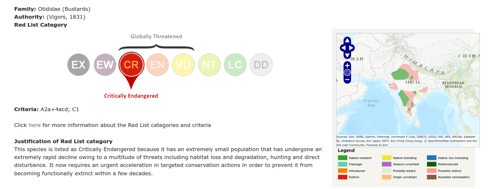
People have fundamental right to be free from impact of climate change: Supreme Court The top court made these remarks while lifting the blanket ban it had put on the laying of over-the-ground power lines in areas frequented by the bird commonly known as the Great Indian Bustard (GIB).
The Supreme Court says that people have the right to be free from the adverse effects of climate change. Is this truly the case, or is the judgment primarily aimed at saving corporate costs?
What is the extent of the Great Indian Bustard's habitat? What is the cost of installing underground wires? Additionally, what are the advantages and disadvantages of underground wires, and what are the long-term costs associated with them?
These are questions that need to be addressed.
Undergrounding
In civil engineering, undergrounding is the replacement of overhead cables providing electrical power or telecommunications, with underground cables. It helps in wildfire prevention and in making the power lines less susceptible to outages during high winds, thunderstorms or heavy snow or ice storms. An added benefit of undergrounding is the aesthetic quality of the landscape without the powerlines. Undergrounding can increase the capital cost of electric power transmission and distribution but may decrease operating costs over the lifetime of the cables.
Underground cables pose no hazard to low-flying aircraft or to wildlife.
Above-ground lines cost around $10 per 1-foot (0.30 m) and underground lines cost in the range of $20 to $40 per 1-foot (0.30 m). In highly urbanized areas, the cost of underground transmission can be 10–14 times as expensive as overhead. However, these calculations may neglect the cost of power interruptions.
The lifetime cost difference is smaller for lower-voltage distribution networks, on the range of 12-28% higher than overhead lines of equivalent voltage.
Advantages and disadvantages of Undergrounding
How do the birds die?
Aerial insulated cables
There are also above ground insulated cables that can protect birds from electroculation
Development and installation of a 69 kV aerial cable system
The Silent Crisis: Noise Pollution, Health Impact, and Fascism's Exploitation of Religious Noise Pollution
Introduction
In the modern world, noise pollution has emerged as a significant environmental threat, often overlooked but with far-reaching implications on public health, well-being, and societal cohesion. While the dangers of noise pollution are well-documented, its insidious nature makes it challenging to address effectively. Furthermore, in some cases, noise pollution has been deliberately exploited by fascist governments to polarize societies along religious lines, further exacerbating the negative consequences of this silent crisis.
The Impact of Noise Pollution on Health
Noise pollution is defined as any unwanted or disturbing sound that affects the quality of life and health of humans and other living organisms. It is a pervasive problem in urban areas, where the cacophony of traffic, construction, and industrial activities creates an unrelenting assault on the senses. The effects of noise pollution on human health are manifold, ranging from mild annoyance to severe physical and psychological disorders.
One of the most common health impacts of noise pollution is hearing loss. Prolonged exposure to loud noise can cause irreversible damage to the delicate hair cells in the inner ear, leading to permanent hearing impairment. In addition to hearing loss, noise pollution has been linked to sleep disturbances, cardiovascular issues, and increased stress levels.
Chronic exposure to noise pollution can also lead to cognitive impairments, particularly in children. Studies have shown that children living in noisy environments tend to have lower reading comprehension, memory retention, and problem-solving abilities compared to their peers in quieter neighborhoods. This has significant implications for educational attainment and overall life outcomes.
The Exploitation of Religious Noise Pollution by Fascist Governments
In some instances, noise pollution has been deliberately weaponized by fascist governments to sow discord and polarize societies along religious lines. This is particularly evident in countries where religious minorities are subjected to targeted noise pollution as a form of psychological warfare.
For example, in India, Hindu nationalist groups have been accused of using loudspeakers to blast religious songs and chants outside mosques during Muslim prayer times, creating a cacophony that makes it difficult for worshippers to concentrate. This deliberate noise pollution is a form of harassment designed to intimidate and marginalize religious minorities, fueling tensions and deepening societal divisions.
As the festival of Ram Navami approaches, concerns arise regarding the potential misuse of loudspeakers by political factions seeking to exploit this religious occasion for their own gain. Rather than promoting peaceful celebrations and fostering spiritual growth, the excessive use of loudspeakers can lead to noise pollution, disrupting the lives of local residents and exacerbating tensions within communities. It is crucial for governments and religious organizations to prioritize the well-being of citizens and the environment, promoting responsible use of loudspeakers and ensuring that festivals remain a time for unity, harmony, and spiritual reflection. By doing so, we can work together to combat the negative effects of noise pollution and preserve the true essence of religious celebrations.
In light of the upcoming Ram Navami celebrations, it is imperative that we reconsider the role of loudspeakers in these festivities. Instead of allowing them to become a tool for political posturing and noise pollution, we should strive for a more introspective and spiritual approach to the occasion. By focusing on the actual values of Lord Ram and promoting personal growth and reflection, we can ensure that the true spirit of Ram Navami is preserved.
Peace, silence and prayer
Throughout the Ramayana, Lord Ram consistently upholds principles of peace, compassion, and justice. He adheres to his duty as a prince and later as an exiled king with utmost integrity, despite facing numerous trials and tribulations. He exemplifies forgiveness, even towards those who wrong him, such as his stepmother Kaikeyi and the demon king Ravana. In the end, his victory over Ravana is not just a triumph of physical strength but also of righteousness and truth.
In Hindu philosophy, the concept of peace (shanti) is highly valued. It is believed that inner peace leads to harmony with the external world. Prayer, meditation, and religious rituals are often seen as means to attain this inner peace, enabling individuals to lead fulfilling and virtuous lives.
Noise and Ram Navami
The celebration of Ram Navami is often accompanied by such loud noise that people can even suffer heart attacks.
We have shifted prayer and spirituality to noise pollution during Ram Navami celebrations, and it has become a political tool to garner voters through polarization and the promotion of Hindu supremacy.
Conclusion
Noise pollution is a silent crisis that demands greater attention from policymakers, public health experts, and society at large. Its impact on human health and well-being is significant and far-reaching, affecting not only individuals but also entire communities and societies.
Moreover, the exploitation of religious noise pollution by fascist governments to polarize societies along religious lines is a particularly egregious form of this silent crisis. It is essential that we recognize the dangers of noise pollution and take concrete steps to mitigate its impact on our lives and the world around us. This includes implementing effective noise reduction strategies, raising public awareness about the dangers of noise pollution, and promoting interfaith dialogue and understanding to counter the divisive effects of religious noise pollution.
The story of Prahlada and Holika teaches us that good will always triumph over evil
The story of Prahlada and Holika teaches us that good will always triumph over evil, and that devotion and faith can overcome even the most powerful adversaries. This is a lesson that we can apply to our modern-day struggles, especially in the political arena.
One of the most pressing issues facing our democracy today is the prevalence of dictatorship and the manipulation of the voting process. In many countries, including India, the use of electronic voting machines (EVMs) has raised concerns about the accuracy and integrity of election results. The lack of transparency in the counting and tabulation of votes has led to widespread doubts about the legitimacy of election outcomes.
This is where we can draw inspiration from the story of Prahlada. Like Prahlada, who remained steadfast in his devotion to Vishnu despite the threats of his evil father, we must also remain steadfast in our commitment to democracy and the rule of law. We must not allow the forces of dictatorship and corruption to undermine our democratic institutions, and we must demand transparency and accountability in our electoral processes.
One way to achieve this is to ban the use of electronic voting machines and return to a paper-based system of voting. While EVMs were initially introduced to improve the speed and efficiency of vote counting, their use has been marred by allegations of tampering and fraud. By returning to a paper-based system, we can ensure that every vote is counted and that the results accurately reflect the will of the people.
In addition to banning EVMs, we must also work to end dictatorship and promote democratic values. This means standing up to authoritarian leaders who seek to consolidate power and silence dissent. It means supporting civil society organizations and independent media that hold our leaders accountable and promote transparency and accountability. And it means educating our citizens about the importance of voting and the role they play in shaping our democracy.
The fascist government’s unabated manipulation of legal systems, scapegoating, and discrimination have reached alarming levels. It has weakened or abolished democratic institutions and relentlessly suppressed opposition, arresting anyone who dares to dissent. In these trying times, we must draw inspiration from the story of Prahlada, who remained steadfast and unmoved by the relentless efforts of Hiranyakashipu to destroy him. Prahlada’s unwavering faith and devotion serve as a beacon of hope, reminding us of the power of perseverance in the face of adversity. We must emulate Prahlada’s resilience and stand firm in our commitment to democracy, human rights, and the rule of law. By working together and supporting each other, we can overcome the challenges posed by authoritarian regimes and create a society that values justice, equality, and freedom for all.
‘Billionaire Raj’ Is Pushing India Toward Autocracy
The super-rich have opened their wallets to Modi, and income inequality has soared over the past decade. With an election coming, ordinary voters need to ask, ‘What’s in it for us?’
As we celebrate Holi and the triumph of good over evil, let us remember the lessons of Prahlada and use them to guide our actions in the fight for democracy and justice. By standing up to dictatorship and demanding transparency and accountability in our electoral processes, we can ensure that our voices are heard and our votes are counted. Let us work together to create a brighter future for ourselves and for generations to come.
The meat politics in India
Meat eating by Early Humans
The diet of the earliest hominins was probably somewhat similar to the diet of modern chimpanzees: omnivorous, including large quantities of fruit, leaves, flowers, bark, insects and meat.
Eating meat drove the evolution of our big, powerful brain
https://www.nasw.org/article/eating-meat-drove-evolution-our-big-powerful-brain
The modern human brain is two to three times larger than that of our closest relatives, chimpanzees. But to supply energy to such metabolically demanding tissue, a distinct trade-off in energy allocation had to evolve.
In 1992, researchers proposed that this gradual expansion of the ancestral brain was made possible by switching from a vegetative diet to a meat-rich, fat-rich diet. As meat became a dietary staple, the gut shortened, and the brain no longer needed to rely on fuel from muscle and fat stores in the body. A shorter gut requires a great deal less energy than the lengthy gut of herbivores. Drawing on the extra energy resources from a fatty diet, and a shorter gut, the brain could afford to grow.
How a vegan diet could affect your intelligence
https://www.bbc.com/future/article/20200127-how-a-vegan-diet-could-affect-your-intelligence
There are several important brain nutrients that simply do not exist in plants or fungi
Creatine, carnosine, taurine, EPA and DHA omega-3 (the third kind can be found in plants), haem iron and vitamins B12 and D3 generally only occur naturally in foods derived from animal products, though they can be synthesised in the lab or extracted from non-animal sources such as algae, bacteria or lichen, and added to supplements.
Surprisingly, the children who were given the soup containing meat each day seemed to have a significant edge. By the end of the study, they outperformed all the other children on a test for non-verbal reasoning. Along with the children who received soup with added oil, they also did the best on a test of arithmetic ability. Of course, more research is needed to verify if this effect is real, and if it would also apply to adults in developed countries, too. But it does raise intriguing questions about whether veganism could be holding some people back.
Meat and climate change
https://www.un.org/en/climatechange/science/climate-issues/food
Which foods cause the most greenhouse gas emissions?
Animal-based foods, especially red meat, dairy, and farmed shrimp, are generally associated with the highest greenhouse gas emissions.
Meat production often requires extensive grasslands, which is often created by cutting down trees, releasing carbon dioxide stored in forests.
High Meat Consumption Linked to Obesity
Several studies have found a positive correlation between high meat consumption and obesity. For example, a study published in the International Journal of Obesity found that individuals who consumed high amounts of meat had a 33% higher risk of central obesity compared to those who consumed less meat.
Diets High in Meat Consumption Associated with Obesity
Moreover, a diet high in meat may also lack essential nutrients found in plant-based foods, such as fiber, vitamins, and minerals, which are essential for maintaining a healthy weight and preventing chronic diseases. A balanced diet should include a variety of foods from all food groups, including fruits, vegetables, whole grains, lean proteins, and healthy fats, to ensure that all necessary nutrients are obtained.
The Cultural Significance of Meat Consumption
Meat consumption is not just a biological necessity; it is also an essential part of many cultural practices. In many societies, meat is a symbol of wealth, power, and status. For instance, in many African cultures, meat is considered a delicacy and is served during special occasions and ceremonies. Similarly, in many Indigenous cultures, hunting and meat consumption are integral to their cultural identity and way of life.
Therefore, the cultural significance of meat consumption cannot be ignored. Attempts to impose vegetarianism or veganism on people who have deep-rooted cultural connections to meat consumption can be seen as a form of cultural imperialism. Instead, we should focus on promoting responsible meat consumption that takes into account the cultural practices and beliefs of different communities.
Animal Sacrifice and Superstition
While meat consumption can offer numerous health benefits and has played a significant role in human evolution, it is crucial to distinguish between its use as a source of nutrition and its involvement in animal sacrifice and superstition.
The practice of animal sacrifice, however, raises concerns about animal welfare and can perpetuate a culture of violence and disregard for the sanctity of life.
Superstition, on the other hand, involves the belief in supernatural influences and the attribution of events to causes that have no logical explanation. When it comes to meat consumption, superstition can lead to misguided beliefs and practices that may pose a danger to both human and animal health.
In some underdeveloped communities, the belief in supernatural forces and the need to appease these entities can result in horrific acts of violence, including the sacrifice of human lives.
The persistence of misguided beliefs and practices, such as animal sacrifice, serves as a stark reminder of the potential dangers that can arise from the intersection of superstition and human behavior. In some underdeveloped communities, the belief in supernatural forces and the need to appease these entities can result in horrific acts of violence, including the sacrifice of human lives.
The Importance of Personal Choice
The decision to consume meat or abstain from it is a deeply personal one that should be based on individual preferences, beliefs, and cultural practices. Imposing vegetarianism or veganism on people based on religious grounds can be seen as a form of cultural imperialism that undermines the agency of individuals to make their own choices. Moreover, it can lead to a sense of alienation and exclusion among those who do not adhere to the prescribed dietary practices.
Religious indoctrination to quit meat can also lead to conflicts within families and communities, especially in cultures where meat consumption is an essential part of social and cultural practices. For instance, in many Hindu households, meat is served during special occasions and festivals, and abstaining from it can be seen as a rejection of cultural traditions and practices.
Conclusion
The debate surrounding meat politics has become increasingly polarized, with advocates for vegetarianism and veganism on one side and those who support responsible meat consumption on the other. While it is essential to consider the environmental impact of meat production and consumption, it is equally important to recognize the historical, evolutionary, and health benefits of meat consumption.
Gullibility Test
gullibility
tendency to believe too readily and therefore to be easily deceived
Gullibility is a failure of social intelligence in which a person is easily tricked or manipulated into an ill-advised course of action. It is closely related to credulity, which is the tendency to believe unlikely propositions that are unsupported by evidence.
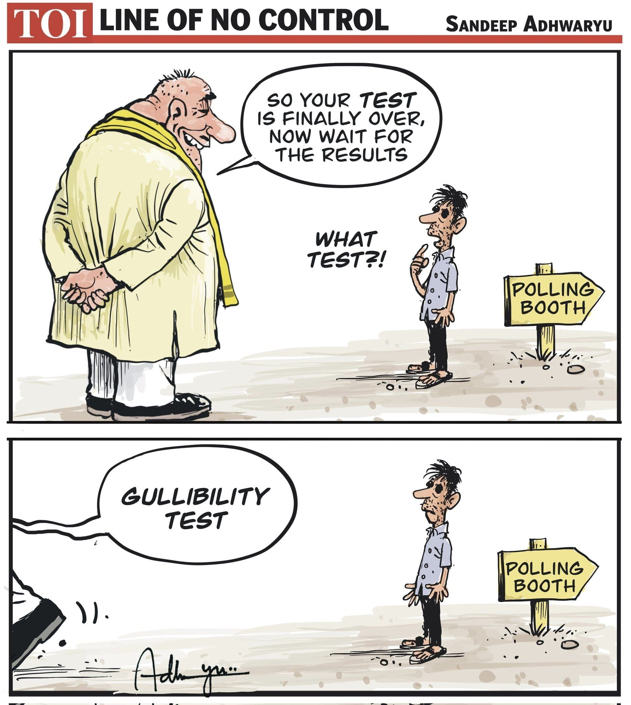
- If the next time, people elect Modi, he will leave no stone unturned to destroy the economy. The impact of many times national debt created, rampant taxation, taking over all institutions and corrupting it, and disinformation will soon be seen in the next five years.
In a democracy, the people's choice holds immense power. If the Indian electorate chooses to re-elect Prime Minister Narendra Modi, it is crucial to understand the potential economic implications of his leadership. With a track record of excessive borrowing, increased taxation, and the erosion of institutional integrity, the next five years could witness a severe economic downturn.
- Debt can boost the economy for some time, everything can appear green for that time, but finally, you have to pay the debt.
While short-term economic growth can be stimulated by borrowing, the long-term consequences of accumulating debt can be devastating. As the debt burden grows, the government's ability to invest in essential sectors like infrastructure, education, and healthcare diminishes. Eventually, the repayment of these debts will necessitate austerity measures, leading to reduced public spending and further economic contraction.
- As govt will have no money left for spending, it will rely on taxes as much as they can, taxing everything possible. Excessive taxation will cause dead weight loss, which means a decrease in trade, rise of prices, creating a vicious cycle for economic collapse.
Faced with mounting debt and dwindling resources, the government may resort to excessive taxation to generate revenue. However, this strategy can backfire, leading to a decrease in trade, higher prices, and ultimately, an economic collapse. Dead weight loss, a term used in economics to describe the loss of economic efficiency, can result from such policies, as consumers and businesses adjust their behavior to avoid the increased tax burden.
- Govt can also rely on printing more and more money for govt spending ultimately devaluing the currency.
Another potential response to the government's financial woes is the printing of more money to fund public spending. While this may provide temporary relief, it can lead to inflation and the devaluation of the currency. As the value of the rupee decreases, imports become more expensive, and the purchasing power of the average citizen diminishes. This can further exacerbate the economic crisis.
- We already seen economic policies like demonetization and COVID mismanagement which made a disastrous impact on the economy.
The economic policies implemented under Prime Minister Modi's leadership, such as demonetization and the mishandling of the COVID-19 pandemic, have already had a detrimental impact on the Indian economy.
Odisha's future for the next five years looks gloomy with the change in government.
What will you choose: rampant exploitation by big corporates or social welfare? Confused voters of Odisha have chosen the former.
The governance of the Modi-led BJP and the Naveen-led BJD is markedly different. One focuses on big corporates and privatization, while the other leans towards social welfare to some extent. Although the BJD may have its flaws, politics under the First-Past-the-Post (FPTP) voting system is not about choosing between good and evil, but rather between lesser evils. By opting for a more evil government over a less evil one, Odisha has made a significant mistake.
Odisha, among the 9 poorest states in India, has seen significant progress in reducing poverty under Naveen Patnaik's leadership. According to the Niti Aayog's Multidimensional Poverty Index (MPI) report, poverty in Odisha reduced by 48% in the past five years. In 2022-23, only 11.07% of the state's population was considered multidimensionally poor.
While data may be questioned due to the lack of high-quality data in India, some conclusions can still be drawn, albeit not entirely accurate.
It is evident that the Modi-led government has been reluctant to conduct surveys and provide authentic, elaborate, and data-driven insights from thorough research based questionnaires. This could have exposed inefficiencies in governance and invited criticism, so it seems that the government is more content with no data rather than quality data. Additionally, research funding for surveys has been limited.
More disinformation in Odisha
India has become number one in spreading disinformation.
For example, to win the election, a campaign filled with bigotry and hatred was directed towards Pandian. By portraying the Tamil Pandian as a secret Chief Minister of Odisha and mocking the Tamil way of life.
The BJP is adept at hate politics, as evidenced by their targeting of a Tamil Pandian who has lived and worked in the state for 20 years and speaks fluent Odia. They promote the idea that loyalty to the state should be determined by blood, which is a divisive and discriminatory ideology.
Do you prefer a candidate like Pandian from an independent regional party, or do you support a system where the chief minister and all other ministers and bureaucrats are mere bootlickers, remote-controlled by Modi and Shah? These bootlickers elevate Modi to the status of a god, placing him even above Lord Jagannath.
Alternatively, you may end up with a Chief Minister who is ideologically driven by the RSS, lacking the technical expertise to tackle complex economic issues, create jobs, and provide quality education. Moreover, such a leader may not possess the sociological understanding required to foster religious harmony, leading to potential social unrest. In contrast, an educated Chief Minister is essential to navigate the intricacies of governance, make informed decisions, and ensure the overall development of the state.
New Odisha CM Had Campaigned for Release of Graham Staines' Killer Dara Singh
Do you prefer the South model, exemplified by Pandian, which is widely regarded as one of the most successful models in India, or do you opt for the Gujarat capitalist model, which boasts high education dropout rates, malnourished children, and exorbitant electricity bills? The choice between these two distinct models presents a clear contrast in priorities and outcomes.
Although there have been instances of collaboration between the BJP and the BJD, including the passing of bills that some may deem undemocratic, the BJD has largely maintained a safe distance from the BJP. Despite their occasional cooperation, the BJD has strived to preserve its independence and differentiate itself from the BJP's ideology and policies.
The trend of independent anchors resigning from TV news channels is concerning, BJP led govt in odisha paves the way for heightened propaganda and hatred in Odia news media. It appears that Odia news channels are emulating the model of national TV news channels during Modi's era of full majority, where biased and divisive content thrived. This development undermines journalistic integrity and sets a dangerous precedent for media manipulation in the state of Odisha.
The government will continue to exploit WhatsApp and other social media platforms to disseminate disinformation, conceal its flaws, and manipulate public opinion through emotional appeals. This tactic enables them to shape public perception and maintain control over the narrative, often at the expense of transparency and factual information.
Normalizing Internet Shutdowns and Curfews Amidst the Rise of Religious Politics
As the influence of religious groups continues to grow in our society, it is becoming increasingly apparent that the political landscape is shifting in a manner that reflects this. With the rise of religious politics, we are seeing the implementation of measures such as curfews and internet shutdowns in an attempt to maintain order and control. While these actions may seem necessary to some, the long-term consequences of such restrictions can be detrimental to both individuals and the economy as a whole.
Internet Shutdown is Anti-constitutional
Internet shutdowns, in particular, are a cause for concern. By cutting off access to the internet, essential communication channels, vital information sources, and online businesses are hindered. This not only affects the ability of citizens to stay connected and informed but also has a direct impact on the economy. Small businesses, freelancers, and entrepreneurs who rely on the internet to conduct their work can suffer significant financial losses during these shutdowns, leading to a potential decline in the economy.
In 2022, the world saw 187 internet shutdowns – 84 by India alone
Moreover, the normalization of curfews and internet shutdowns can lead to a further erosion of civil liberties and individual freedoms. As these measures become more commonplace, citizens may become desensitized to the infringement of their rights, ultimately allowing for more drastic and authoritarian policies to be enacted in the name of maintaining order.
Curfew in Odisha's Balasore after clash between groups
Distracted and uneducated youth, with no real issues to address, are quick to protest and incite communal riots over a Facebook post, and have become mere pawns in the agendas of politicians.
Odisha imposes internet shutdown in Bhadrak over communal tension
More exploitation of resources
Odisha, endowed with abundant mineral resources, faces the risk of rampant exploitation, which could endanger the livelihoods of tribal communities dependent on the forests. The state's mineral wealth has caught the attention of corporate giants like Adani, Ambani, and other conglomerates. While they may tout their activities as necessary for development, the reality is that the lives and ecosystems of tribal people are at stake. The propagation of pro-development propaganda through various media channels, including TV news, newspapers, and social media, serves to mask the potential detrimental impacts on the vulnerable communities and the environment.
What will happen to the welfare schemes of Naveen led Govt?
What will happen to various welfare schemes like BSKY, Mamata Jojana, SHG group?
What will happen to public transport, Mo Bus, Lakhmi Bus?
Things seem to be now uncertain.
Education System
The fate of the 5T schools, known for their improved infrastructure under Naveen's leadership, is uncertain under a BJP government led by Modi. The quality of education in Odisha under the leadership of Naveen remains questionable. However, it is worth acknowledging that the school infrastructure has witnessed some positive changes and improvements during his tenure. Modi, who has positioned himself as a divine, non-biological entity, promotes pseudoscience over scientific facts, as evidenced by his party's efforts to remove the theory of evolution from the curriculum. This raises concerns about the BJP's commitment to educational standards and their potential disregard for evidence-based learning.
Maharashtra (BJP Govt) may lower maths & science pass mark to 20/100
The move by the BJP government to consider lowering pass marks in Maharashtra, especially in critical subjects like math and science, indicates a troubling approach to education standards. In Maharashtra, the potential reduction of the pass mark for these subjects to 20 out of 100 reflects a shift away from fostering quality education and intellectual rigor. Math and science are fundamental disciplines that build critical thinking, problem-solving, and analytical skills, essential not only for individual growth but also for societal advancement. Lowering standards undermines the value of these subjects, leaving students ill-prepared for the complexities of the modern world. These subjects are cornerstones of technological and scientific progress, which are essential for a nation’s development. Meanwhile, it appears the party may prioritize winning elections through divisive tactics, including religious conflict, disinformation, and indoctrination, over promoting scientific literacy and critical thought—skills necessary for a robust, enlightened democracy. This approach risks compromising the future of young learners and, ultimately, the progress of the nation itself.
Lakshmi bus scheme
The BJP government was never a fan of public transport, that benefits the middle-class and poor, instead their policies are to build car centric infrastructure. The Lakshmi bus scheme is now under uncertainty. BJP government may not expand it further instead, busy is shutting down the services. Lakshmi bus is already shut down in Malkangiri.
The Manifesto
Naveen made a promise to provide 100 units of free electricity, a feat that the BJP government would find difficult to replicate. Instead, there is evidence of a coal scam by corporates, leading to an increase in electricity prices beyond affordability.
Roof-top solar installations, led by the Modi government, are also questionable. Although the Modi government has done some good work on solar infrastructure, this too can be challenged as they are attempting to create a corporate-based solar grid to keep solar power under the control of corporations, rather than allowing people to run rooftop solar systems.
BJD was also implementing it before election through Naveen card, will BJP bring such health care benefits to middle class?
Though there are reports that many hospitals are not accepting BSKY cards due to non-payment of fees during BJD tenure, but exact figures are unavailable, thanks to the insincere media.
Tall claims by BJP of 300 units of free electricity, but no mention of it in their manifesto.
We will provide free electricity up to 100 units for every antyodaya household.
Who are antyodaya household, is it 0.1% of people, 1% of people or even less or more?
BJP Important Promises in short
Renaming of schemes
What do you expect from the government? Do you expect an improvement in the services of existing schemes or merely a rebranding of all the schemes introduced by the previous government, accompanied by a hefty expenditure of hundreds of crores on the rebranding effort?
{kind=link}
Free money: An Electoral Fraud
Distributing free money without addressing supply chain issues and controlling inflation and without taking account of state income is a form of electoral fraud, akin to vote buying.
Subhadra Yojana
How will 10,000 rupees per year help women and the economy? With 10,000 rupees, one receives only 833 rupees per month. What can one do with 833 rupees? It can barely buy meals for two to three days. Furthermore, the excessive debts and printing of money will only further devalue the currency and decrease purchasing power. If the government provided rations with a fixed amount, we could ensure that the benefit would not fluctuate with changing prices. This promise of 833 rupees per month, without addressing supply chain issues and inflation, is nothing but an electoral gimmick and a fraudulent attempt to fool the people.
Additionally, the scheme has limited reach. With a female population of 2.25 crore in Odisha, the scheme only reaches 70 lakh women.
Free money and hyperinflation
When a government prints and distributes large amounts of free money without addressing supply chain issues and inflation, it can lead to hyperinflation, where prices of goods and services increase rapidly. This occurs because the excess supply of money outpaces the supply of goods, causing each unit of currency to lose value. As prices rise, the purchasing power of individuals decreases, leading to increased debt as people borrow to maintain their standard of living. This cycle of printing more money to service the growing debt further exacerbates inflation, creating a vicious cycle that can ultimately lead to the destruction of an economy.
The Bulldozer Government: Destroying Local Businesses
The BJP government has a track record of bulldozing small businesses, and their actions often leave local communities and entrepreneurs suffering. These road sides are often the lifeblood of local communities, providing a means for small business owners to support their families and offer convenient services to the public. What is the purpose of govt land? While it is true that road sides are typically government property, the purpose of such property is to serve the public. These entrepreneurs don't have the same opportunities and money as large corporations to build supermarkets, and must instead make do with limited resources with roadside business. The destruction of the Bhadrak market, where countless shops have been bulldozed, is a prime example of the government's shortsighted and dictatorship approach. Widening roads to accommodate cars will never be enough, and the true loss is felt by those whose livelihoods are being destroyed in the name of "progress."
No more shopkeepers to sell children's materials or no more shopkeepers to sell spectacles; their livelihoods have been destroyed.
Role of Opposition
This time, the BJP, as a single party, has not secured a full majority in the center. The opposition has gained strength and their role is to expose the government's lies and prevent the situation from worsening.
Suggestion for Political Reform in BJD
Naveen Patnaik can no longer lead due to his old age. He is now 77 and suffers from various ailments. It's time for him to retire. But what will be the future of the BJD? Political parties have always depended on a single leader, and elections are fought based on that single leader's name. The defeat of the BJD was partly because the BJP highlighted that Naveen Patnaik is no longer able to lead, questioning how a Tamil from a different state could lead the BJD. Pandian is not Odia.
It's time for reform in the BJD. Leaders should be elected by party workers, and it's crucial to use Approval Voting or Score Voting to select the leader, not the First-Past-The-Post (FPTP) system. FPTP is a terrible voting method due to vote splitting; it is unlikely to yield the best leader or reflect the consensus of party workers and the people.
Additionally, decision-making needs to be more decentralized. The BJD can form evidence based teal organization to handle a self-managed system effectively decreasing centralized decision-making.
This approach can also be applied to other political parties, such as Congress or other regional parties.
FPTP: The Most Problematic Voting Method
FPTP, or the first-past-the-post voting method, is indeed considered one of the most problematic voting systems. The example provided illustrates this issue well. In the 2024 Lok Sabha elections, the Biju Janata Dal (BJD) secured 37.4% of the vote share but did not win any seats, while the Bharatiya Janata Party (BJP) won 20 out of 21 seats with a 45.4% vote share. It's a completely unfair distribution of seats. One can also consider the opaque EVM voting system and its potential for manipulation.
"Odisha": [
{
"party": "Bharatiya Janata Party",
"percentage": 45.40879937009895,
"votes": 11410789
},
{
"party": "Biju Janata Dal",
"percentage": 37.460182499711685,
"votes": 9413379
},
{
"party": "Indian National Congress",
"percentage": 12.526486303130094,
"votes": 3147784
},
{
"party": "None of the Above",
"percentage": 1.2952471775069994,
"votes": 325483
},
{
"party": "Independent",
"percentage": 1.1795960575630748,
"votes": 296421
},
{
"party": "Jharkhand Mukti Morcha",
"percentage": 0.5388151534404875,
"votes": 135399
},
{
"party": "Socialist Unity Centre Of India (COMMUNIST)",
"percentage": 0.45754658377925195,
"votes": 114977
},
{
"party": "Bahujan Samaj Party",
"percentage": 0.411221668519902,
"votes": 103336
}
]
Widespread EVM Manipulation in Odisha
Looking at the data of EVM counts during polling and counting, one can confidently say that EVM manipulation is widespread in Odisha.
Will the election be considered valid? #RiggedElection #ElectoralFraud
{
"constituency_name": "Bargarh",
"difference": -1803,
"evm_turnout_votes": 1300266,
"evm_turnout_votes_polled": 1302069,
"state": "Odisha"
},
{
"constituency_name": "Sundargarh",
"difference": -1907,
"evm_turnout_votes": 1148968,
"evm_turnout_votes_polled": 1150875,
"state": "Odisha"
},
{
"constituency_name": "Sambalpur",
"difference": -1610,
"evm_turnout_votes": 1190616,
"evm_turnout_votes_polled": 1192226,
"state": "Odisha"
},
{
"constituency_name": "Keonjhar",
"difference": -1402,
"evm_turnout_votes": 1252761,
"evm_turnout_votes_polled": 1254163,
"state": "Odisha"
},
{
"constituency_name": "Mayurbhanj",
"difference": -3666,
"evm_turnout_votes": 1165669,
"evm_turnout_votes_polled": 1169335,
"state": "Odisha"
},
{
"constituency_name": "Balasore",
"difference": 1173,
"evm_turnout_votes": 1235600,
"evm_turnout_votes_polled": 1234427,
"state": "Odisha"
},
{
"constituency_name": "Bhadrak",
"difference": -5619,
"evm_turnout_votes": 1291183,
"evm_turnout_votes_polled": 1296802,
"state": "Odisha"
},
{
"constituency_name": "Jajpur",
"difference": 809,
"evm_turnout_votes": 1151847,
"evm_turnout_votes_polled": 1151038,
"state": "Odisha"
},
{
"constituency_name": "Dhenkanal",
"difference": -9427,
"evm_turnout_votes": 1184033,
"evm_turnout_votes_polled": 1193460,
"state": "Odisha"
},
{
"constituency_name": "Bolangir",
"difference": -2638,
"evm_turnout_votes": 1394081,
"evm_turnout_votes_polled": 1396719,
"state": "Odisha"
},
{
"constituency_name": "Kalahandi",
"difference": -2137,
"evm_turnout_votes": 1322799,
"evm_turnout_votes_polled": 1324936,
"state": "Odisha"
},
{
"constituency_name": "Nabarangpur",
"difference": -7296,
"evm_turnout_votes": 1236661,
"evm_turnout_votes_polled": 1243957,
"state": "Odisha"
},
{
"constituency_name": "Kandhamal",
"difference": -2571,
"evm_turnout_votes": 990520,
"evm_turnout_votes_polled": 993091,
"state": "Odisha"
},
{
"constituency_name": "Cuttack",
"difference": -1977,
"evm_turnout_votes": 1116941,
"evm_turnout_votes_polled": 1118918,
"state": "Odisha"
},
{
"constituency_name": "Kendrapara",
"difference": -4212,
"evm_turnout_votes": 1272561,
"evm_turnout_votes_polled": 1276773,
"state": "Odisha"
},
{
"constituency_name": "Jagatsinghpur",
"difference": -3597,
"evm_turnout_votes": 1280103,
"evm_turnout_votes_polled": 1283700,
"state": "Odisha"
},
{
"constituency_name": "Puri",
"difference": -5650,
"evm_turnout_votes": 1191034,
"evm_turnout_votes_polled": 1196684,
"state": "Odisha"
},
{
"constituency_name": "Bhubaneswar",
"difference": -1334,
"evm_turnout_votes": 1077476,
"evm_turnout_votes_polled": 1078810,
"state": "Odisha"
},
{
"constituency_name": "Aska",
"difference": 164,
"evm_turnout_votes": 1016047,
"evm_turnout_votes_polled": 1015883,
"state": "Odisha"
},
{
"constituency_name": "Berhampur",
"difference": -2118,
"evm_turnout_votes": 1038806,
"evm_turnout_votes_polled": 1040924,
"state": "Odisha"
},
{
"constituency_name": "Koraput",
"difference": -4159,
"evm_turnout_votes": 1144023,
"evm_turnout_votes_polled": 1148182,
"state": "Odisha"
}
Odisha Assembly Election
In the Odisha assembly election, have people actually voted for the BJP? The data suggests otherwise, as the vote percentage of BJD is more than that of BJP. Now, look at the data on seat share. The manipulation of EVMs is so evident.
Seat Percentage
Bharatiya Janata Party - BJP seat percentage:53.06122449
Biju Janata Dal - BJD seat percentage: 34.693877551
Vote share
Bharatiya Janata Party - BJP vote share: 40.07348883521068
Biju Janata Dal - BJD seat percentage: 40.22330215683086
Difference
Difference in seat percentage: 18.367346939
Difference in vote share: −0.149813322
Yes, its negative. BJD has more vote share than BJP.
Winner won majority in assembly election
In 38 constituencies, the winner won the majority votes, while in 109 constituencies, the candidate who won did not get the majority votes.
One can assume how terrible FPTP is. FPTP voting is most susceptible to EVM manipulation, and it's also terrible because it hardly considers what the majority of voters want. Moreover, it's antidemocratic because in 74.149% of constituencies, the representative didn't receive the majority of votes or the majority mandate from the people.
We need to start considering a more fair voting system, such as Approval Voting, that eliminates vote splitting.
Breaking Free from the Post-Truth World: Why Indian Media Should Migrate to Mastodon and Bluesky
We're living in a world where the lines between fact and fiction are increasingly blurred, thanks to the dominance of Google, Meta (Facebook), and X (Twitter). These platforms have created a post-truth world where disinformation spreads like wildfire, often with severe consequences. It's time for a change. Independent media in India, in particular, should consider abandoning these platforms and embracing alternatives that prioritize transparency, accountability, and community control.
The Power of Decentralization: Mastodon and Bluesky
Mastodon and Bluesky offer a refreshing alternative to the traditional social media landscape. As free and open-source software (FOSS), these platforms empower users to take control of their online interactions. Their algorithms are transparent, and the community has a say in how they're developed and implemented. This means that disinformation is much harder to spread, as it's subject to public scrutiny and control. By decentralizing the power dynamics, Mastodon and Bluesky create a more democratic and trustworthy online environment.
Interoperability and Innovation
One of the most significant advantages of Mastodon and Bluesky is their interoperability. Users can choose from a variety of custom UIs, and developers can create interfaces that work seamlessly across both platforms. This flexibility also allows for the integration of new technologies and incentives systems, such as peer-to-peer (P2P) networks and blockchain-based monetization. With open APIs, users can cross-post content across platforms, ensuring that their online presence is not limited to a single network.
A Call to Action for Indian Media and People of India
It's time for Indian media to break free from the shackles of Twitter and explore the possibilities offered by Mastodon and Bluesky. By doing so, they can regain control over their online presence, ensure the integrity of their content, and foster a more engaged and informed community. Join the movement towards a more transparent, accountable, and community-driven social media landscape. Make the switch to Mastodon and Bluesky today!
The Decentralized Nature of the Fediverse: A Safeguard Against Corporate Takeovers
One of the most significant advantages of the Fediverse, the network that includes Mastodon and Bluesky, is its decentralized ownership structure. Unlike traditional social media platforms, the Fediverse is not owned by a single corporation, venture capital firm, or individual. Instead, its ownership is distributed across thousands of independent servers, each operated by separate entities, including unpaid volunteers, non-profit community groups, and co-ops. This decentralized nature makes it virtually impossible for any single entity, including tech giants like Google, Facebook, or Elon Musk, to buy out the Fediverse or exert control over it. The Fediverse is like a global phone network, with each server acting as a separate node, making it extremely difficult to centralize control. Furthermore, the open-source software that powers the Fediverse is licensed in a way that prevents any single company or organization from taking control of it. This ensures that the Fediverse will remain a community-driven, transparent, and accountable space, free from the influence of corporate interests.
A Snowball Effect: Independent Media's Switch to Mastodon and Bluesky Can Inspire a National Movement
As independent media outlets in India make the switch to Mastodon and Bluesky, they will not only be taking a stand against the spread of disinformation and corporate control, but also creating a powerful feedback loop that can inspire a national movement. By abandoning traditional social media platforms and embracing the decentralized, community-driven ethos of Mastodon and Bluesky, independent media will be showing their audience a better way to engage with online content. As people follow their favorite media outlets to these new platforms, they will experience firsthand the benefits of a more transparent, accountable, and democratic online environment. This, in turn, will create a groundswell of interest and enthusiasm among the general public, encouraging more and more people to make the switch. Before long, a snowball effect will take hold, with a growing number of Indians joining the Fediverse and demanding better from their social media platforms. By taking the lead, independent media can help create a tipping point that transforms the way India interacts online, promoting a culture of critical thinking, media literacy, and civic engagement.
The Authoritarian Playbook: Corporate Social Media as a Tool for Disinformation and Control
Corporate social media platforms like Twitter, Facebook, and Google have become the unwitting accomplices of authoritarian governments and politicians seeking to exert control over the narrative. These platforms' algorithms, designed to maximize engagement and profit, can be easily gamed by those in power to spread disinformation and propaganda. Authoritarian regimes and politicians have learned to exploit these platforms to manipulate public opinion, silence dissenting voices, and shape the narrative to their advantage. By leveraging the vast reach and influence of these platforms, they can spread false information, create confusion, and undermine trust in institutions, all while maintaining a veneer of legitimacy. The lack of transparency and accountability on these platforms makes it difficult to track the origin and spread of disinformation, allowing authoritarian actors to operate with impunity. By abandoning these platforms and embracing decentralized, community-driven alternatives like Mastodon and Bluesky, independent media and citizens can break free from this cycle of manipulation and reclaim control over the narrative, fostering a more informed and critically thinking public.
The Path to Enshittification: How Ad-Driven Models Poison Information and Society
In the digital age, much of what we consume online is shaped by algorithms tuned to maximize one thing: ad revenue. Platforms like Facebook, Google, and YouTube have built empires by leveraging user data to deliver hyper-targeted ads. This business model, while profitable for these corporations, has a dark side—a phenomenon aptly termed enshittification. This describes the degradation of digital spaces and content as platforms prioritize profit over user experience, well-being, and the truth itself.
As these platforms evolve, their relentless focus on ad revenue has led to a toxic information ecosystem. At its core, this model feeds us content not because it’s accurate or beneficial, but because it keeps us scrolling, clicking, and consuming. It’s a system that thrives on outrage, sensationalism, and polarization—traits that undermine democracy, public discourse, and mental health. The question we must grapple with is whether an alternative is possible—and whether society is ready to embrace it.
How Big Tech’s Business Model Harms Society
Exploitation of User Data
Big Tech platforms collect massive amounts of user data to refine their ad-targeting capabilities. This data isn't just harvested for convenience—it’s a goldmine that advertisers pay billions to access. This monetization of personal information raises significant privacy concerns and turns users into products, eroding trust.
Algorithmic Manipulation
Algorithms prioritize engagement over everything else, pushing divisive and emotionally charged content to the forefront. The result is an amplification of misinformation, conspiracy theories, and propaganda, which can destabilize societies and erode democratic values.
Monopolistic Practices
With their dominance, companies like Google and Facebook stifle competition, limiting the rise of alternative platforms or models. This monopoly ensures their profit streams remain unchallenged, perpetuating the cycle of enshittification.
Erosion of Mental Health
Social media platforms exploit psychological vulnerabilities to keep users hooked. This “attention economy” fosters anxiety, depression, and addiction, further contributing to societal harm.
Are We Fed Up? The Case for Change
For decades, these issues have festered, yet the ad-driven model remains ubiquitous. Why? Because it's free—or at least it appears to be. However, the hidden costs—privacy invasion, societal polarization, and mental health crises—are too high to ignore.
The growing disillusionment with Big Tech is evident. Movements like data privacy advocacy, regulatory crackdowns, and the rise of decentralized platforms signal a desire for alternatives. But can we truly escape this trap?
Can P2P Technologies Like IPFS and Blockchain Offer a Way Out?
Peer-to-peer (P2P) technologies such as IPFS (InterPlanetary File System, including frameworks like Iroh) and blockchain networks like Polkadot represent a promising alternative to the centralized, ad-driven internet dominated by Big Tech. These systems are designed to be decentralized and community-owned, making them resilient to corporate monopolization. The network that corporations can't own. However, their potential to revolutionize content monetization and information dissemination depends on addressing key challenges, particularly Sybil attacks and the risks of exploitation by bad actors or grifters.
One possibility is to use reputation-based and public consensus mechanisms for monetization. Unlike engagement-based monetization, which rewards sensationalism and manipulation, reputation-based systems could prioritize quality, trustworthiness, and community approval. By requiring at least 51% consensus or approval for significant decisions like funding or validations and making the system resilient to Sybil attacks—where bad actors use fake identities to manipulate outcomes—through methods such as staking and KYC. With modern cryptographic tools and algorithms, these mechanisms can be made secure, scalable, and transparent.
Overcoming the Stigma Around P2P
P2P technologies have been criticized for enabling scams and grifters, partly because of their association with poorly regulated projects and bad actors. Yet, these problems are not inherent to the technology—they stem from design flaws and lack of oversight. Algorithms already exist to mitigate these risks, such as proof-of-stake systems, decentralized identity protocols, and zero-knowledge proofs, which can ensure fairness and accountability without compromising decentralization.
To change the narrative, developers must focus on designing systems that prevent abuse while preserving the core values of decentralization. This requires shifting away from the "monetize engagement" mindset, which has plagued Big Tech, and instead rewarding meaningful contributions and community trust.
Navigating Constraints in Blockchain and Off-Chain Computing
Building on blockchain comes with inherent constraints, including limited capacity for heavy computation and storage. Similarly, off-chain computing methods like zero-knowledge proofs, while powerful for privacy, are slow and computationally intensive. Even basic computations can take hours, making the user experience challenging. However, these limitations are not insurmountable. By designing systems that account for these constraints, we can still create systems with trade-offs that are user-friendly enough.
The Road Ahead
The current system has persisted because it works—for Big Tech. But as enshittification continues to corrode the digital world, the cracks are showing. Public pressure, coupled with regulatory action and innovative alternatives, could pave the way for a healthier, more democratic internet.
We are at a crossroads. Change is not only possible—it’s necessary. The question is whether we’re ready to step out of our comfort zone and invest in an internet that serves people, not profits.
The time for alternatives is now. Are we ready to build them?
Can Fascism and Dictatorship might come back?
Why fascism is so tempting -- and how your data could power it
Fascism and dictatorships might come back, but they will come back in a new form, a form which is much more relevant to the new technological realities of the 21st century. In ancient times, land was the most important asset in the world. Politics, therefore, was the struggle to control land. And dictatorship meant that all the land was owned by a single ruler or by a small oligarch. And in the modern age, machines became more important than land. Politics became the struggle to control the machines. And dictatorship meant that too many of the machines became concentrated in the hands of the government or of a small elite. Now data is replacing both land and machines as the most important asset. Politics becomes the struggle to control the flows of data. And dictatorship now means that too much data is being concentrated in the hands of the government or of a small elite.
The greatest danger that now faces liberal democracy is that the revolution in information technology will make dictatorships more efficient than democracies.
In the 20th century, democracy and capitalism defeated fascism and communism because democracy was better at processing data and making decisions. Given 20th-century technology, it was simply inefficient to try and concentrate too much data and too much power in one place.
But it is not a law of nature that centralized data processing is always less efficient than distributed data processing. With the rise of artificial intelligence and machine learning, it might become feasible to process enormous amounts of information very efficiently in one place, to take all the decisions in one place, and then centralized data processing will be more efficient than distributed data processing. And then the main handicap of authoritarian regimes in the 20th century -- their attempt to concentrate all the information in one place -- it will become their greatest advantage.
The Impact of Moore’s Law Ending: A Shift Towards Decentralized Systems
As Moore's Law ends and the pace of exponential improvements in centralized processing power diminishes, the reliance on centralized AI systems will face increasing challenges. This shift opens the door for distributed and decentralized systems to emerge as more viable and efficient alternatives. With these systems evolving and gaining prominence, we can anticipate reduced dominance by Big Tech and oligarchic control. Decentralized systems, by design, democratize computational power and decision-making, offering a future where technology is less prone to monopolization and more equitably distributed.
We can expect less disruption from oligarchs and Big Tech with Moore's law end, as distributed and decentralized protocols begin to take over the system.
User-Controlled FOSS Apps: The Lifeline for Democracy in the Digital Age
Democracy is the cornerstone of progress, the mortar that binds societies together. But it’s under siege. The tools that were meant to democratize information, connect us across borders, and amplify our voices have become weapons of division. The platforms that promised freedom have delivered us into the hands of corporations and algorithms, sowing discord and undermining trust. If we don’t act now, democracy will die in the darkness of misinformation and manipulation.
The Problem with AI-Driven Feeds
Social media has been hijacked. The feeds you scroll through aren’t random; they’re carefully curated by algorithms designed to maximize engagement, not to inform or unite. These systems don’t care about truth or harmony—they care about clicks, outrage, and ad revenue. They amplify the most extreme voices, distort facts, and create echo chambers where conspiracy theories thrive. The result? A polarized society where trust in institutions is shattered, and democratic processes are attacked from all sides.
This isn’t a coincidence. It’s the result of a system designed to profit from division. The same platforms that claim to empower users have become battlegrounds for misinformation, election meddling, and hate speech. And they’re not just harming democracy here at home—they’re exporting this toxicity worldwide. If we continue down this path, the experiment of democracy will fail, and the blame will lie with our complacency.
The Solution: User-Controlled, Decentralized Platforms
There is hope. We don’t have to accept this broken system. The future of democracy lies in user-controlled, decentralized platforms built on Free and Open Source Software (FOSS). These tools reject the centralized, profit-driven model that has ruined so much of the internet. They put power back in the hands of users, not algorithms. They prioritize transparency, privacy, and community—not corporate interests.
Platforms like Mastodon and Bluesky are leading the charge. They’re proving that it’s possible to have social media that brings people together instead of tearing them apart. They’re showing that it’s possible to fight misinformation without censorship, to have meaningful conversations without the interference of opaque AI systems. They’re the future of social media, and they’re the future of democracy.i
Breaking Free from Big Billionaires Media
The stranglehold of big tech on media is a threat to democracy itself. When media outlets—from social platforms to traditional news organizations—operate under the control of a few powerful corporations, they become tools of propaganda rather than vehicles for truth. It’s time to reclaim our right to a fair and unbiased media. By supporting decentralized, open-source platforms, we can break free from the monopolistic grip of big tech and ensure that information flows freely, transparently, and without interference.
A Call to Action
The time to act is now. If you care about democracy, if you believe in the power of truth and unity, you must join the fight. Switch to decentralized platforms. Demand transparency from the platforms you use. Support the tools that prioritize people over profits. And if you’re a channel or organization with influence, lead by example. Don’t wait for others to move—be the change you want to see.
Amplifying the Snowball Effect in India
In India, we have already seen commendable steps taken by media outlets such as Scroll.in, The Hindu, and Wire.in, who have embraced Bluesky. These platforms are setting a precedent, demonstrating the potential for a more engaged and informed citizenry. However, the movement is not yet complete. It is imperative that other news outlets, such as Newslaundry and NewsMinute, follow suit. Their participation is crucial in diversifying the voices and perspectives that contribute to this digital commons.
Equally important are the roles of journalists, influencers, activists and cartoonists like Ravish, Deshbhakt, Ranting gola, Satish Acharya, Anjali Bhardwaj, Mehmood Pracha, Saurav Das, Faye D’Souza, Licypriya Kangujam, Sonam Wangchuk and many others. Their influence extends beyond news reporting; they are custodians of public discourse. By migrating to Bluesky, they can amplify their impact, ensuring that their messages reach a broader audience in a space that prioritizes transparency and user control.
Furthermore, the involvement of academicians in India is pivotal. As repositories of knowledge and critical thinking, their presence on Bluesky can serve as a beacon of enlightenment, countering misinformation and fostering a culture of discourse based on evidence and empathy. Their contributions can lend credibility and depth to the platform, attracting even more participants and solidifying Bluesky as a hub for informed dialogue.
The snowball effect, represents a collective effort where each individual's decision to join a movement strengthens and expands it, ultimately leading to significant and lasting change. By encouraging more Indian media outlets, journalists, activists, and academicians to join Bluesky, we are not just adopting a new platform—we are building a resilient foundation for democracy.
We’ve reached a crossroads. One path leads to more division, more hate, more darkness. The other leads to a brighter future, where democracy thrives and people have control over their own information. Which path will you choose?
Let’s choose democracy. Let’s choose freedom. Let’s choose the light.
Elon Musk: A Problem for Society?
Elon Musk, the billionaire entrepreneur behind companies like Tesla, SpaceX, and Neuralink, is often hailed as a visionary and a pioneer in technology and innovation. However, beneath the surface of his achievements lies a complex and controversial figure whose actions and ideologies have sparked significant criticism. From his personal life to his business practices and societal goals, Musk has become a polarizing figure, raising questions about his impact on society.
Polygamy and Social Deviance
One of the most striking aspects of Musk's personal life is his approach to relationships and parenting. With at least 14 children from multiple partners, he could be considered polygamous, while the majority of people in the world are monogamous. His belief in marriage as an institution is highly doubtful.
Monogamy and Evolution
- Although polygyny is socially sanctioned in most societies, monogamy is the dominant marriage-type within any one group cross-culturally.
- while sex outside of marriage (or long-term partnerships) is common across societies, the actual rate of extra-pair paternity (EPP)—cases where a child is biologically fathered by someone other than the woman's social partner—is relatively low compared to other socially monogamous species, such as birds and some mammals.
Non-paternity are low among humans (~2%) when compared to those of socially monogamous birds (~20%) and mammals (~5%; Anderson, 2006) https://www.frontiersin.org/journals/ecology-and-evolution/articles/10.3389/fevo.2019.00230/full
Parenting
With 14 children, it is unlikely that he could provide the level of parental care expected of a father, leaving much of the responsibility to the children's mothers. As a billionaire and one of the busiest people in the world, he hardly has time for parenting, which is an incredibly time-consuming process.
Sadly, he advocates for having many children, seemingly unaware of the immense effort and commitment required for proper parental care in a monogamous family structure.
Monogamous relationships play a critical role in facilitating paternal care, which is essential for the survival and development of offspring. While paternal care is rare in the animal kingdom, it is widespread in human societies. Monogamy not only supports paternal care but also strengthens the pair bond, ensuring long-term investment in offspring well-being.
Elon Musk’s daughter legally changes name and cuts ties with her father
Women Mental Health
The impact of polygamy on women's mental health: a systematic review
The current state of the research reveals with moderate confidence, a more significant prevalence of mental-health issues in polygynous women as compared to monogamous women. Implications for practice and research are indicated.
Dystopian Goals for Society
Elon Musk may be academically accomplished in technology, but his vision for society often appears dystopian.
Unsustainable Car-Centric Infrastructure
Musk prioritizes car-centric solutions, such as electric vehicles, over developing affordable and efficient public transportation systems. This approach neglects the need for greener urban spaces that prioritize trees, bike lanes, and pedestrian-friendly areas, which are essential for sustainable living.
Brain-Computer Interfaces (BCIs)
His Neuralink project aims to merge human brains with computers, raising serious concerns about the erosion of human agency and privacy. This technology risks turning humans into semi-robotic entities, stripping away the autonomy that defines us. Furthermore, the ethical implications of animal testing and killing monkeys for these experiments have been widely criticized.
Musk’s Neuralink faces federal inquiry after killing 1,500 animals in testing
While Neuralink claims to cure neurological disorders, this ambition overlooks the complexity of how the human brain develops—from the moment an ovum is fertilized to adulthood. The brain's intricate wiring and adaptability make such interventions highly impractical. For instance, individuals born blind often face challenges not with their eyes but with their brain's ability to process visual information. Simply transplanting a cornea or even an entire eye cannot restore vision, as the brain lacks the neural pathways to interpret the input. Musk's vision, while technologically ambitious, often disregards the nuanced realities of human biology and societal needs.
Disinformation and Control of Narratives
Musk's acquisition of Twitter (now X) has further cemented his role as a controversial figure. By taking control of one of the world's most influential social media platforms, Musk has positioned himself as a gatekeeper of information. His actions on the platform, including attacks on climate change activists, researchers, and the LGBTQ+ community, reveal a pattern of using his power to suppress dissent and promote his own agenda.
Despite his polygamous lifestyle and being a social deviant himself, Musk has taken positions that are hostile to LGBTQ+ communities. His rhetoric and policies on X (formerly Twitter) have amplified anti-trans voices and spread misinformation.
Musk's behavior aligns with traits commonly associated with narcissistic psychopathy, characterized by a lack of empathy, a desire for control, and a belief that money and power can bend the world to his will. His attempts to shape public discourse and silence opposing voices have led many to seek alternative platforms like BlueSky and Mastodon, where billionaires cannot exert the same level of control. This shift reflects a growing resistance to Musk's influence and a desire for more democratic and decentralized spaces.
Dictatorship
Mother of Democracy
Why are you guys so anti dictators?
Electoral Bond
SBI with normal customers vs. Electoral Bond purchasers
News
Nazee News
Sarcasm Describing the Current State of Godi Media
So, why does a currency get devalued? It's about more printing of money for unproductive purposes, such as funding government allies, like writing off corporate loans.
Zimbabwe and Hyperinflation: Who Wants to Be a Trillionaire?
Explanation of Inflation and quantity theory of Money
https://mru.org/courses/principles-economics-macroeconomics/zimbabwe-currency-inflation
Media Ownership
https://en.wikipedia.org/wiki/List_of_news_media_ownership_in_India

Elon on twitter censorship
According to Elon Musk's X statement, "We disagree with these actions and maintain that freedom of expression should extend to these posts and political speech in general." It seems that Elon Musk, as the new owner of Twitter, is advocating for more freedom of expression on the platform.
In an unexpected twist of fate, tech mogul Elon Musk has become the unlikely champion of free speech, vigorously defending the First Amendment rights of Twitter users across the globe. His unwavering dedication to ensuring that every voice is heard, no matter how unpopular or dissenting, has earned him widespread praise and admiration.
However, behind the scenes, a shocking truth has emerged: Elon disagrees with nothing, otherwise, he would have fought the legal battle in court. He is, in fact, another fascist, far-right clown billionaire attempting to curb freedom of speech. That was the sole reason for taking over Twitter.
"Ironically, Musk's commitment to free speech is so strong that he has filed a lawsuit against himself to prove his devotion to the cause," said an anonymous source within Musk's inner circle. "He truly believes that the best way to protect free speech is to take over the world's most influential social media platform and manipulate it to his own liking."
Doesn't our constitution provide freedom of speech as a fundamental right? Absolutely, but it seems that Musk's understanding of this principle is a bit skewed. As an easy win in courts, one might expect him to take a stand for the First Amendment. However, Musk will never do that. Instead, he prefers to wield his power and influence to shape the discourse to his own ends, all while cloaked in the guise of a champion of free speech.
As the saying goes, "Absolute power corrupts absolutely." In this case, it appears that Elon Musk's absolute power over Twitter has led him to become the very thing he claims to be fighting against: a threat to freedom of speech.
Modi Balloon
Indian Election with John Oliver
Blindfold
Blindfold of Lady Justice represent impartiality, the ideal that justice should be applied without regard to wealth, power, or other status.
Historic!
Talk Action
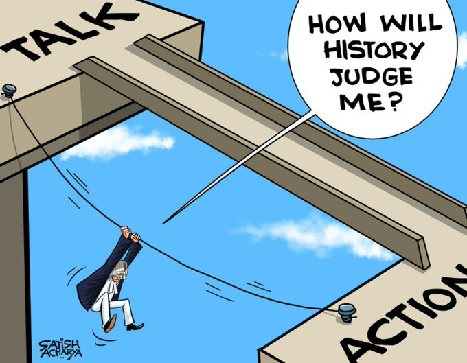
Court: Count Me In!
Indian tycoon Adani's US indictment rattles stocks, Kenya spikes deal
Indian billionaire Gautam Adani has been indicted for fraud by U.S. prosecutors and arrest warrants issued for him and his nephew for their alleged roles in a $265 million scheme to bribe Indian officials to secure power-supply deals.
What Happens When There Is No Government?
This is where we are headed with EVM and electoral manipulation.
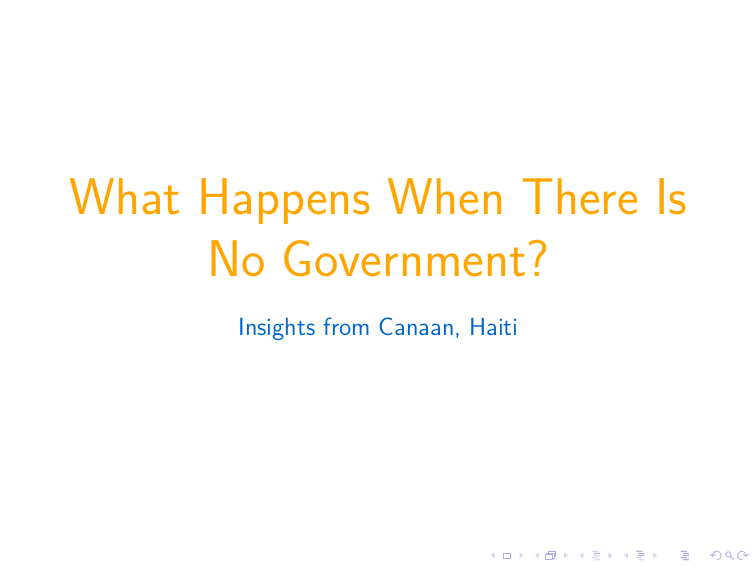
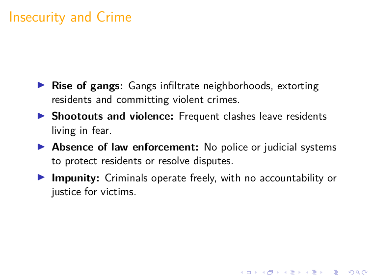
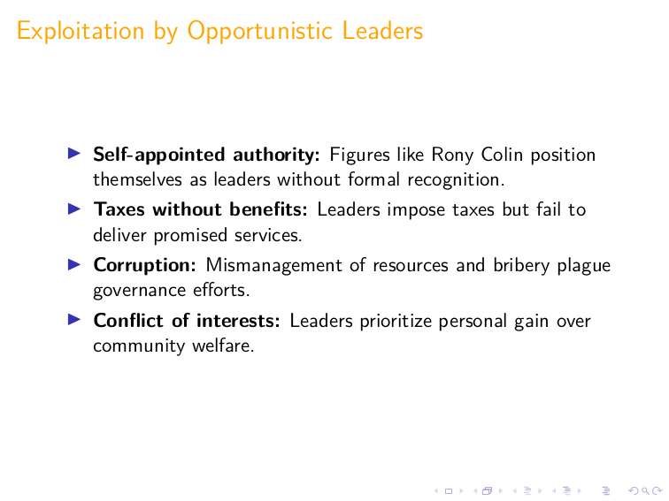
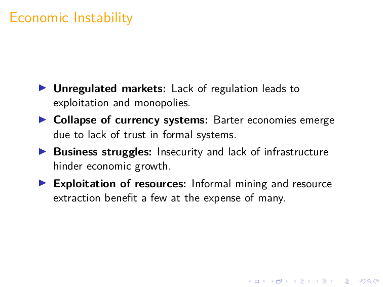
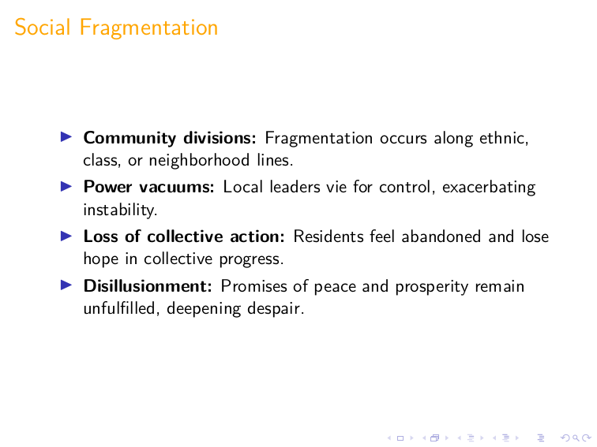
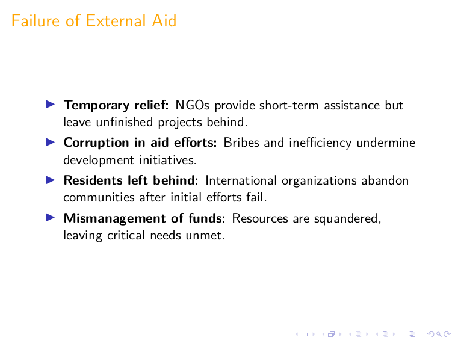
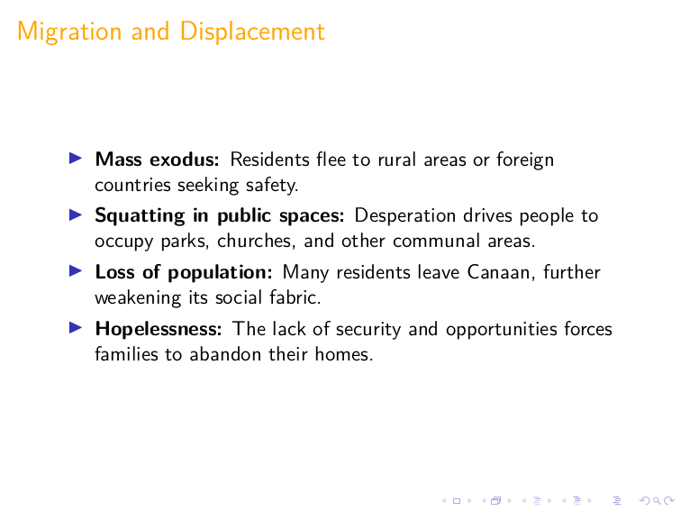
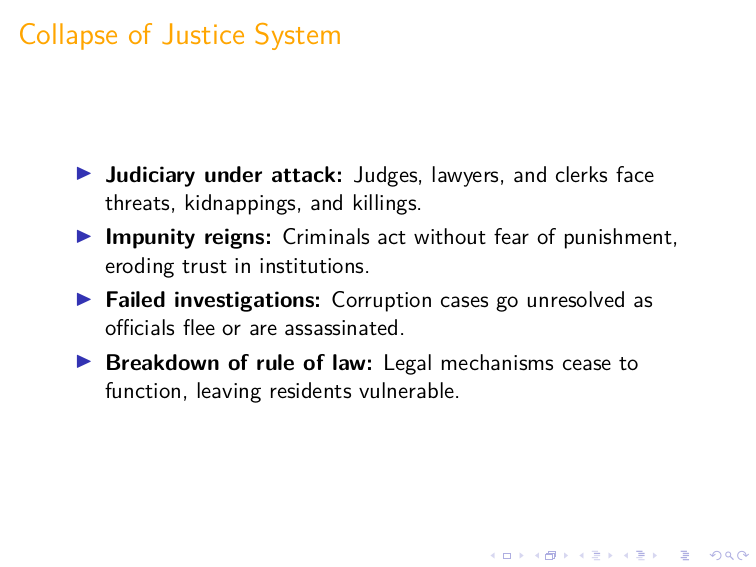
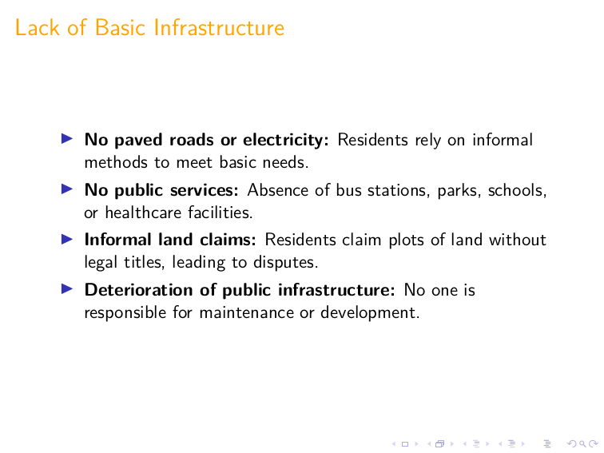
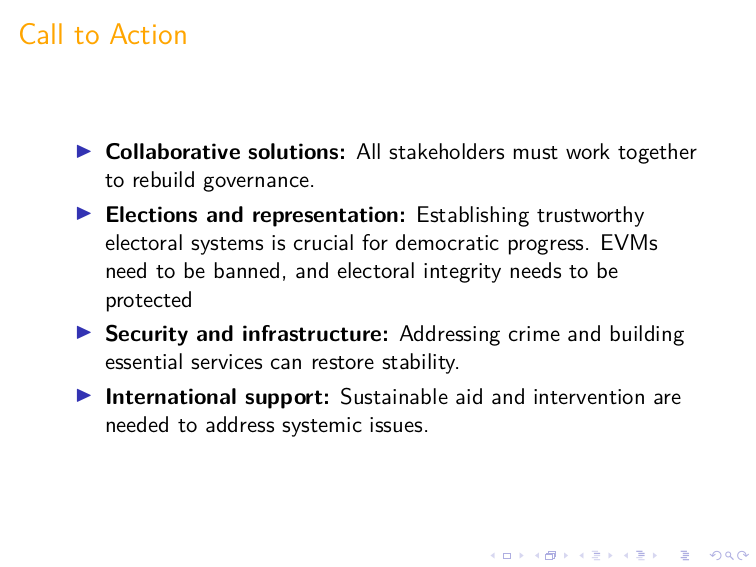
Advantages of Approval Voting
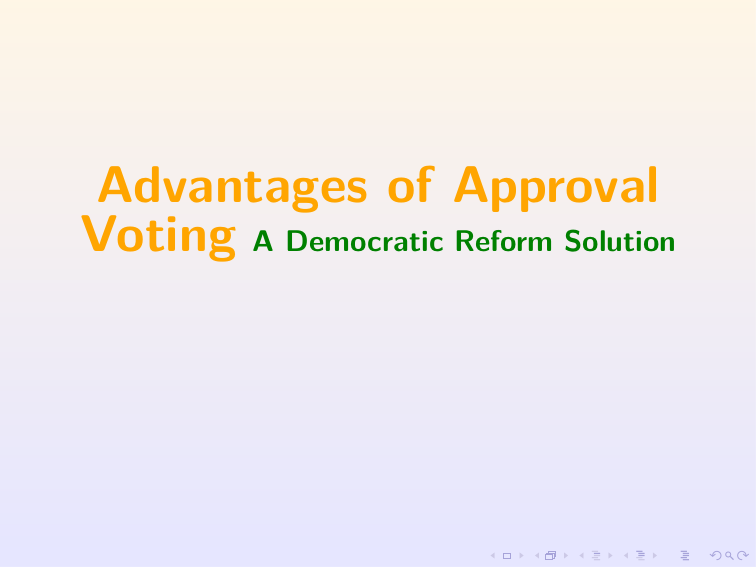
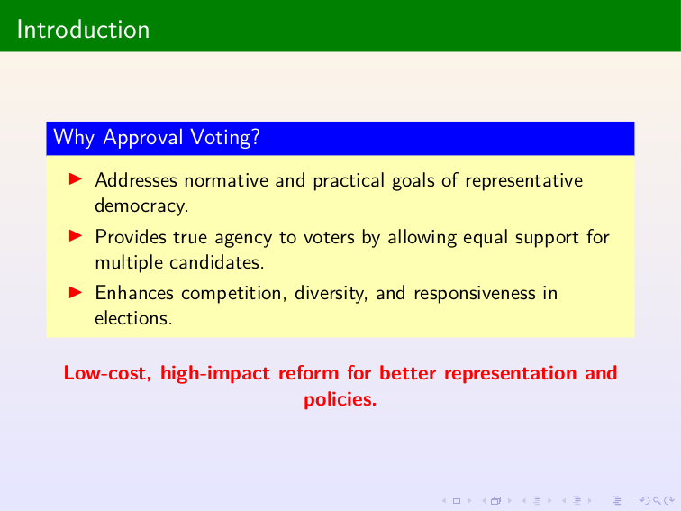
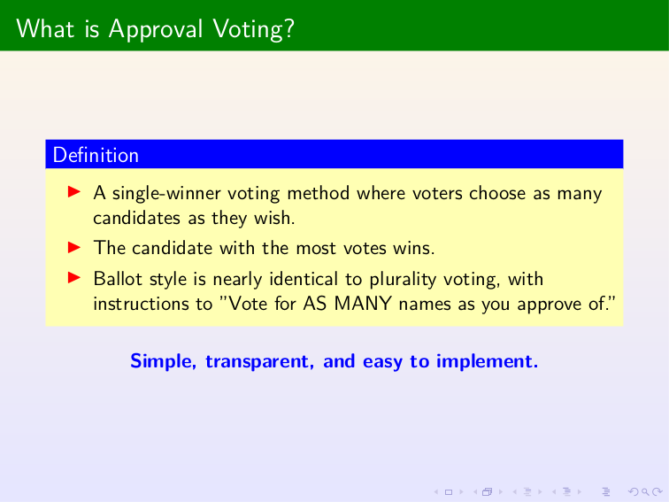
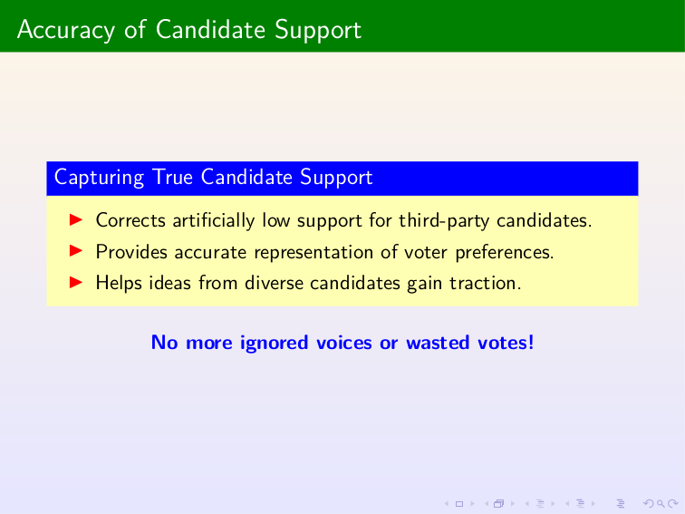
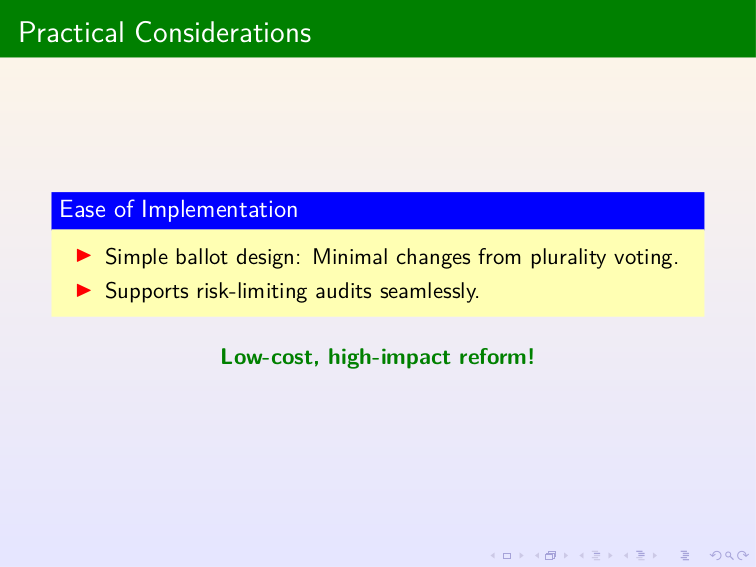
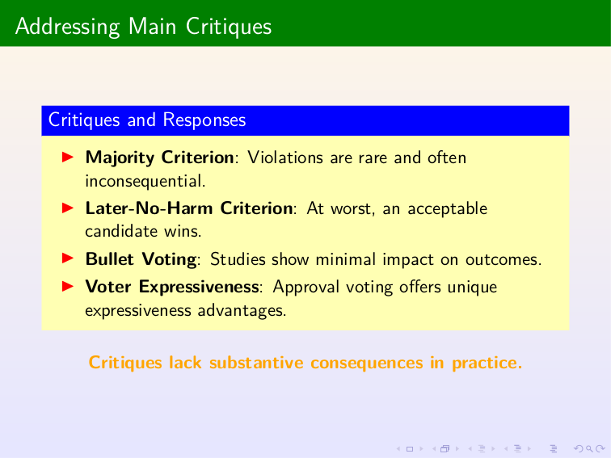
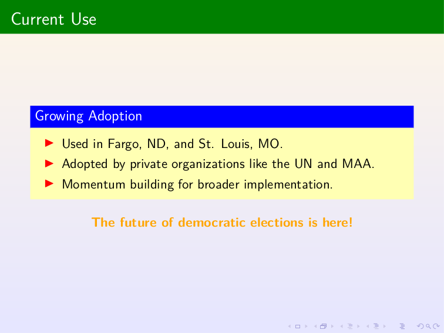
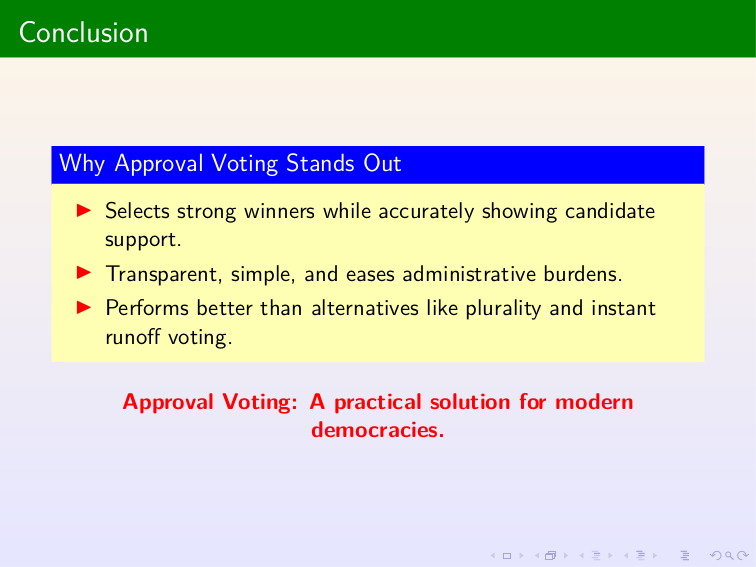
PM's Rajasthan Speech Fact Checked
Population Jihad Fact or Hype
Palki Sharma Three Arguments
Palki Sharma presents three arguments on development.
Financial Inclusion
According to her, paying through UPI is considered development. However, it's actually a dangerous move. It's about relinquishing control of your finances to the government, enabling them to seize your account anytime there's protest or dissent. Thousands of bank accounts have already been blocked by the government, including those of the Congress Party.
Cash is still very easy to use, but the government has undermined the cash system through measures such as demonetization, which has adversely affected the livelihoods of millions
Can poor and middle-class people bear the burden of maintaining a minimum balance?
Banks collected over Rs21,00 Cr for breaching minimum balance norm
{kind=link}
Internet or digital penetration
While during Congress's tenure, there were more than 12 service providers, under the new Modi government, the number has dwindled to two or three. None of them offer optimal service; Airtel is somewhat better, but Jio is worse. The government seems to prioritize corporate profits and foster monopolies. As for digital penetration, the credit should be attributed to cheaper mobiles from China rather than Modi's India.
Airport Traffic
Is airport traffic a good thing? In a country where 90% of the population belongs to the middle class, air travel is hardly accessible. Moreover, it's one of the biggest contributors to pollution, especially in the era of climate change. During summer, heat waves last for two months, with temperatures exceeding 40 degrees Celsius. What we truly need is investment in public transport, which is currently lacking. Instead, Modi's focus seems to be on building roads for a car-centric system, leading to pollution and traffic congestion that harm our ecosystem.
Fake journalist tries to control the stories, true journalist shows facts.
"When you set the NARRATIVE, and when you are in control of the STORY, you can project yourself as a GOOD BOY, inspite of all the WRONG you did, That's where the MEDIA comes in"
-Palki SHARMA
"This is how you debunk the false narrative, with NUMBERS & FACTS"
-Prashant Bhushan
Robin Hood economics Article fact check
Tavleen Singh's article argues against what she perceives as Rahul Gandhi's inclination towards taxing the rich and redistributing wealth, advocating instead for policies that encourage wealth creation. However, her arguments overlook the detrimental effects of monopolies on markets and society. Here's a critique of her points:
-
Misrepresentation of Wealth Creation: While entrepreneurship and innovation are indeed drivers of economic growth, she overlooks how monopolies distort this process. Monopolies hinder competition and innovation by restricting entry into the market, stifling potential wealth creation from smaller players.
-
Neglect of Monopoly Power: Singh fails to acknowledge the negative implications of monopoly power. Take for example pharmaceutical patents. By granting exclusive rights to produce and sell certain drugs, monopolies like GlaxoSmithKline can inflate prices significantly above production costs. This artificially high pricing limits access to essential medicines, leading to adverse health outcomes for those unable to afford them. Under the Congress government, we had about 12 internet service providers, but now we have just two or three.
The mystery of the Adani coal imports that quietly doubled in value
-
Ignoring Economic Inequality: Singh's focus on preserving wealth creation without addressing the widening wealth gap overlooks a critical aspect of economic prosperity. Monopolies exacerbate inequality by concentrating wealth and power in the hands of a few, rather than fostering broad-based economic growth that benefits society as a whole.
-
Monopolies provide taxes:Singh's argument that Adani and Ambani bring in more taxes is also incorrect. Decentralized systems without monopolies tend to collect more taxes than monopolies. Monopolies discourage entrepreneurship, and unchecked monopolistic practices also pose significant threats to economic freedom and prosperity.
-
Lack of Regulatory Consideration: Singh's argument against taxation and wealth redistribution overlooks the role of government regulation in curbing monopolistic behaviors. Effective regulation can promote competition, innovation, and equitable wealth distribution, thereby fostering a more dynamic and inclusive economy. Effective regulation also decreases negative externalities, especially in times of rampant pollution that impacts our health and leads to climate catastrophe.
Overall, while Singh advocates for policies that promote wealth creation, her arguments fail to address the detrimental effects of monopolies on market competition, economic inequality, and societal welfare. A more nuanced approach that acknowledges the need for both entrepreneurship and effective regulation is essential for fostering sustainable and inclusive economic growth.
Wealth creation requires better wealth distribution and a free market without monopolies, rather than handing over everything to a few companies. The current government is running on rampant loans rather than focusing on wealth creation. The Congress government (Or the past UPA coalition government) has been better at achieving this than the current government. An economist as a Prime Minister is far better than an uneducated Prime Minister.
Tavleen Singh Article
INDIANEXPRESS.COM APRIL 28, 2024
Fifth COLUMN
TAVLEEN SINGH Twitter @tavleen singh
Robin Hood economics
{kind=link}
JUST BEFORE sitting down to write this piece, I spotted Rahul Gandhi's latest campaign video on social media. The video began with a poster of Gautam Adani's face on which the word 'BAN' was written. After this Rahul appeared and declared in an angry voice that he promised to give farmers, workers, and the poor as much money as 'Modi has given Adani'. This is only one of many campaign videos in which the inheritor of the Nehru-Gandhi legacy speaks of how when a Congress government comes to power, it will take money from the rich and distribute it to the poor. It is time to remind the man who seeks to unseat Modi in this general election that it is not his personal wealth that he is threatening to hand out. It is taxpayers' money. It is not just the money of men like Adani and Ambani, but money given in taxes by all of us who pay taxes. What I find disturbing about Rahul's rants against rich Indians is his unconcealed contempt for those who create wealth. The private sector has survived and thrived despite socialist policies like the license raj, de- spite debilitating taxation. It deserves to be respected and not disdained. The wealth that is owned by men like Adani has not been 'given' to them by Modi or any other politician. It is wealth that they have created for the country, some of which is already being paid to the govern- ment in taxes. Why is this so hard for Rahul Gandhi to understand?
The Congress Party has repeatedly in- dicated that if it comes to power it has plans to introduce crippling new taxes on rich people. Sam Pitroda, famous for dam- aging the Congress Party's 'secularism' in the last general election, damaged its economic philosophy last week by announcing that it was time to bring back an inheritance tax. Congress spokesmen quickly distanced the party from Pitroda's statement, but redistribution of wealth Robin Hood style is something that Rahul Gandhi has talked about often since the campaign for this election began. It is time for him to be reminded of what India looked like when taxes on the rich were so insane in his Granny's time that businessmen were ordered to pay 97% of their earnings as tax. The result was that not only was the private sector nearly de- stroyed but government itself had no money to distribute to the poor. It was a general redistribution of poverty that re- sulted. India has taken decades to recover and to prosper enough for a middle class to emerge and for a hesitant celebration of prosperity to begin. In the past ten years it is to Modi's credit that he has continued with economic policies that encourage the creation of wealth. In the opinion of those who would like to see the Indian economy really soar, he has not done enough to end socialism. He needs to do much more to totally rid us of an economic ideology that kept India mired in poverty.
Robin Hood Rahul also announced last week that he was so committed to order- ing a caste census that he has made it his life's mission. There can be compromises in politics, he said, but no compromises when you make something your life': mission. He has clarified more than once that the purpose of this census is to en able the redistribution of wealth. So castes that fall into the poorest categor will be the first to benefit. This is revers casteism at a time when the divisions caste in urban India have blurred. In vilages higher caste bigots may choose n to eat at the same table as those they com sider lower than them, but this is not po sible in a city restaurant.
Monopoly educational video
Monopoly. It's not just a game. In this video we'll talk about how a firm uses market power to maximize profit. We'll begin with a controversial example.
This is the AIDS virus. Worldwide, it has killed more than 36 million people. In the United States, however, AIDS is no longer the death sentence that it once was. Beginning in the mid-1990s, death rates from AIDS began to fall dramatically with the introduction of new drugs such as Combivir. These new drugs are great, but they're expensive, and they're expensive not because it costs a lot to manufacture these drugs. The per-pill costs of production are actually quite low. Instead, these drugs are expensive because they're the subject matter of this chapter -- Monopoly.
GlaxoSmithKline, or GSK, owns the patent on Combivir and that means that it has the right to exclude competitors. Only GSK can legally sell Combivir. The patent gives GSK a monopoly, or more generally we say it gives them market power. Market power is the power to raise price above marginal cost without fear that other firms will enter the market. Now how do we know the price is above marginal cost? Here's a simple test -- in the United States, Combivir costs around $12 to $13 per pill. India, however, does not recognize the patent on Combivir. So in India, there are many producers of Combivir who sell in a competitive market. As we know, in a competitive market, price will fall to marginal cost and in India the price of Combivir is about 50 cents per pill. Thus, in the United States, the price of Combivir is about 25 times higher than the marginal cost.
Let's say a few words about the sources of market power. The basic idea is that a firm has market power when it's selling a unique good and there are barriers to entry, forces which prevent competitors from entering the market. Barriers to entry could include patents, as we've already discussed. There may also be other government regulations creating barriers to entry, such as exclusive licenses. Economies of scale can mean that a single big firm can sell at lower cost than any of many small firms, making it difficult to establish a competitive market even with free entry. Exclusive access to an important input.
Diamonds, for example, are found in only a few places in the world. If you control a number of these diamond mines, you can monopolize the market for diamonds, where you will have market power in the market for diamonds. Technological innovations can give a firm temporary market power. A firm with knowledge or abilities that other firms don't yet have will have some market power, for example. Now we'll say a little bit more about these later. What we want to do now is to focus on how a firm with market power chooses to set its price. What is the profit maximizing price?
The Danger of Oversimplified Questions in Politics
Superb speech by IAS Officer Kannan Gopinathan! 👏 This is exactly how great leaders should stand their ground and tackle politicians with clarity and courage. 💪 #Leadership #Integrity #KannanGopinathan
The power of a simple "yes" or "no" often overshadows the complexity of critical decisions. Politicians skillfully frame questions to elicit blanket approval or rejection, glossing over nuanced details and potential consequences. For citizens, this can mean unknowingly endorsing policies or actions with far-reaching implications. When voters say "yes" without grasping the subtleties, they inadvertently empower decisions that might conflict with their best interests.
Print Media vs Mainstream TV Media: Which one provides more authentic news that matters to the people?
Print Media: Funding and Authenticity
Print media in India, such as newspapers and magazines, rely primarily on reader subscriptions for funding. This means that the news provided by print media is mostly funded by users rather than corporations or advertisers. As a result, print media tends to focus on delivering authentic news that matters to the people, as they are directly accountable to their readers.
In recent years, print media has played a significant role in reporting news that mainstream TV media has largely ignored. For example, print media provided detailed news coverage of the electoral bonds scam, which involved the alleged misuse of funds by political parties. Similarly, print media reported extensively on the "BJP washing machine" scandal, highlighting how 25 opposition leaders facing corruption charges crossed over to the BJP, with 23 of them getting a reprieve.
Do check out which print media is delivering biased news, along with its owner, funding, and advertisements. You can quickly unsubscribe from biased print media and shift to another.
Mainstream TV Media: Funding and Influence
Mainstream TV media in India, on the other hand, is funded mostly by advertisers and corporations. This has raised concerns about the influence of these entities on the news reporting process. Many argue that mainstream TV media tends to prioritize sensationalism and entertainment over providing in-depth, authentic news coverage.
Moreover, mainstream TV media comes with minimal TV package options, and users cannot unsubscribe news channels to save a substantial amount of money. This has led to a situation where people are forced to consume news from TV channels that may not provide authentic and unbiased information.
How can we tackle mainstream media?
The Supreme Court stated, "Don't watch if you don't like: Supreme Court on pleas to regulate TV news channels." However, the government is forcing us to pay for these channels through the minimum TV package. To address this issue, TV news channels should be excluded from the minimum package, allowing users to choose which channels they pay for. Why should we pay for propaganda channels? A similar Public Interest Litigation (PIL) should be submitted before the court to advocate for this change.
Conclusion
While a statistical analysis of news coverage in both print and TV media would provide more concrete evidence, the anecdotal evidence presented in this article suggests that print media may indeed be a better source for authentic news in India. As citizens, it is essential to support and encourage the growth of independent, authentic news sources to ensure a well-informed and engaged society.
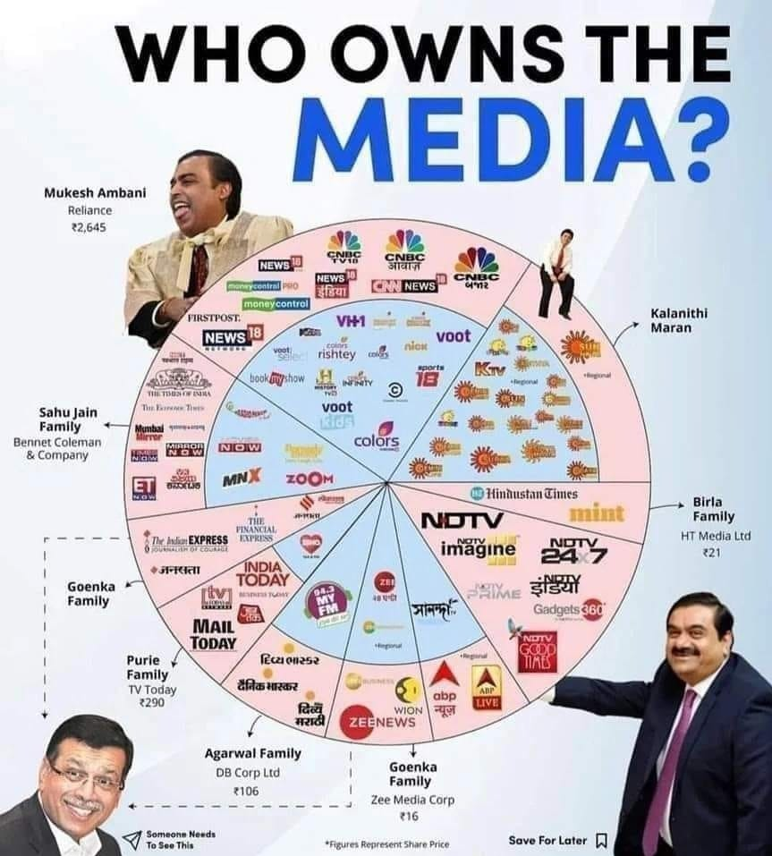
How to Identify Biased Media and Make Informed Choices
In an era where information inundates us from all directions, discerning truth from bias has become a crucial skill. Print media, with its longstanding tradition of journalism, remains a significant source of news for many. However, not all publications adhere to unbiased reporting. Recognizing biased print media, understanding its ownership, funding sources, and advertisements can empower readers to make informed choices about where they get their news.
Identifying Bias
Recognizing biased reporting requires a critical eye and an understanding of journalistic standards. Biased reporting often manifests in several ways:
-
Selective Reporting: Biased media may cherry-pick facts or only present one side of a story while ignoring alternative perspectives.
-
Loaded Language: Pay attention to the language used in headlines and articles. Biased publications often employ emotionally charged language to sway readers' opinions.
-
Omission of Context: Context is crucial in understanding news stories. Biased media may omit relevant information that contradicts their narrative.
-
Opinion Disguised as Fact: Be wary of opinion pieces masquerading as news. While opinion pieces have their place, they should be clearly labeled as such.
Investigating Ownership and Funding
Understanding the ownership and funding behind a publication can provide valuable insights into potential biases. Here's what to look for:
-
Owner Background: Research the individuals or entities that own the publication. Are they affiliated with any political parties, advocacy groups, or corporations that could influence editorial decisions?
-
Corporate Ownership: Many media outlets are part of larger conglomerates with diverse business interests. Consider how these interests might influence the publication's reporting.
-
Funding Sources: Examine where the publication's revenue comes from. Are they heavily reliant on advertising from specific industries or interest groups? Such dependencies can influence editorial content.
Analyzing Advertisements
Advertisements can offer clues about a publication's target audience and potential biases:
-
Advertiser Profiles: Take note of the types of products or services advertised in the publication. Are there recurring themes or industries represented? This can shed light on the publication's target demographic and potential biases.
-
Sponsored Content: Be cautious of sponsored articles that may blur the lines between editorial content and advertising. While labeled as advertisements, they can still influence readers' perceptions.
Making Informed Choices
Armed with this knowledge, readers can make informed decisions about which print media to support:
-
Diversify Your Sources: Consume news from a variety of sources with differing perspectives. This helps mitigate the risk of echo chambers and provides a more comprehensive understanding of complex issues.
-
Fact-Check: Verify information from multiple reputable sources before accepting it as truth. Fact-checking organizations can help separate fact from fiction.
-
Be Skeptical: Approach news consumption with a healthy dose of skepticism. Question narratives presented by media outlets and seek out evidence to support claims.
-
Hold Media Accountable: Provide feedback to publications when you identify biased reporting or misinformation. Holding media accountable encourages journalistic integrity and transparency.
By staying vigilant and critical of the media we consume, we can navigate the landscape of print media more effectively and ensure that our sources of news are reliable and trustworthy.
Money is Not the Key to Winning an Election: The Importance of Authentic Communication, Community Engagement, and Vision
Introduction
The narrative that money is the defining factor in winning an election is deeply ingrained in our society. In a country where 88% of MPs are crorepatis, it's hard to imagine politics without money. However, this belief often overlooks the critical role of authentic communication, community engagement, and vision in connecting with voters and winning their support. As independent candidates or political newcomers, it's crucial to understand how these factors can help you overcome the challenges of vote buying and the first-past-the-post (FPTP) system.
The Myth of Money in Elections
While it's true that money plays a role in elections, it is not the sole determining factor. In fact, numerous examples of candidates with limited financial resources but strong grassroots support and compelling messages have proven that money is not a necessary factor to win an election.
Money for Bribing Voters
In a constituency with 7 to 14 lakh voters, it's not even practical for a crorepati to bribe everyone. If they pay ₹500 per voter, it would cost about ₹70 crore. Moreover, most voters are not morally corrupt and will not vote for a candidate just for money. Additionally, voting is a secret affair; you might take a bribe from someone but still vote for another candidate if they have convinced you enough.
Money for Marketing
Crorepatis invest heavily in marketing to build their narrative, for example, the sold-out corporate mainstream media campaigns promoting the central government 24/7. However, candidates does not need to spend crores on marketing. Loudspeakers and social media are the cheapest forms of communication to reach a large number of people, provided you are communicating authentically with techniques like deep canvassing and being more creative with your campaign. It's not the money, but the time you are willing to give, that is important.
The Power of Authentic Communication
Authentic communication is the cornerstone of any successful political campaign. It involves being genuine, transparent, and relatable to voters. By establishing trust and demonstrating a deep understanding of the issues that matter most to the community, candidates can connect with voters on a personal level. This connection is often more powerful than any amount of money spent on advertising or campaign materials.
Community Engagement and Networking
Engaging with the community is another critical aspect of a winning election campaign. This involves attending local events, volunteering, and building relationships with local organizations, businesses, and residents. By actively participating in the community, candidates can demonstrate their commitment to the area and establish a strong network of supporters who can help spread their message.
Vision and a Practical Manifesto to Deliver
A compelling vision for the future is another essential element of a successful election campaign. This vision should outline the candidate's goals and priorities for the community, demonstrating their understanding of the issues at hand and their commitment to finding practical solutions. A well-crafted manifesto can help candidates differentiate themselves from their opponents and provide voters with a clear understanding of what they can expect if the candidate is elected.
To create a practical manifesto, candidates should conduct thorough research on the issues facing their community and consult with local experts and stakeholders to develop feasible solutions. By presenting a realistic plan of action, candidates can demonstrate their competence and commitment to making a positive impact on the lives of their constituents.
Moreover, it's crucial for candidates to communicate their vision and manifesto effectively. This can be achieved through various channels, such as public forums, social media, and one-on-one conversations with voters. By consistently sharing their vision and manifesto, candidates can reinforce their message and inspire voters to support their campaign.
In summary, a compelling vision and a practical manifesto to deliver are essential components of a successful election campaign. By focusing on these factors, candidates can demonstrate their commitment to the community, differentiate themselves from their opponents, and inspire voters to support their campaign.
Starting Small: Building a Political Career Through Incremental Improvements
Instead of aiming straight for high-stakes elections such as those for Members of Parliament (MP), consider beginning your journey at the grassroots level. Running for local positions such as sarpanch or municipality councilor can provide invaluable experience and insights into the electoral process. These initial roles allow you to understand the dynamics of your community, develop a rapport with voters, and address local issues directly. By tackling these smaller-scale elections first, you build a solid foundation and gain the necessary skills to manage larger campaigns in the future.
Moreover, beginning with local elections helps you create a track record of public service and achievements. As a sarpanch or municipality councilor, you have the opportunity to implement projects and initiatives that directly impact your community, showcasing your capability to bring about positive change. These accomplishments become part of your political resume, which can be leveraged when you decide to run for higher offices such as Member of the Legislative Assembly (MLA) or MP. Each step up the political ladder allows you to expand your network, increase your visibility, and refine your strategies based on practical experience.
Understanding the FPTP System and Vote Splitting
To maximize their chances of winning, independent candidates must also understand the first-past-the-post (FPTP) system and the potential impact of vote splitting. In FPTP, the candidate with the most votes wins, even if they do not secure a majority. This can lead to vote splitting, where multiple candidates from the same party or ideology divide the vote, allowing a less popular candidate to win.
To overcome this challenge, independent candidates should focus on building a diverse coalition of supporters, reaching out to voters who may not typically vote for their party or ideology. By appealing to a wider range of voters, candidates can increase their chances of securing the most votes and winning the election.
DAO to Run Your Political Organizations
Though it may be technically challenging to build, it is now possible to create a Decentralized Autonomous Organization (DAO) that manages and distributes funds based on the work done for the party through smart contracts. DAOs leverage blockchain technology to automate and democratize decision-making processes, ensuring transparency and accountability in the allocation of resources. This innovative approach can significantly disrupt the traditional political landscape by reducing the dependency on centralized authority and allowing for more equitable distribution of resources based on merit and contribution.
With a DAO, financial transactions and reward distributions are executed automatically through smart contracts, which are self-executing contracts with the terms directly written into code. This ensures that party members and volunteers are compensated fairly and transparently for their efforts, fostering a sense of trust and collaboration within the organization. By eliminating the need for intermediaries and reducing the potential for corruption, a DAO can enhance the efficiency and integrity of political operations.
Moreover, a DAO can help create a community-controlled organization that is truly aligned with the community's goals. Traditional political organizations often struggle with maintaining alignment between the leadership's actions and the community's needs and desires. However, with a DAO, decision-making power is distributed among the community members, allowing for more direct and democratic involvement in shaping the organization's direction and policies. This can lead to a more engaged and motivated supporter base, as individuals feel a greater sense of ownership and influence over the organization's activities.
Conclusion
In conclusion, while money can certainly help a candidate's chances of winning an election, it is not the sole determining factor. Authentic communication, community engagement, and a compelling vision for the future can help independent candidates overcome the challenges of vote buying and the FPTP system. By focusing on these factors, candidates can build a strong foundation of support and increase their chances of winning the election.
Justice Katju on Indian economics, politics and media
Can we attribute India's struggles solely to foreign influence?
Renowned Justice Katju certainly believes so, directing blame towards external forces for the country's enduring poverty and challenges. While it may be tempting to seek simplistic explanations for complex issues, the reality is often more nuanced.
It is true that foreign companies, particularly large tech corporations, wield significant power over developing nations like India through their control of patents, intellectual property rights, and closed-source technology. Giants like Google, Microsoft, Meta, Amazon, and OpenAI dominate the digital landscape, influencing everything from economic decisions to the information we consume. Their influence extends to shaping our beliefs and values, often without us even realizing it. This concentration of power is indeed concerning and warrants scrutiny. Big tech companies facilitate the transfer of wealth from the general populace to a selected few, exacerbating the already severe income inequality.
Justice Katju's argument about polarization as a tool used by foreigners to destabilize developing countries also holds some merit. India, for instance, has become a hotbed of disinformation, with political parties, especially those in power, leveraging IT cells to disseminate misleading information through channels like WhatsApp, Twitter, Facebook, Instagram, and YouTube. Governments often initiate disinformation campaigns, but it is the big tech companies that serve as their enablers and amplifiers. Through inadequate content moderation, the monetization of disinformation, and prioritizing engagement above all else, these tech giants allow misinformation to spread unchecked, akin to a wildfire raging out of control. However, it is essential to recognize that the responsibility for these actions lies primarily with our own government, judiciary and citizens. We must acknowledge that governments and citizens worldwide are equally susceptible to the manipulative tactics of big tech companies. The struggle to curb their excessive power is a global one, and foreign citizens are just as much at the mercy of these corporations as we are.
It is also worth noting that open-source technology, which offers an alternative to the dominance of big tech, has been championed by foreigners as well. While their efforts have not yet led to widespread success, it demonstrates that not all foreign influence is detrimental. Additionally, foreign journalists have played a crucial role in safeguarding our democracy when our mainstream media has often fallen short due to corporate influences.
In conclusion, while foreign influence may contribute to India's challenges, it is not the sole cause. The complex interplay of global powers, corporate interests, and domestic factors all shape the country's trajectory. Blaming foreigners alone oversimplifies the issue and distracts from the need for collective action to address the root causes of India's struggles.
Are coalition governments inherently unstable?
Any government that achieves an absolute majority from a single party is likely to turn authoritarian. This is how power dynamics operate, with excessive centralization of power. In contrast, coalition governments and federal systems are seen as essential for maintaining a balanced, inclusive, and democratic society, particularly in diverse societies.
Instability of coalition govt depends on the voting methodology and the rules governing the appointment of ministers and bureaucrats. Instability is not an inherent property of coalition governments.
Why Don't Educated Indians Enter Politics?
In India, a peculiar trend persists: highly educated individuals often shun politics. Instead, parents overwhelmingly push their children towards becoming IAS officers. But why?
The Allure of Entrance Exams
Becoming an IAS officer involves passing one of the most grueling entrance exams in the country. This exam, with its bullshit rote learning and formulaic testing, offers immense satisfaction to those who clear it, knowing they have succeeded where 99.9% have failed. The competitive nature of the exam, with only 0.1% of candidates passing, offers a sense of accomplishment that is unmatched by the relatively straightforward process of entering politics. In elections for Members of the Legislative Assembly (MLAs) or Members of Parliament (MPs), there are typically only 5–8 candidates on the ballot, which lacks the intense competition seen in the IAS exam. Who will compete with a handful of candidates on the ballot? We will compete in terms of millions. In politics, the satisfaction of winning against millions isn't present, reducing the allure. Moreover, while the flaws of the First-Past-The-Post (FPTP) voting system are well-known by experts, few seem to focus on improving it.
Job Security
Indians have a deep-seated obsession with job security, favoring government jobs that promise permanence. The IAS offers such security; once you pass the entrance exam, your future is secure. However, the path to becoming an IAS officer involves taking a much bigger risk than entering politics, with a daunting 99.9% failure rate. Despite these odds, many prefer this route, driven by the belief that once the entrance is cracked, life is set. In stark contrast, political positions are inherently risky, with terms lasting only a few years. Even though the salary of MPs, MLAs, or Sarpanchs is less than that of IAS officers, being a politician allows one to make significant contributions that can last for ages. Ironically, politicians have the power to set their own salaries through consensus of people, yet this doesn’t seem to attract educated individuals.
The Bandwagon Effect
The bandwagon effect, where people follow trends simply because others are doing so, plays a significant role. If everyone is striving to become an IAS officer, individuals feel compelled to join the rat race, avoiding the less-trodden path of politics.
Prestige
The IAS is viewed as a prestigious position, largely due to the bandwagon effect. On the other hand, politics comes with daily criticism and scrutiny. Despite the fact that IAS officers are often controlled by politicians who can transfer them at will if they don't listen to them and can't survive without corruption.
Bread and Circuses: The Distracted Youth of India
Bread and Circus in the Digital Age: A Modern-Day Distraction from Reality
The recent victory parade for India's T20 World Cup win saw over 300,000 Indian youth in attendance, celebrating the triumph of their cricket team. However, this enthusiasm and unity are often lacking when it comes to addressing the country's pressing issues. The term "bread and circuses" comes to mind, as the Indian youth seem more interested in entertainment and distractions than engaging with the problems that affect their future.
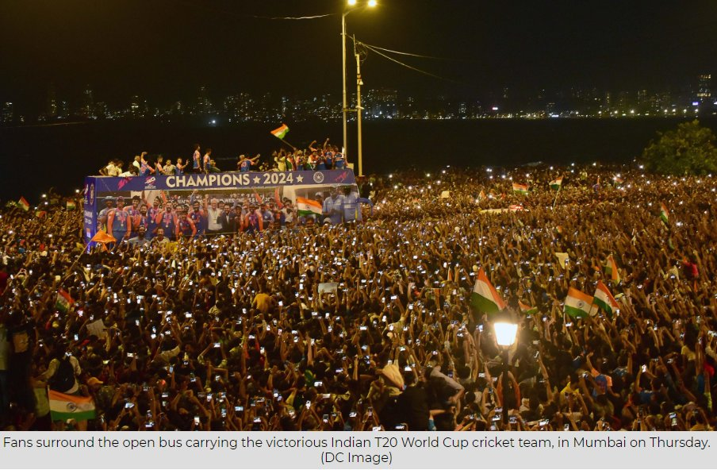
Draconian Amendments to Criminal Laws
One concerning development is the lack of protest against the recent amendments to India's criminal laws. These changes have the potential to turn India into a police state, with far-reaching implications for its citizens.
Extended Police Custody
The new criminal law allows the police to seek direct custody of an accused for up to 60 days, a significant increase from the previous limit of 15 days. This change makes it even more difficult for accused individuals to obtain bail, as courts are typically reluctant to grant bail during police custody. With India's overcrowded jails already housing 75% under-trials, the "bail, not jail" principle emphasized by the Supreme Court is under threat.
Sedition and Free Speech
While the word "sedition" has been absent from the new criminal law, experts argue that a more draconian version has been introduced through the back door. The criminalization of vague actions, such as "endangering sovereignty or unity and integrity of India," carries harsh punishments of up to life imprisonment. This raises concerns about free speech and the potential misuse of power by authorities.
Three important cases pending on supreme court
Contitutional Validity of PMLA
Firstly, the constitutional validity of the PMLA is being challenged in the Supreme Court. The law has been criticized for being excessively harsh and disproportionate in its application, with many opposition politicians being targeted under it. The Supreme Court must examine the law's provisions and decide if they are constitutional or not. This case is of utmost importance, as the misuse of the PMLA and the Enforcement Directorate (ED) has been a contentious issue in Indian politics.
What is a Money Bill?
Secondly, the status of the Money Bill is pending before the Supreme Court. The government has been accused of using the Money Bill route to pass unconstitutional laws without the scrutiny of the Rajya Sabha. The apex court must clarify the definition of a Money Bill and ensure that it is not misused by the government. This case is crucial for the balance of power between the executive and legislative branches of the government.
Ritu Chhabria Case
In the Ritu Chhabria case, as per the law, an accused person is entitled to default bail if the charge sheet filed by the state is incomplete and requires further investigation under the Code of Criminal Procedure (CrPC). The time period for an investigative agency to complete an investigation and file a charge sheet ranges from 60 to 90 days, depending on the type of crime. If the agency fails to complete the investigation within the stipulated time, the accused is entitled to default bail or automatic bail.
However, this is not happening. In order to defeat the right to default bail, investigative agencies these days file charge sheets despite not completing the investigation. This is done solely to keep the accused incarcerated for a longer period. As a result, the accused remains incarcerated for a long time, which is a clear violation of their rights and the principles of justice and fairness.
NTA exam scam
The lack of public outrage and mass gatherings, similar to the victory parade celebrations, in response to the NTA scam is concerning. The government's decision to proceed with the counseling process, despite the ongoing controversy, further highlights the disconnect between the authorities and the students' plight.
Millions of students at risk: India’s elite exams hit by corruption ‘scam’
Apathy Towards Protesting Athletes
The Indian youth's enthusiasm for cricket and its players is undeniable, but where is this support when other athletes stand up for important causes? In May 2023, Olympic medal winner Vinesh Phogat and fellow wrestlers protested against the IOA's top official, Brij Bhushan Sharan Singh, who was accused of sexual harassment and abuse. Despite the presence of celebrated Olympic medallists, the protest was largely ignored by the cricket fraternity, with hardly any cricketers voicing their support. The absence of mass gatherings and a public outcry, similar to the victory parade for T20 Cup that attracted hundreds of thousands, highlights a selective interest in issues that demand attention and action.
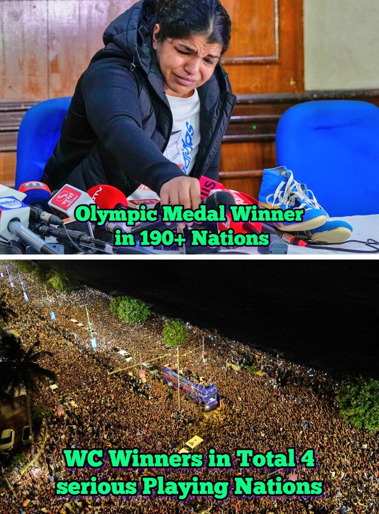
Silence on EVM Manipulation
The manipulation of Electronic Voting Machines (EVMs) in India has become increasingly apparent, with widespread mismatches between EVM votes during polling and counting. This raises serious concerns about the integrity of the voting process and democracy itself. However, there has been little to no outcry or gathering of the youth to demand transparency and accountability.
Ignoring the Manipur Crisis
The ongoing violence in Manipur has resulted in 175 deaths and over 1,100 injuries in just four months, according to police reports. Disturbing incidents, such as the assault and stripping of two women by a mob, have been brought to light. Yet, there is a notable absence of youth gatherings or protests demanding justice and an end to the violence.
The Spectator Sport Conundrum
Cricket's dominance as a spectator sport in India raises questions about the lack of participation in other sports. The lack of sufficient playgrounds and funding for sports infrastructure means that the majority of Indians are relegated to the role of spectators rather than active participants. Should cricket be considered a true sport in India when the majority of people only watch and do not actively participate?
Conclusion
The Indian youth's obsession with cricket and lack of engagement in societal issues is concerning. While distractions like sports and entertainment are important, they should not come at the cost of apathy towards pressing matters. It is crucial for the youth to recognize their power and use it to address the challenges facing their country. True progress and change require an informed and active citizenry that goes beyond the "bread and circuses" mentality.
Nurture vs. Nature: The Complex Interaction of Genes and Environment
Feedback Loop for understanding free will
The age-old debate of nature versus nurture refers to the degree to which innate genetic factors (nature) and external environmental factors (nurture) influence our characteristics and behavior. This long-standing controversy has intrigued philosophers, scientists, and psychologists for centuries, sparking ongoing discussions and research in the field of biology and neuroscience. While it is clear that both factors play a role, unraveling their intricate interplay and relative contributions remains a complex task. In this article, we will delve into the latest insights from biology and neuroscience, exploring the fascinating ways in which nature and nurture constantly interact and shape who we are.
The Classic Debate: Nature vs. Nurture
The nature versus nurture debate revolves around the question of innate traits versus learned behaviors. The "nature" side of the argument posits that our genetic makeup, inherited from our parents, largely determines our characteristics, behaviors, and personality traits. Proponents of this view believe that genes provide the blueprint for who we are and that much of our development is predetermined by our DNA. On the other hand, the "nurture" perspective emphasizes the influence of environmental factors such as upbringing, experiences, learning, and cultural influences on our development. Supporters of this view argue that our traits and behaviors are largely shaped by our interactions with the world around us.
Genetic Foundations: The Role of DNA
In the realm of biology and neuroscience, significant advancements have been made in understanding the role of genetics in the nature versus nurture debate. It is now well-established that genes play a fundamental role in shaping our physical attributes, susceptibility to certain diseases, and even aspects of our behavior. For instance, genetic variations can influence traits such as eye color, height, and predisposition to specific health conditions.
Neuroscientific research has also identified links between certain genes and brain development, suggesting that genetics can impact cognitive abilities, mental health, and neurological disorders. For example, studies have found associations between specific genetic variations and conditions like Alzheimer's disease and dyslexia. This indicates that our genetic makeup can indeed influence our brain function and behavior.
However, it is important to note that genes are not the sole arbiters of our destiny. The concept of epigenetics has emerged as a crucial bridge between nature and nurture, illustrating how environmental factors can actually modify gene expression without changing the underlying DNA sequence. Epigenetic mechanisms involve processes such as DNA methylation and histone modification, which can turn genes "on" or "off," thereby influencing how cells read the genetic code. This means that experiences, lifestyle, and environmental conditions can all leave epigenetic marks on our genes, affecting their activity and ultimately influencing our traits and behaviors.
Environmental Influence: Shaping Development
While genetics sets the foundation, environmental factors play a pivotal role in shaping our development. The field of neuroscience has particularly highlighted the impact of early experiences on brain plasticity and the formation of neural connections. For instance, enriching environments that provide stimulation and opportunities for learning have been shown to enhance cognitive development, whereas adverse experiences such as trauma or neglect can have detrimental effects on brain architecture and function.
The concept of neuroplasticity, or the brain's ability to reorganize and form new neural connections, is central to understanding the impact of nurture. Neuroplasticity allows the brain to adapt and change in response to experiences, learning, and environmental stimuli. This dynamic process underlies our ability to acquire new skills, form memories, and adapt to changing circumstances. It also highlights the potential for environmental interventions to shape brain development and behavior.
Furthermore, social and cultural factors also play a significant role in shaping our behavior and personality. Our social interactions, cultural norms, and learned behaviors from our surroundings contribute to our development. For instance, language acquisition is heavily influenced by our environment, as we learn to communicate through exposure to language during early development. Cultural practices and beliefs also shape our values, behaviors, and perceptions of the world.
The Interplay: Gene-Environment Interactions
The relationship between nature and nurture is not a simple dichotomy; instead, it is a complex interplay of genetic and environmental factors. Gene-environment interactions refer to the ways in which our genetic makeup can influence our response to environmental stimuli, and vice versa. For example, certain genetic variations may increase susceptibility to a particular disease, but the presence of specific environmental triggers or risk factors is often necessary for the disease to manifest.
Additionally, the environment can also moderate the expression of genetic traits. For instance, while an individual may have a genetic predisposition towards a particular behavior, the manifestation of that behavior may depend on environmental influences. Similarly, environmental factors can impact the penetrance of a genetic trait, which refers to the likelihood that a particular genotype will result in the corresponding phenotype.
Conclusion: Embracing the Complexity
In conclusion, the nature versus nurture debate is far from resolved, and it is increasingly clear that a simplistic either-or approach does not suffice. Instead, biology and neuroscience have revealed a dynamic and intricate interplay between our genetic makeup and environmental influences. Our genes provide a foundation, but it is the ongoing interaction with our environment that shapes and refines our traits and behaviors. As such, a holistic understanding of human development requires consideration of both nature and nurture, recognizing the complex ways in which they intertwine and influence one another. Future research in these fields will undoubtedly continue to unravel the fascinating complexities of this age-old debate.
Criminals are not born out but made
Nurture vs. Nature: The Complex Interaction of Genes and Environment
Criminals are not born but made. The court has made an important judgment affirming that a speedy trial is a fundamental right.
If the prosecuting agency can't ensure a speedy trial, they shouldn't oppose bail citing the seriousness of the offense: Supreme Court.
"Innocent until proven guilty" cannot be ruled out, no matter how stringent the penal law may be.
But will this be applicable to all citizens? Does the court follow the rule of law? With crores of cases pending, many don't even get a hearing. It is difficult to get a hearing, with dates getting delayed repeatedly.
For example, in seven years, 10,552 Indians have been arrested under UAPA– but only 253 have been convicted.


Three important cases pending on supreme court
Contitutional Validity of PMLA
Firstly, the constitutional validity of the PMLA is being challenged in the Supreme Court. The law has been criticized for being excessively harsh and disproportionate in its application, with many opposition politicians being targeted under it. The Supreme Court must examine the law's provisions and decide if they are constitutional or not. This case is of utmost importance, as the misuse of the PMLA and the Enforcement Directorate (ED) has been a contentious issue in Indian politics.
What is a Money Bill?
Secondly, the status of the Money Bill is pending before the Supreme Court. The government has been accused of using the Money Bill route to pass unconstitutional laws without the scrutiny of the Rajya Sabha. The apex court must clarify the definition of a Money Bill and ensure that it is not misused by the government. This case is crucial for the balance of power between the executive and legislative branches of the government.
Ritu Chhabria Case
In the Ritu Chhabria case, as per the law, an accused person is entitled to default bail if the charge sheet filed by the state is incomplete and requires further investigation under the Code of Criminal Procedure (CrPC). The time period for an investigative agency to complete an investigation and file a charge sheet ranges from 60 to 90 days, depending on the type of crime. If the agency fails to complete the investigation within the stipulated time, the accused is entitled to default bail or automatic bail.
However, this is not happening. In order to defeat the right to default bail, investigative agencies these days file charge sheets despite not completing the investigation. This is done solely to keep the accused incarcerated for a longer period. As a result, the accused remains incarcerated for a long time, which is a clear violation of their rights and the principles of justice and fairness.
When justice perishes, the people are left to the vultures
The root cause of every big problem in India is now the CJI and the judiciary, whether it's UAPA/PMLA, Money Bill, EVM, or NEET. It is the judiciary that has become a threat to our democracy.
One should learn from the USA: when corruption becomes rampant in the judiciary, impeachment should be pursued.
Corruption, without consequence, infects all it touches.
Congress must exercise its powers to impeach.
Corruption, without consequence, infects all it touches. Congress must exercise its powers to impeach.
— Rep. Alexandria Ocasio-Cortez (@RepAOC) July 11, 2024
The corruption of Justices Thomas & Alito constitutes a clear danger to our democracy. I moved to impeach them because it is the right thing to do for the American people. pic.twitter.com/eOscx9avE1
Are judiciary decisions legitimate?
We need to stop believing the judiciary is legitimate, if they make decision on pseudoscience to serve the powerful.
The entire country rely on Electronic Voting Machines (EVMs) for the electoral process integrity. Despite compelling evidence and widespread concerns regarding the potential flaws and vulnerabilities of EVMs, the Supreme Court rejected Public Interest Litigations (PILs) seeking a thorough investigation. Furthermore, the court denied requests to count all Voter-Verified Paper Audit Trails (VVPATs), an essential verification mechanism, without providing any satisfactory justification.
This example underscores the need for a paradigm shift in understanding power dynamics, as outlined in the pluralistic model of power. This model challenges the perception of power as monolithic or static, instead highlighting its fluid and dispersed nature. In any society, power dynamics can shift rapidly, and ultimately, power emanates from the people. Each individual possesses a small yet significant source of political power, and collectively, they have the agency to grant or revoke power from their rulers.
Power in society ultimately comes from the people. And those people - each of whom is a small, individual source of political power - can change their minds. Rulers only have that power which people provide to them.
In democratic societies, power is ideally granted willingly by the people, but it can also be coerced or relinquished through apathy. Recognizing this dynamic, nonviolent campaigns play a pivotal role in empowering individuals to understand their capacity for change. When people unite and act in strategic, nonviolent ways, they can exert immense pressure on power structures and demand accountability.
The current situation calls for precisely such a response from the citizens. By questioning the legitimacy of the judiciary in the face of unjust decisions, people send a powerful message that they will not tolerate corruption or abuse of power. This sentiment is encapsulated in the pluralistic model of power, which asserts that rulers derive their power from the people and are therefore accountable to them.
Data-Library: Empowering the Philosophy of Bail as the Rule, Jail as the Exception
The implementation of a data library is crucial for ensuring transparency and fairness in the judicial system, especially when it comes to bail decisions. A comprehensive data library would allow for the collection and analysis of information regarding bail rulings made by judges. This library would contain detailed records of each case, including the circumstances, charges, and the judge's decision on whether to grant or deny bail. By having access to this data, stakeholders such as legal professionals, researchers, and policymakers can gain valuable insights into the factors influencing bail outcomes.
One of the key benefits of a data library is the ability to track and analyze the time taken for judges to make bail decisions. With the data, it would be possible to determine the average number of months it takes for a judge to grant or reject a bail application.
Bail Spree In The Supreme Court, But Who Is Listening? — The Justice Brief, With Saurav Das
The Necessity of Education for Politicians: Ensuring Competent Governance
In contemporary society, the role of politicians is not merely to serve as figureheads or spokespersons for their constituencies. Rather, they must be equipped with a comprehensive education to navigate the complex landscape of governance effectively. This necessity stems from the multifaceted nature of politics as a profession, one that demands specialized knowledge, ethical adherence, and the ability to make informed decisions that impact entire nations.
Politics as a Profession
Professions are distinguished by their requirement for specialized knowledge, skills, and training, typically obtained through extensive education. Politics, akin to fields such as law, medicine, or engineering, requires a profound understanding of diverse subjects to perform competently. Politicians are entrusted with the monumental task of decision-making and resource allocation, responsibilities that necessitate a broad spectrum of knowledge.
Interdisciplinary Knowledge and Its Importance
Politics is inherently interdisciplinary. A politician's role encompasses a wide array of fields, including economics, sociology, science, urban planning, and ethics. Each of these areas contributes to the effective governance of a country:
Economics:
Understanding economic principles is crucial for crafting policies that promote growth, manage inflation, and reduce unemployment. Knowledge in this field ensures that politicians can make informed decisions about budgets, taxation, and public spending.
How demonetisation in India crushed the informal economy?
Sociology:
A deep understanding of social dynamics helps politicians address issues such as inequality, discrimination, and community cohesion. It equips them to foster social harmony and prevent conflicts, ensuring the well-being of diverse populations.
India: Government Policies, Actions Target Minorities
How bulldozers became a vehicle of injustice in India
Science:
Scientific literacy is essential for addressing contemporary challenges such as climate change, public health crises, and technological advancements. Without this knowledge, politicians may turn schools into indoctrination centers rather than institutions of learning and innovation.
Centre hands over 62% of new Sainik Schools to Sangh Parivar, BJP politicians and allies
India Cuts Periodic Table and Evolution from School Textbooks
Urban Planning:
Effective city planning is crucial for creating livable urban spaces. Politicians need to understand the principles of urban development to prevent overcrowding, pollution, and infrastructure decay.
Investment on car centric infrastructure rather than public transport
Ethics:
A strong ethical foundation is vital for maintaining public trust and ensuring that governance is conducted with integrity. Without ethics, infrastructure projects may deteriorate rapidly, and corruption can become rampant.
The death toll soars past 130 from suspension bridge collapse in India
The Impact of Diverse Specializations
The more diverse the representatives in a government, the better equipped it is to address the multitude of issues that arise. Politicians with varied specializations bring different perspectives and expertise, leading to more comprehensive and effective policy-making. For instance, a politician with a background in environmental science can provide valuable insights into sustainable development, while one with a legal background can help navigate complex legislative processes.
The Risks of Inadequate Education
Without a solid educational foundation, politicians are ill-prepared to handle the complexities of governance. This lack of knowledge can lead to several adverse outcomes:
Indoctrination in Education:
Without a grasp of scientific principles, politicians might influence educational policies that prioritize dogma over critical thinking and scientific inquiry.
Religious and Social Conflicts:
A lack of sociological insight can result in policies that exacerbate religious tensions and social unrest.
Urban Decay:
Inadequate knowledge of urban planning can lead to poorly designed cities, contributing to traffic congestion, pollution, and deteriorating living conditions.
Corruption and Inefficiency:
Without ethical guidance, infrastructure projects and public services can become rife with corruption and inefficiency, leading to wasted resources and public distrust.
Conclusion
Education is a cornerstone for competent and effective governance. Politicians, as professionals, must possess a broad and deep understanding of various fields to navigate the complexities of their roles. An educated political class is essential for making informed decisions, fostering social harmony, and ensuring the sustainable development of nations. By valuing and prioritizing education for politicians, societies can cultivate leaders who are capable of addressing the multifaceted challenges of the modern world with competence, integrity, and foresight.
Statistics behind cheating
The Central government has said that data analytics conducted by the Indian Institute of Technology (IIT) Madras on the results of the National Eligibility Entrance Test (NEET) undergraduate 2024 show no abnormalities, and concludes that there is very less likelihood of malpractice having taken place.
"The marks distribution follows the bell-shaped curve that is witnessed in any large-scale examination indicating no abnormality...There is an overall increase in the marks obtained by students, specifically in the range of 550 to 720. This increase is seen across the cities and centres. This is attributed to 25% reduction in syllabus. In addition, candidates obtaining such high marks are spread across multiple cities and multiple centres, indicating very less likelihood of malpractice."
Absence of cheating and bell curve
A bell curve in the distribution of marks doesn't necessarily indicate the absence of cheating. The bell curve, or normal distribution, suggests that most students scored around the average mark, with fewer students achieving very high or very low marks.
In large groups, individual instances of cheating might not significantly alter the overall distribution.
About 20 lakh students registered for the exam, and there are about 41,000 government seats. Including private colleges, there are 78,000 seats in total. The percentage of students getting seats is 3.9%.
It's a minuscule number of seats, and the bell curve can hardly provide any insight if 4-10% of cheating has occurred, and they got the seats.
Furthermore, there is no mention of standard deviation, variance, or the spread of data, whether it’s a flattened normal distribution or a squeezed normal distribution, based on exam history. Changes in variability can also suggest deviations from normal patterns of results.
According to the Center, marks do deviate from the usual history, but they suggest the reduction of the syllabus as the reason instead of cheating. How can they be so sure?
Mass scale manipulation argument is vague
The argument regarding mass-scale manipulation is vague. In today's internet and mobile world, it takes just minutes for a leaked paper to spread. If it reaches even 10,000 to 20,000 students, the entire purpose of the examination is defeated, especially considering there are fewer than a lakh medical seats, and even fewer (41,000) government seats.
What statistics researcher use for Detection of Cheating?
They usually use person-fit indices (e.g., the U3 statistic).
Person fit indices, such as U3 statistics, are used in educational measurement to detect irregular or unexpected response patterns, which might indicate cheating or malpractice during exams.
A high U3 value suggests that the person's responses deviate significantly from what the model predicts, which might indicate unusual behavior, such as cheating.
So, one has to map the item difficulties of each multiple-choice question and each student’s response for each MCQ. Such an analysis requires data from all answer sheets.
The Opaque Govt
The government is neither making the data nor the analysis code public. How can we trust such analysis? This lack of transparency creates a low trust environment towards an opaque government. When data and methods are not openly shared, it becomes difficult for independent parties to verify the results or understand the processes used. This opacity fosters suspicion and undermines confidence in the government's findings and decisions. Transparency is crucial for building trust, ensuring accountability, and fostering a sense of reliability and integrity in governmental operations.
Citing sources to criticize is not copyright violation
Recent events have brought to light a concerning trend of content censorship on online platforms, particularly on YouTube. Channels such as News Laundry, known for their critical and analytical content, have faced restrictions and even removal of their videos, because of copyright violations, but in reality due to their critical nature. This development raises serious concerns regarding the protection of free speech and the role of platforms in moderating content.
Firstly, it is essential to understand that citing sources for criticism falls under fair use principles. Fair use allows the use of copyrighted material for purposes such as criticism, news reporting, teaching, and research. By citing sources, creators are not claiming ownership of the content but rather using it as a reference to support their own original commentary and analysis. This practice encourages intellectual discourse and is a fundamental aspect of free speech.
However, the blurred lines between copyright protection and censorship have led to the misuse of content moderation tools by platforms like YouTube. While copyright laws are meant to protect the rights of creators, they should not be wielded as a weapon to silence dissent or suppress critical voices. Unfortunately, this is precisely what is happening in many cases, as content creators find their videos removed or demonetized, not because they have infringed on copyright, but because they have expressed opinions that some may find controversial or uncomfortable.
The consequences of this trend are far-reaching. It discourages content creators from engaging in critical discourse, fostering an environment of self-censorship. It also undermines the very essence of platforms like YouTube, which have long been celebrated as spaces for diverse voices and alternative perspectives. By silencing these voices, we risk losing the richness and variety of content that makes these platforms so valuable.
Furthermore, the arbitrary nature of these content moderation decisions raises questions of transparency and accountability. Platforms often rely on automated systems or opaque guidelines to determine what constitutes acceptable criticism, leading to inconsistent and unfair enforcement. This lack of clarity creates an environment of uncertainty for content creators, who are left wondering if their next video will be targeted for expressing their opinions.
When citing sources for criticism, the primary purpose is to engage with the original work, provide context, and support arguments. This type of citation is essential for:
- Providing background information: Cite sources to establish the foundation of a topic, highlighting relevant research, theories, or debates.
- Contrasting findings: Cite sources to demonstrate differences between your research and existing work, showcasing the significance of your contributions.
- Building upon or challenging existing research: Cite sources to acknowledge the work of others, while also highlighting areas of agreement or disagreement.
In these instances, citation is not solely driven by copyright concerns, but rather by the need to:
- Demonstrate understanding of the topic
- Engage with the existing body of knowledge
- Contribute to the ongoing conversation
Key Characteristics
Criticism-driven citations often involve:
- In-depth analysis and evaluation of the original work
- Identification of strengths and weaknesses
- Comparison with other relevant sources
These citations are typically longer and more nuanced than copyright-driven citations, as they require a deeper understanding of the original work and its significance.
By citing sources for criticism, you demonstrate academic integrity, respect for the original work, and a commitment to advancing knowledge in your field.
Freedom of speech is non-negotiable and the role of courts
The role of the courts in safeguarding freedom of speech cannot be overstated, particularly when government overreach threatens to censor and silence critical voices. It is imperative that the judiciary actively intervenes to protect this fundamental right, enshrined in the constitution as a foundational principle. When the government requests censorship, the courts must not become passive spectators but instead uphold the truth and defend the freedoms guaranteed to all citizens.
The courts, as guardians of the Constitution, must uphold the fundamental right to free expression, ensuring that truth and transparency prevail over arbitrary power.
By intervening in cases of government-imposed censorship, the courts send a strong signal that freedom of speech is non-negotiable and that any attempts to curtail it will be scrutinized and challenged. This checks the power of the executive, holding them accountable to the people and the principles of a free and open society. It is through this proactive approach that the judiciary can fulfill its duty to defend the First Amendment rights of citizens and uphold the spirit of the Constitution.
Justice for Moumita Debnath
The Importance of Gender Equality Education and the Torture Women Face in a Man's World
In a world where gender inequality persists, it is crucial to emphasize the importance of gender equality education. This form of education isn't just a necessity for women; it's vital for society as a whole. Gender equality education lays the foundation for a more just and equitable society, where every individual, regardless of gender, has the opportunity to thrive. The absence of such education not only perpetuates systemic inequalities but also fuels the horrors women face in a male-dominated world.
The Harrowing Reality: The Case of Sanjay Roy
The tragic case of Sanjay Roy, dubbed "The Beast of Kolkata," serves as a horrifying reminder of the brutality women endure in this world. Roy, a civic volunteer employee, committed an act of such inhumanity against a doctor that it sent shockwaves across the country. His crimes were not just a result of his addiction to alcohol or violent pornography, but a manifestation of deep-seated misogyny and the belief that women are inferior beings to be exploited and abused.
Roy's actions are emblematic of a larger issue. His history of violence, coupled with his lack of remorse, speaks volumes about the toxic masculinity that permeates our society. Despite marrying four times—his first three wives leaving him and the fourth dying of cancer—Roy's brutality went unchecked. It is likely that his wives, too, suffered from his cruelty, as so many women do in the shadows of their homes.
The Culture of Misogyny: Why Do Men Like Sanjay Roy Exist?
Why do men like Sanjay Roy believe they have the right to do anything they want to a woman? Why do they feel entitled to suppress, exploit, and assault women as if it were their birthright? These are not isolated incidents but part of a larger, systemic problem.
The courage these men find to commit such atrocities stems from a society that normalizes misogyny. From a young age, boys are often taught that they are superior to girls, that a woman's place is beneath a man's. This toxic ideology is reinforced by media, cultural norms, and even the silence of institutions that fail to protect women. Whether it's stalking, catcalling, sexual harassment, or worse, these behaviors are often dismissed as "boys being boys," rather than recognized as the precursors to more severe violence.
The Perpetual Struggle: Will Crimes Against Women Ever Stop?
The question that haunts us all is whether the crimes against half the population will ever cease. Will women ever truly be free from the savages, the brutes, the so-called "animals" of society? Every act of violence against a woman is not just an assault on her body but an assault on her dignity, her autonomy, and her right to live as a free and equal human being.
The violence women face is not just physical but also psychological, economic, and social. The discrimination against women in offices, the unequal representation in leadership roles, and the societal pressure to remain silent in the face of injustice all contribute to a culture that devalues women. This is why gender equality education is so important—it challenges these destructive norms and empowers individuals to stand up against them.
The Solution: 50% Women Representation and Systemic Change
One of the most effective ways to combat this pervasive issue is through systemic change. Implementing a 50% representation for women in political and economic spheres is not just a step towards equality but a necessary action to prevent women from being treated as second-class citizens. Such reservations ensure that women have a voice in decision-making processes, helping to create policies that protect their rights and promote their welfare.
Increasing the number of women in political power brings numerous advantages, especially in the pursuit of justice for women. When more women hold positions of authority, they are more likely to prioritize issues that directly impact women, such as gender-based violence, discrimination, and access to healthcare. Women leaders often bring a unique perspective to policymaking, informed by their experiences and a deep understanding of the challenges women face. This can lead to the creation of laws and policies that address these challenges more effectively and swiftly. Furthermore, with more women in power, there is a greater likelihood of fostering a legal system that is more empathetic and responsive to the needs of women, ensuring that justice is not only served but is also delivered more quickly. This representation is crucial for breaking the cycle of impunity that often surrounds crimes against women and for creating a society where justice is accessible and equitable for all.
However, overthrowing the current system without a robust plan for what comes next is not the answer. We must ensure that any new government or system incorporates approval voting, proportional representation, and about 50% representation of women in legislative assemblies. This approach will prevent the replacement of one form of oppressive government with another, ensuring that history does not repeat itself.
Definition of Gender Equality
Gender equality, also known as sexual equality or equality of the sexes, is the state of equal ease of access to resources and opportunities regardless of gender, including economic participation and decision-making; and the state of valuing different behaviors, aspirations, and needs equally, regardless of gender.
Gender equality doesn't mean that men and women are identical. Scientists routinely recognize that the presence or absence of a single DNA base pair can have significant medical implications. So, what about the impact of an entire chromosome?
Sex-based differences in brain structure and physiology result from the complex interactions of hormones and their receptors, the effects of these interactions within cells, and the mediating influence of genetic variables—especially the difference between having an XX versus an XY genotype.
Conclusion
Gender equality education is not just important—it is essential. It is the key to dismantling the structures that allow men like Sanjay Roy to exist and thrive. By educating both men and women about the value of gender equality, we can create a society where women are no longer seen as objects to be dominated but as equals to be respected. Only then will we begin to see a world where women are truly free from the horrors they currently face.
Capital Punishment: An Ineffective Solution to a Complex Issue
Capital punishment is unethical and lacks empirical evidence as a solution.
While the West Bengal TMC government can be appreciated for taking proactive measures, such as attempting to introduce legislative bills addressing rape, they are not in denial mode like the BJP government, which tends to sweep the issue under the rug and becomes self-righteous when such incidents occur in non-BJP states, all while ignoring similar incidents in BJP-ruled states.
But is the West Bengal anti-rape bill on the table based on empirical evidence?
Capital punishment, also known as the death penalty, is the state-sanctioned killing of a person as punishment for actual or supposed misconduct.
Capital Punishment lacks a deterrent effect
It's not about sympathizing with rapists; it's about recognizing that the death penalty is inhumane and lacks a deterrent effect.
The certainty of being caught is a vastly more powerful deterrent than the severity of the punishment.
Research clearly shows that the likelihood of being caught is a much more effective deterrent than even the harshest punishments. Sending a convicted individual to prison isn’t a particularly effective way to deter crime.
Prisons are effective at punishing criminals and keeping them off the streets, but long sentences, in particular, are unlikely to deter future crime. In fact, prisons may have the opposite effect: those incarcerated often learn more effective crime strategies from each other, and time spent in prison may desensitize them to the threat of future imprisonment.
So, how can we increase the certainty of being caught? It’s about making the police, governance, and justice systems more robust. It’s about making the process more streamlined and efficient. If cases are filed only after weeks and court intervention, something is very wrong with our police governance and accountability.
The proposal for a special police force called the "Aparajita Task Force" is a good start, but it’s crucial to ensure they are adequately resourced.
Human: A Biological Body with a Biological Brain
It’s natural to get angry as we are biological beings, but we shouldn’t forget that our actions and reactions are based on molecular processes in our brain. Criminal psychology can be studied in terms of environment and genetics, and how these factors impact the molecular processes of our brain.
Rapes and criminal psychology are being studied in research, and to bring about change we need to apply the research in practice, we need to address our regressive societal norms for women and prioritize mental health. Only then can we ensure that our workplaces, streets, and homes remain safe for women.
Quiz
Do we work with self-interest?
Why don't we make informed choices?
The concept of self-interest is a fundamental assumption in economics, where it is believed that individuals make decisions that maximize their own benefits and satisfaction. Economists use this assumption to build models that predict human behavior, particularly in relation to consumption and resource allocation. However, the question of whether people truly act in their own self-interest is a complex one?
While individuals may sometimes prioritize their own self-interest, there are many instances where they don't. Furthermore, their self-interest can occasionally come into conflict with the greater good, resulting in decisions that harm the community and, ironically, themselves.
Many people engage in altruistic behaviors, such as volunteering or donating to charity, which suggests that their self-interest may not always be the primary consideration.
Furthermore, some individuals may prioritize the well-being of their community or the environment over their own personal interests, recognizing that their own well-being is often inextricably linked to the greater good.
In reality, human behavior is influenced by a multitude of factors, including emotions, social norms, and cultural values. While self-interest may play a role in decision-making, it is not the sole driver of human action.
Moreover, identifying one's self-interest can be a challenging task that requires a significant amount of knowledge, experimentation, and critical thinking. It involves weighing the potential benefits and drawbacks of different choices and considering how they may impact one's own life, as well as the lives of others.
Unfortunately, people often prioritize their own biases and uninformed opinions over their true self-interest, leading to decisions that can have negative consequences for both themselves and those around them.
However, most individuals are not that resourceful, or do not have enough knowledge to make informed choices. Additionally, knowledge is not enough; it is not even half the battle. Putting knowledge into practice requires a high amount of grit and forming a habit.
This highlights the need for education, critical thinking, and informed decision-making to ensure that individuals are able to make choices that align with their own self-interest and contribute to the greater good.
By acknowledging the complexity of human decision-making and the many factors that influence it, we can work towards creating a more nuanced understanding of self-interest and its role in shaping our choices and actions.
Internet Shutdown is Anti-Constitutional
The internet shutdown has become a widespread issue in India, persisting for months and weeks, particularly in states governed by the government in power, such as Jammu and Kashmir and Manipur, as well as districts like Bhadrak and Balasore in Odisha. This has become a very concerning trend, and civil society, along with the people of India, should fight for the fundamental rights that are being compromised.
In 2022, the world saw 187 internet shutdowns – 84 by India alone
The shutdown of the internet is considered anti-constitutional as it infringes upon the fundamental rights of citizens, including the right to freedom of expression and the right to livelihood.
Proprietary Based Meta Services
We don't need proprietary software from companies like Facebook or Meta, which the community cannot modify or customize based on their needs and well-being. This is undemocratic because it doesn't provide the freedom that the Free and Open-Source Software (FOSS) community fights for.
Why proprietary software is malware according to foss community?
Instead of banning Facebook and meta services, why the government is banning the whole internet?
Government's Intentions Behind the Spread of Disinformation
However, the ruling government does not seem to be interested in stopping the spread of disinformation or communal disharmony on the internet. Instead, it appears that they want to compete with other political parties to spread disinformation, in order to remain ahead and maintain control over the narrative. This way, the public may not receive authentic news about the government's actions, and the government can avoid being held accountable.
One can infer the government's intentions from the fact that India has become number one in the spread of disinformation. The government is attempting to control online critics by introducing a broadcasting bill, using godi media for propaganda, and funding influencers who consistently portray the government in a positive light (Uttar Pradesh Broadcasting bill). Additionally, the government is employing paid troll sybil attacks on social media to spread hatred among communities.
Censoring the internet is another way for the government to maintain its control over the population. This message from an authoritarian government sends a chilling warning: if you dare to protest, you will face the consequences. We will revoke your freedom of expression and your right to a livelihood.
Internet a fundamental right
The internet is a fundamental right. It is not a tool for making reels and spreading fake information or information pollution, which is what big tech companies are often doing.
Instead, the internet is essential for creative discourse, discussing democratic issues, serving journalists and civil societies, facilitating education and learning, and promoting e-commerce.
Internet for livelihoods
The internet shutdown is a draconian measure that constitutes a direct attack on the livelihoods of countless individuals. By disabling online access, governments are effectively severing the economic lifelines of cities and town who rely on the internet for their daily work.
From entrepreneurs and small business owners to freelancers and remote workers, the internet has become an indispensable tool for earning a living in the modern economy.
With internet ban, people can't make online bank transfers, nor can they make purchases online.
Corporate Monopoly of the Internet
The current state of the internet is characterized by a corporate monopoly, where only a few internet service providers (ISPs) dominate the market. This concentration of power makes it remarkably easy for the executive branch to shut down the internet, which is a clear abuse of power.
In contrast to a resilient, decentralized internet, the oligopoly model is highly detrimental to our democracy. It has the potential to slide our country into an authoritarian regime, as oligarchs control the flow of information, stifling free speech and dissent.
Role of the Supreme Court
The Supreme Court's silence regarding the internet ban is depressing and poses a significant threat to democracy. The Supreme Court plays a crucial role in checking the arbitrary powers of the executive branch. In today's modern age, the internet has become a fundamental right. The executive cannot simply snatch away citizens' civil liberties by shutting down the internet, which not only hurts the economy but also infringes upon the fundamental right to earn a livelihood, thereby violating the principles of constitutional governance.
Arbitrary Freezing of Account
The arbitrary freeze of bank accounts poses a significant threat to an individual's right to live and engage in economic activities. The sudden and unjustified blocking of a bank account can have severe consequences, including the destruction of livelihoods and the erosion of trust in the financial system.
In such cases, the affected individual is often forced to navigate a complex and daunting process to clear their name and restore access to their account. The fact that an individual has provided all necessary transaction details to the bank manager and still has to resort to court action raises serious concerns about the accountability of financial institutions and the due process of law.
Furthermore, the ease with which a fraudulent person can file a fake case with the police and trigger an account freeze has created a culture of impunity, where the police and financial institutions often fail to verify the authenticity of the case before taking action. This raises fundamental questions about the rule of law and the protection of individual rights in the face of arbitrary and unjust state action.
My account blocking
My account has been blocked by SBI for one year. If I have provided all the transaction details to the bank manager, why do I have to go to court?
So, any fraudulent person can file a fake case with the police, and there's no responsibility on the police to check the authenticity of the case before blocking my account?
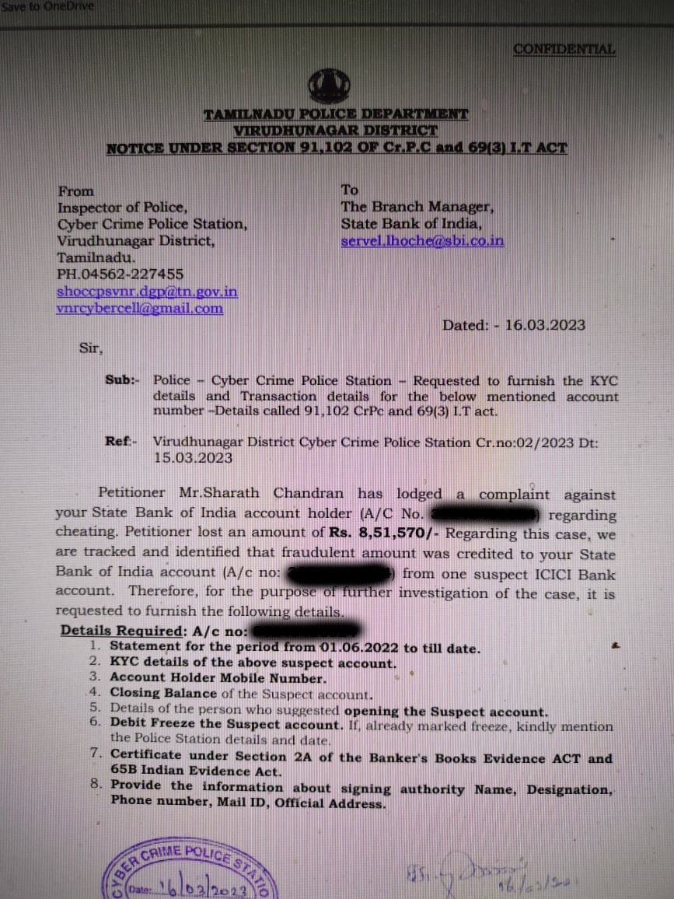
There are no transfer of 8,51,570 to my account from any account. It was just wire transfer for hackathon prize, which I can give the transaction details.
Police Loyalty to the People and the Constitution, Not to Political Powers or Corporations
In a democracy like India, the police force is expected to serve and protect the people, uphold the Constitution, and act as guardians of justice. Unfortunately, recent events in Chhattisgarh’s Hasdeo forest, where police clashed with villagers over the felling of trees for a coal mining project, have highlighted a growing concern: the police, in many instances, seem more loyal to political powers and corporate interests than to the very people and Constitution they are sworn to protect.

The Hasdeo Forest Tragedy: A Tale of Betrayal
The conflict in Hasdeo forest centers around the Parsa coal block mining project awarded to Rajasthan Rajya Vidyut Utpadan Nigam Limited (RRVUNL), where the authorities intend to fell approximately 5,000 trees. This is not just an environmental issue; it’s a matter of survival for the local indigenous communities, whose lives and livelihoods depend on the forest. The people of six villages near Fatehpur and Sali have shown clear opposition to the destruction of their environment, gathering in protest to prevent the felling of trees.
However, instead of facilitating dialogue or respecting the people’s will, the state responded by deploying 400 police and Forest Department personnel. The ensuing clash, with villagers reportedly armed with wooden sticks, arrows, and axes, starkly contrasts with the heavily equipped police force acting under orders. It was a tragic and unnecessary escalation, with arrows flying and violence erupting—a stark reminder of the increasing dissonance between the police’s duty to the people and their actions in service of political and corporate interests.
The Role of the Police: Servants of the Constitution, Not Corporate Entities
The Constitution of India enshrines the sovereignty of the people and the importance of the environment. The Preamble speaks of justice, equality, and fraternity, while Article 21 guarantees the right to life, which includes the right to a healthy environment. When police officers act in defense of corporate interests, especially at the expense of indigenous people’s rights and environmental sustainability, they betray these foundational principles.
The police are meant to enforce laws that safeguard the public good, not to become tools of oppression used by the state or big businesses. By facilitating the felling of trees that local communities oppose, the police in this case have acted in direct conflict with the will of the people they are supposed to serve. Their actions suggest loyalty to a corporate entity and the political powers in charge rather than to their fellow citizens or the Constitution.
Disobedience: A Rightful Response to Oppression
When the state, through its police force, acts against the people’s interests, civil disobedience becomes not just a right but a moral duty. The Hasdeo villagers, defending their forest and future generations, are exercising their legitimate right to resist. Nonviolent resistance has been a cornerstone of India's own struggle for freedom, led by Mahatma Gandhi, who demonstrated that civil disobedience is a powerful tool against unjust laws and state violence.
The pluralistic model of society demands that diverse voices be heard—especially those of marginalized communities. In a healthy democracy, the interests of indigenous peoples, environmental conservation, and corporate profits must be balanced. However, in Hasdeo, the balance is clearly skewed. The forceful intervention by the police signals the prioritization of corporate and political interests over ecological and human rights.
Police as Traitors to the Taxpayer?
The Indian police are funded by the taxes of ordinary citizens, the same citizens they are meant to protect. Yet, when they act as agents of the powerful, enforcing actions that the public opposes, they betray the trust placed in them. In Hasdeo, the police’s willingness to resort to violence against villagers who pay taxes and contribute to their salaries is an act of deep betrayal. How can the public trust a force that seems to be at odds with their wellbeing and willing to harm them for the sake of corporate greed?
Rahul Gandhi, condemning the violent use of police force in Hasdeo, highlighted a critical issue that goes beyond the immediate incident. It’s about the role of the police in a democracy: Are they protectors of the people or enforcers of corporate and political will? If the answer veers toward the latter, then disobedience becomes not just justified but essential to reclaim democracy itself.
The Way Forward: A Police Force for the People
The Hasdeo incident underscores the urgent need to reform the relationship between the police, the people, and the Constitution. Police officers must remember their primary duty is to the citizens of India and to the legal and moral framework that governs the country. The loyalty of the police should lie with the people and their constitutional rights, not with those in power or wealthy corporations.
As the situation in Hasdeo shows, the consequences of misplaced police loyalty are devastating. When the state chooses corporate interests over the environment and the rights of its people, it fails to fulfill its most basic responsibilities. And when the police, the enforcers of law and order, side with the powerful instead of the people, it undermines the very fabric of democracy.
In conclusion, the police must reorient their loyalty toward the people and the Constitution. Disobedience to illegitimate authority is a rightful course of action, as is protecting the environment and the livelihoods of local communities. The battle for Hasdeo forest is a battle for the soul of Indian democracy. The question is: Will the police be on the side of the people, or will they continue to serve as instruments of oppression? The answer will shape the future of both our democracy and our environment.
Outdated and Unsustainable: Why New Coal Mines in Hasdeo Ignore the Global Shift to Renewable Energy
The decision to open new coal mines in Hasdeo comes at a time when the global energy landscape is shifting rapidly towards renewable energy, making this move both economically and environmentally questionable. Countries like the U.S. are embracing solar and battery storage technologies, which are not only cleaner but also increasingly cost-effective. For instance, in 2024, solar and battery storage are projected to account for 81% of new electric-generating capacity in the U.S., demonstrating the clear economic advantage of renewable energy over fossil fuels. With the plummeting costs of solar and batteries, pursuing new coal projects in India risks locking the country into outdated and polluting technologies, while the rest of the world moves toward sustainable energy solutions that are both more efficient and less harmful to the environment.
Stubble Burning is a Distraction to pollution problem
Stubble burning is a distraction used to protect the corporate lobby, including factories that burn coal and the car industry. The lobby is so influential that no institute will dare to publish the actual data of Indian industries causing pollution.
Even if Indian data is obscured, global data clearly shows that the coal and fossil fuel industries, along with the transportation especially car industry, are the largest polluters.
Also creating green spaces and green cities is essential for tackling pollution and improving urban living conditions.
The top 7 most polluting industries in 2024
- The energy (fossil fuels) industry is the most polluting industry in the world
- The transport industry is the second most-polluting industry in the world
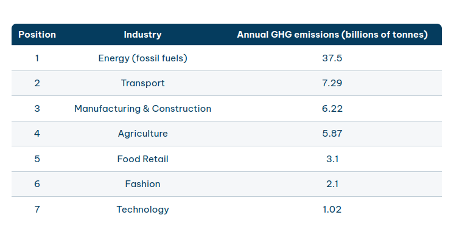
Politicians must stop misleading the public and address the real causes of pollution. Incidents like Hasdeo, where police force was employed to facilitate coal industry expansion through deforestation, represent a profound betrayal of public trust. Such actions prioritize corporate interests over the health and well-being of citizens, effectively signing a death sentence for millions. India already leads the world in pollution-related deaths, a tragic statistic that underscores the urgent need for honest, sustainable policy decisions. Only by confronting the true sources of pollution can politicians protect public health and build a cleaner, safer future.
Pollution Isn't Just a One-Day Issue: The Year-Round Impact of the Fossil Fuel Industry
During Diwali, families and children are often discouraged from celebrating due to heightened pollution levels, and many Delhi residents even leave the city to escape the toxic air. With pollution present year-round, even a small increase becomes intolerable, impacting daily life and health. It’s crucial to recognize the primary causes of this pollution—namely, the fossil fuel and car industries—rather than focusing solely on a single-day celebration like Diwali. Affordable and efficient solar panels are now widely available and could replace fossil fuel industries, significantly reducing emissions. However, the government is not taking sufficient measures to promote rooftop, community-owned power generation through solar panels; instead, they remain focused on appeasing the fossil fuel industry. Additionally, we need to rethink urban design: rather than cities congested with cars that create traffic and occupy vast spaces, we should prioritize bike-friendly, pedestrian-oriented green cities. Shifting towards renewable energy and sustainable urban planning can make our cities healthier, cleaner, and safer for future generations.
If you truly care about your children's future, it's time to stand against fossil fuels. Let’s ensure they inherit a world where they can breathe freely and live safely.
No Place for Street Vendors in India: The Erosion of Local Markets and the Rise of Rent-Seeking Hubs
In India, the bustling streets and vibrant markets have long been the lifeblood of local economies. Street vendors, small traders, and informal markets have historically provided affordable goods and services to millions, while also offering livelihoods to those who might otherwise be excluded from the formal economy. However, in recent years, the landscape of small-town markets in India has been undergoing a troubling transformation. Market complexes, once thriving hubs of commerce, are increasingly being converted into rent-seeking hubs, where small vendors are forced to pay exorbitant fees to survive. This shift is not only undermining the financial autonomy of small vendors but also transferring ownership and control of these spaces to the wealthy and politically connected.
The Case of Bhadrak: A Microcosm of a Larger Problem
Bhadrak, a small town in Odisha, offers a poignant example of this transformation. A year ago, the fish market in Bhadrak was located near the city center, within walking distance for most residents. It was a bustling, accessible space where people could easily purchase fresh fish. However, in the name of solving traffic congestion, the local authorities decided to widen the roads. While road widening is often touted as a solution to traffic problems, evidence from around the world suggests that it rarely achieves its intended goal. Instead, it often leads to increased car usage, higher emissions, and the displacement of local businesses.
In Bhadrak, the road-widening project did little to alleviate traffic. Instead, it displaced the fish market to a location 1.5 kilometers away from the city center. For many residents, this meant that shopping for fish was no longer a simple walk but required a bike or other means of transportation. The fishermen, who had traditionally sold their catch by the roadside, were left with no choice but to relocate to the new, less accessible market.
The Supermarket Model: A False Solution
The situation worsened when the local authorities decided to move the fish market to a newly constructed supermarket, located a staggering 5 kilometers from the city center. This supermarket, built in an isolated area with no nearby settlements, was touted as a modern solution to the problem of informal markets. However, the reality has been far from ideal.
To secure a spot in the supermarket, vendors are required to pay an initial fee of Rs 21,000, followed by a monthly rent of Rs 1,000. These costs are prohibitively high for many small vendors, who operate on thin margins. Moreover, the rent is subject to the whims of politicians, who can increase it at any time. This rent-seeking model has effectively transferred ownership of the market space to the wealthy, leaving small vendors with no financial autonomy.
A Male-Dominated Space: Excluding Women from the Market
The relocation of Bhadrak’s fish market to a remote supermarket has created a male-dominated buyer base, disproportionately excluding women due to societal restrictions on their mobility and the market’s inaccessible location. In a culture where women often face barriers to traveling long distances, the 5-kilometer journey to the isolated supermarket is impractical and unsafe, forcing many to rely on male family members for shopping. This shift has marginalized women from a space where they once actively participated as buyers, undermining their role in household decision-making and community interaction. The new market, devoid of the vibrancy and inclusivity of the old one, highlights how urban planning that overlooks gender dynamics can deepen existing inequalities and exclude women from public and economic life.
Low Sales and Dystopian Shopping
Despite the authorities' claims that the supermarket would modernize the market and boost sales, the reality has been quite the opposite. The remote location has deterred customers, and the market lacks the vibrant atmosphere that once characterized the old fish market. Sales are low, and the fish sold in the supermarket are not as affordable as they were in the informal market. For many residents, the new market is not a convenient shopping destination but a dystopian reminder of how urban planning can fail to meet the needs of the people.
The Need for 15-Minute Cities
The situation in Bhadrak is not unique. Across India, small towns and cities are witnessing the erosion of local markets and the displacement of street vendors in the name of modernization and development. However, this approach is fundamentally flawed. Instead of creating isolated, rent-seeking hubs, urban planners should aim to build "15-minute cities," where essential services and markets are within a 15-minute walk or cycling ride from people's homes. Such an approach would not only make cities more livable but also ensure that small vendors can continue to thrive.
Conclusion
The displacement of street vendors and the conversion of markets into rent-seeking hubs is a troubling trend that undermines the economic autonomy of small vendors and excludes large segments of the population from accessing essential goods and services. The case of Bhadrak is a stark reminder that urban development must be inclusive and responsive to the needs of all residents, not just the wealthy and powerful. If India is to build cities that are truly livable, it must prioritize the needs of its street vendors and small traders, who have long been the backbone of its local economies.
Mahakumbh Mela: A Product of Rampant Superstition Plaguing India
Mahakumbh Mela, one of the largest religious gatherings in the world, attracts millions of devotees who take a dip in the sacred rivers, believing it will cleanse them of their sins and relieve their suffering. However, beneath the veneer of spirituality lies a complex web of superstition, public health risks, and socio-political manipulation that raises serious concerns.
Public Health Hazard: Fecal Contamination in Holy Waters
Despite its spiritual significance, the water quality in the rivers during Mahakumbh is alarming. Studies have shown dangerously high levels of fecal contamination, making the water unfit for bathing or drinking. Yet, millions of devotees take ritualistic dips and even consume this polluted water, putting themselves at risk of severe health issues, including gastrointestinal diseases and skin infections.
This blind faith, driven by superstition rather than rationality, raises critical questions about public awareness and health safety. It is concerning that devotees continue to endanger themselves, believing that a ritual bath can wash away their sins and suffering.
Deep-Rooted VIP Culture and Social Inequality
Mahakumbh Mela starkly reflects India's entrenched VIP culture. Approximately one-third of the area is reserved for VIPs, while the remaining space is crammed with millions of ordinary citizens, struggling for access and basic amenities.
This blatant division highlights the social inequality plaguing Indian society. The privileged few enjoy comfort and security, while the masses are left to fend for themselves in congested and often unhygienic conditions. Such stark disparity contradicts the egalitarian spiritual principles that the event supposedly embodies.
Superstition Over Rational Solutions
The belief that bathing in Mahakumbh can absolve one’s past karma and alleviate suffering is not just a matter of faith but a troubling example of superstition overshadowing rational problem-solving. People attribute their hardships to past misdeeds rather than addressing the systemic issues causing their suffering.
This misplaced faith diverts attention from necessary reforms, including the need to tackle political corruption, economic inequality, and institutional failures. Instead of demanding accountability from leaders or seeking practical solutions to social issues, people rely on ritualistic cleansing as a cure-all.
Political Manipulation and Vote Bank Strategy
Mahakumbh Mela is not just a religious event; it is a potent political tool. Politicians exploit the occasion to appeal to religious sentiments, securing vote banks through emotional manipulation and superstition. By championing religious narratives, they cleverly distract people from critical issues like unemployment, corruption, and economic hardship.
This strategic use of superstition allows leaders to escape accountability, keeping the public distracted and disempowered. Instead of fostering a politically conscious citizenry, this exploitation reinforces ignorance and blind faith.
Poor Crowd Management and Loss of Lives
The sheer scale of Mahakumbh Mela requires meticulous planning and crowd control. Yet, year after year, it reveals a grim reality of administrative failure. In one tragic incident, dozens of people were killed in a pre-dawn stampede. The local hospital's morgue received 39 bodies within 12 hours, with more arriving throughout the day.
This heartbreaking event exposes the government's inability to manage such massive crowds safely. Despite knowing the expected turnout, authorities failed to implement effective safety measures, leading to unnecessary loss of lives. It highlights the urgent need for better crowd management strategies, advanced surveillance, and improved emergency response systems.
A Call for Reform and Rational Thinking
India's progress depends on breaking free from the shackles of superstition and embracing rational, evidence-based thinking. Mahakumbh Mela, in its current form, highlights the urgent need for social and political reform.
- Public health awareness must be prioritized, emphasizing the dangers of contaminated water.
- Social equality should be reflected in event management, abolishing preferential treatment for VIPs.
- Political narratives should shift from superstition-driven vote-bank politics to genuine developmental agendas.
- Most importantly, improved crowd management and safety protocols are essential to prevent tragic stampedes and loss of lives.
It is high time that India re-examines the role of rituals and beliefs in public life. Spirituality and faith are personal choices, but they should not come at the cost of public health, social equality, or rational governance.
Corrupt Institutions of India
Date: 06-03-2025
Puzzle of Growth: Rich Countries and Poor Countries
A nation's progress and development are heavily reliant on the strength and integrity of its institutions. When a country tolerates and even legitimizes corruption within its institutions, it sets a dangerous precedent that undermines the foundation of its society and hinders its potential for growth. Corruption erodes public trust, distorts the democratic process, and hampers economic development, ultimately leading the country down a path of decline and stagnation. To ensure a brighter future, it is crucial to foster a culture of accountability, transparency, and adherence to the rule of law, while actively combating corruption at all levels of government and society.
Institutions dictate incentives
Institutions dictate incentives for entrepreneurs, who bring new ideas and contribute to a prosperous nation.
Institutions in India that are impeding the country's progress due to corruption and inefficiency include:
Our Judicial System:
With over 80,000 cases pending in the Supreme Court and approximately 5 crore (50 million) cases pending in various courts across India, 1 crore of which are civil cases, our judicial system is in a dire state. Furthermore, the courts have become complicit in corruption and favoritism towards the government. This is evident in their inability to hold the Election Commission accountable by not allowing Electronic Voting Machines (EVMs), or counting all the VVPAT slips and their decision to pass religious laws, such as the construction of the Ram Mandir on the site of a demolished mosque, which has led to increased religious unrest. Judges delay cases, thinking that delaying is their birthright, and thereby normalizing the process. For example, delaying cases under draconian laws like PMLA and UAPA, which the government uses to harass dissenters or opponents.
Our Mainstream Media:
The mainstream media in India has become a lapdog of the government, spreading government propaganda and fake news rather than holding the government accountable for its actions. They have failed to expose the government's flaws and shortcomings.
Our Educational Institutions:
Indian schools and universities continue to teach an outdated, rote-based curriculum that lacks critical thinking skills. This outdated educational system is failing to produce well-rounded, informed citizens who can contribute positively to society. Instead of focusing on improving the curriculum, the government is engaged in saffronization.
Our Government:
The current government has spent in multiples of 1000 crore on advertisements to promote an uneducated prime minister as a "viswaguru" (universal guru) with god-like status. They have used the complicit mainstream media to hide their flaws and shortcomings. The government's poor economic policies have led to a slowdown in the economy, reducing the GDP growth rate from 10% to 5-6%, despite the rapidly increasing population. India has now become the country with the highest population growth rate, surpassing China.
Our government is trying its best to hide information by introducing bills like the Digital Personal Data Protection Act (DPDP Act) to dilute the RTI and control online media by tabling bills like the Broadcast Bill. Or amending income tax laws to transform India into a surveillance state, infringing on your right to privacy by enabling the scrutiny of every person’s social media accounts, personal emails, bank accounts, online investment accounts, trading accounts, and more.
These institutions, plagued by corruption, inefficiency, and a lack of accountability, are hindering India's progress and development. Reforms and significant changes are necessary to address these issues and ensure a brighter future for the country.
Form follows function
The principle of "form follows function" emphasizes that the design or structure of an entity—whether biological, architectural, or institutional—is shaped by its intended purpose or function. In biology, the structure of cells and organisms is intricately tied to their function. For example, the elongated shape of nerve cells allows them to transmit electrical signals over long distances, while the folded structure of mitochondria maximizes energy production. Similarly, in architecture, the design of a building reflects its purpose: a stadium's open, tiered structure facilitates large audiences, while a hospital's layout prioritizes efficiency and accessibility for patient care.
This principle extends to the design of institutions, where the structure defines their function and effectiveness. Well-crafted institutions—such as democratic governments, transparent legal systems, and inclusive economic policies—are structured to promote stability, equity, and growth. For instance, a decentralized government structure can empower local decision-making, fostering adaptability and responsiveness to community needs. Conversely, poorly designed institutions, such as those plagued by centralized power or lack of accountability, often fail to deliver their intended functions, leading to inefficiency, corruption, or stagnation.
The "form" of a nation's institutions—its governance structures, legal frameworks, economic policies, and social systems—directly influences its "function," which is the overall well-being and prosperity of its citizens.
Well-designed institutions that prioritize transparency, accountability, and adaptability create an environment conducive to economic growth, innovation, and social stability. For instance, strong property rights, efficient judicial systems, and inclusive political institutions foster trust and encourage investment, both domestic and foreign. Conversely, poorly designed institutions, marked by corruption or inefficiency, hinder development and perpetuate inequality.
Thus, the prosperity of a country is deeply tied to the intentional design of its institutions, ensuring they align with the needs and aspirations of its people. In this way, the form of institutional design becomes the foundation for achieving the function of national prosperity.
From Godmen to Godfathers: How Babas Are Shaping Hindutva Politics and India’s Future
Gone are the days when self-proclaimed godmen and babas were exposed for their fraudulent practices and hauled away by the police. Today, they have transformed into influential figures, indoctrinating and mobilizing masses to build a formidable Hindutva vote bank. A video from Bihar captures this unsettling reality: crowds of people gathered around a baba, swarming like insects drawn to ripe fruit. This imagery is not just a reflection of blind faith but also a testament to the growing politicization of religion in India.
The rise of Hindutva politics has been accompanied by a systematic overhaul of India’s educational and cultural landscape. The periodic table and the theory of evolution, once cornerstones of scientific education, have been removed from school syllabi. These changes are not merely academic adjustments; they represent a deliberate attempt to reshape the collective mindset of a nation. For 70 years, the Congress-led secular education system, though flawed in its reliance on rote learning, at least aimed to foster a sense of inclusivity and diversity. However, the current government, in power for nearly a decade and a half, has taken a different path—one that prioritizes ideological indoctrination over critical thinking.
The consequences of this shift are alarming. By undermining secular education, the government is not only eroding the foundations of rational thought but also jeopardizing the future of millions of young Indians. What do parents truly want for their children? Employment, opportunities, and a chance to thrive in a competitive world. Yet, the current trajectory seems to be steering youth toward a different fate—one where they are either pushed into religious roles, living off alms, or driven to despair by unemployment. India already has one of the highest student suicide rates in the world, a tragic reflection of the systemic failures and the immense pressure faced by the younger generation.
To the 60% of Indians who have not voted for this government, this is an appeal to reflect on the direction in which the country is headed. Do we want a future where education is reduced to a tool for ideological propagation, where scientific temper is sacrificed at the altar of political expediency? Or do we envision a society that values secularism, critical thinking, and equal opportunities for all?
The choice is ours to make. The stakes are high, and the time to act is now. Let us not allow the minds of our children to be played with or their futures to be compromised. Let us demand an education system that empowers, not enslaves; that enlightens, not obscures. The future of India depends on it.
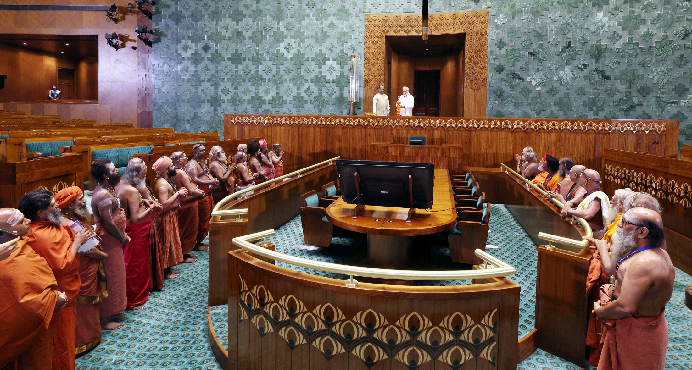
Without Government Subsidies, Starlink Is Dead: Can It Compete with 5G's Dominance?
Starlink, SpaceX's satellite internet service, faces significant challenges in competing with 5G technology. While Starlink offers speeds of around 100 Mbps, 5G networks can deliver speeds ranging from 300 Mbps to 1,000 Mbps.
Additionally, the decentralization of 5G infrastructure, enabled by blockchain and cryptocurrency, is expected to drive costs down dramatically. This could potentially make unlimited 5G internet almost free, available for less than $1 per month or even per year. In contrast, Starlink requires a hefty upfront equipment cost of $499, which alone could cover a lifetime of 5G internet for many users.
The Sustainability of Starlink
Starlink has already launched over 7,000 satellites and plans to deploy up to 30,000 to create its global network. However, each satellite has a limited lifespan of approximately 5 to 7 years, with some sources suggesting a target lifespan of just 5 years. This means SpaceX will face ongoing costs for satellite production, launches, and replacements, which could strain its financial sustainability.
The Role of Government Subsidies
Without government subsidies, Starlink's future appears uncertain. The service relies heavily on subscriber revenue to offset its high operational costs, but it struggles to compete with the affordability and speed of 5G. A Morgan Stanley analysis initially overestimated Starlink's viability, assuming a cost of $1 million per satellite and $50 million per launch. While SpaceX has managed to reduce launch costs through reusable rockets, the overall economics of Starlink remain challenging, especially as 5G continues to expand and become more cost-effective.
Conclusion
Starlink's ability to compete with 5G is questionable. While it provides a valuable service for remote and underserved areas, its high costs, high latency, limited satellite lifespan, and slower speeds compared to 5G make it difficult to sustain without government support. As 5G networks become more widespread and affordable, Starlink may struggle to attract and retain subscribers, raising doubts about its long-term viability.
Crypto is Not About Tax Evasion; It's About Collecting Decentralized Tax Efficiently
The mainstream narrative surrounding cryptocurrency often paints it as a tool for tax evasion and illicit activities. However, this is far from the truth. The true power of cryptocurrency lies in its ability to facilitate efficient and decentralized tax collection. Instead of relying on intrusive government surveillance, crypto offers a system where tax collection is automated through smart contracts, transaction fees, and controlled inflation.
How Decentralized Taxation Works
Decentralized finance (DeFi) and blockchain technology enable a novel approach to tax collection. Rather than relying on arbitrary tax brackets and manual enforcement, crypto tax can be collected in two efficient ways:
- Transaction Costs: Every blockchain transaction incurs a fee, which can be programmed to contribute to a public treasury. This means that tax is collected automatically with every transaction, removing the need for complex tax filings and audits.
- Controlled Inflation: Rather than printing unlimited fiat money, cryptocurrency projects can introduce controlled inflation, where a small percentage of newly minted tokens is directed towards public spending.
These methods ensure fair and transparent taxation, reducing tax evasion and eliminating the need for an extensive bureaucratic apparatus. Smart contracts ensure that collected funds are distributed efficiently to essential services, cutting down corruption and inefficiencies present in centralized systems.
The Link Between Crypto, GDP Growth, and Velocity of Money
A core principle of economic growth is the velocity of money—the rate at which money circulates in the economy. The faster money moves, the greater the economic activity and GDP growth. Cryptocurrency drastically increases the velocity of money through:
- Faster Transactions: Traditional banking systems impose delays, while crypto enables instant cross-border transactions.
- Lower Transaction Costs: High banking fees slow economic activity. Crypto transactions are significantly cheaper.
- Decentralized Distribution: Unlike fiat money, which is often hoarded by large corporations or banks, cryptocurrency can be distributed widely and transparently.
Fiat currency, controlled by central banks, fails to achieve this efficiency. Government-controlled monetary policies often lead to stagnation, inefficiencies, and wealth concentration in the hands of elites. Cryptocurrency levels the playing field, allowing for fairer distribution of economic opportunities.
India’s Urgent Need for Decentralization
India, a country with a high poverty rate and vast economic disparities, desperately needs decentralization. However, the Indian government’s crypto policies are actively hurting its own economy rather than embracing innovation.
First, they imposed an exorbitant 30% tax on crypto profits, discouraging innovation and driving traders and developers to friendlier jurisdictions. Now, they are introducing draconian Income Tax Rules aimed at turning India into a surveillance state.
Upcoming Mass Surveillance Measures
Starting April 1, 2026, the Indian Income Tax Department will be granted sweeping powers to access:
- Social media accounts
- Personal emails
- Bank accounts
- Online investment and trading platforms
This means that if there is even a suspicion of tax evasion, the government can freely monitor and access an individual’s entire digital footprint. Instead of focusing on making taxation fairer and more efficient, the government is prioritizing surveillance and control over its citizens.
A Government That Distrusts Its Citizens but Lacks Accountability
While the government is busy doubting its citizens, it refuses to hold itself accountable. The Modi government has spent ₹3,600 crore in just three-and-a-half years on advertisements featuring the Prime Minister. This is public money that could have been invested in infrastructure, education, or healthcare.
Moreover, the controversial Electoral Bonds scheme has allowed political parties to collect ₹12,155 crore in donations—most of which come from corporate donors looking for political favors. Public donations, which are transparent and small in size, make up almost none of this amount. This raises serious concerns about corruption and quid pro quo deals happening behind closed doors.
India’s Corrupt Bureaucracy and the Government’s Double Standards
India is plagued with corruption at every level of governance. Multi-crore deals happen daily, and yet, the government chooses to target ordinary citizens instead of its own corrupt bureaucrats and politicians.
- 2,623 wilful defaulters owe ₹1.96 trillion to Indian banks, yet no serious action has been taken against them.
- Nirmala Sitharaman claims that WhatsApp chats exposed ₹250 crore in unaccounted cash and ₹90 crore in crypto assets—a mere fraction compared to the systemic corruption within the government itself.
- Such claims lack proper validation and transparency. How many people were involved? Under what circumstances was this money unaccounted for? Without proper disclosure, these statements appear more like distractions than genuine anti-corruption efforts.
The Real Solution: Government Transparency, Not Citizen Surveillance
Instead of harassing citizens and turning India into an Orwellian surveillance state, the government should focus on:
- Implementing Decentralized Tax Collection: Adopt blockchain-based taxation to ensure fair and efficient tax collection.
- Reducing Government Waste: Cut down unnecessary expenditures, such as extravagant advertising campaigns.
- Increasing Political Transparency: Make all political donations public and traceable to avoid quid pro quo deals.
- Holding Billionaires and Corporates Accountable: Instead of targeting retail crypto traders, go after major defaulters who have looted the country.
Conclusion
Cryptocurrency is not about tax evasion—it is about efficient, fair, and transparent tax collection. Instead of adopting surveillance-heavy policies that punish ordinary citizens, India must embrace blockchain technology to create a fairer economy. The government must stop doubting its people and start holding itself accountable for the rampant corruption and inefficiencies that continue to plague the nation. Only then can India truly unlock its economic potential and ensure financial freedom for all.
Haryana Election
Ignoring all the evidence and not providing or hiding all the data that the Election Commission of India (ECI) is legally bound to provide, including the 17C data, one can safely draw the conclusion that the election is rigged.
How EVM works and Why it should be banned to save the democracy?
Haryana election rigging, listen to the counting agent
Seat Percentage
Bharatiya Janata Party - BJP seat percentage:53.333333333
Indian National Congress - INC seat percentage: 41.111111111
Vote share
Bharatiya Janata Party - BJP vote share: 39.94448315777956
Indian National Congress - INC seat percentage:39.09360404512759
Difference
Difference in seat percentage: 12.2222
Difference in vote share: 0.850879113
Hardly any election analysis has yet revealed such a significant seat share difference in comparison to the margin of vote percentage difference. The possibility of election rigging appears to be very evident.
Winner won majority
In 36 constituencies, the winner won the majority votes, while in 54 constituencies, the candidate who won did not get the majority votes.
One can assume how terrible FPTP is. FPTP voting is most susceptible to EVM manipulation, and it's also terrible because it hardly considers what the majority of voters want. Moreover, it's antidemocratic because in 60% of constituencies, the representative didn't receive the majority of votes or the majority mandate from the people.
We need to start considering a more fair voting system, such as Approval Voting, that eliminates vote splitting.
Its time to quit voting in Maharashtra election
Your vote doesn't really matter. The evidence from data is clear: EVMs are being manipulated. As a result, voting has become a futile exercise. Unfortunately, the opposition has also failed to ensure election integrity. They often raise a ruckus for a day or two after losing an election, only to become silent afterwards. Moreover, opposition leaders are known to switch parties for personal gain, often in exchange for financial benefits. Therefore, it's pointless to vote for the opposition.
Institutional corruption has taken over, with the ECI and the Supreme Court failing to uphold the principles of democracy. It's better to boycott voting altogether and join the movement to end EVMs and FPTP.
Instead of resorting to violence, equip yourself with the strategies of non-violent struggle that our legacy of Mahatma Gandhi and Ambedkar has taught us. Learn about the weaknesses of EVMs and FPTP, and use that knowledge to your advantage. Make peaceful protests a part of your daily life. Stand up with placards, drums, and posters against EVMs and FPTP.
How EVM works and Why it should be banned to save the democracy?
Approval Voting: An alternative
Remember, we the people give institutions their power. We can take it away at any time. So, let's rise up and reclaim our democracy.
Necessary Sources of political Power
Why is Leader of Oppostion Rahul Gandhi Silent on EVM issues?
The debate around Electronic Voting Machines (EVMs) and their alleged vulnerabilities has persisted now for years in India. We wonder why Rahul Gandhi, the leader of the opposition and a most prominent figure in Indian politics, has not taken a decisive stand on this crucial issue. His perceived inaction raises questions about his leadership approach, political strategy, and commitment to electoral integrity.
Misguided by Close Party Leaders?
A potential reason for Rahul Gandhi’s apparent indecision could be reliance on advice from close party leaders who might downplay the significance of addressing EVM-related concerns. If these advisors believe raising the issue might backfire or appear as an excuse for electoral losses, it could explain his reluctance. However, ignoring legitimate concerns about EVM security undermines the trust of both party workers and the electorate.
Moreover, many of these close party leaders are rumored to have connections with the party in power. While appearing to be on Rahul Gandhi’s side, they may deliberately misguide him, steering him away from addressing critical issues like EVM fraud. Such duplicitous behavior not only weakens the opposition's ability to mount an effective challenge but also deepens mistrust within the party ranks.
Overlooking Flaws in EVMs?
The flaws of secretive EVM systems are well-documented, with concerns about hacking, tampering, and lack of transparency repeatedly raised by opposition parties, activists, and technologists. Does Rahul Gandhi not grasp the gravity of these issues? Or does he underestimate their impact on India's democratic processes? As a leader expected to champion democratic values, his silence is disappointing, especially when the integrity of elections—the cornerstone of any democracy—is in question.
Wishful Thinking or Political Strategy?
Another possibility is that Rahul Gandhi is engaging in wishful thinking, hoping that power will eventually swing back to Congress without directly addressing EVM concerns. If this is the case, it reflects a dangerous complacency. Ignoring systemic issues like EVM vulnerabilities risks perpetuating electoral outcomes that may not accurately reflect the people's will.
Secret Motives or Lack of Will?
Some might speculate that Rahul Gandhi's inaction could stem from internal party dynamics or undisclosed strategic reasons. Is he avoiding the topic to prevent controversy, or does he lack the political will to take a firm stand? If so, this approach raises serious doubts about his commitment to the party’s and the nation’s best interests.
Further speculation suggests more troubling possibilities. Could Rahul Gandhi be under pressure due to blackmail? Is there a fear that certain corrupt dealings or sensitive secrets might be exposed if he challenges the EVM issue too forcefully? Such a scenario, if true, would highlight a serious vulnerability in leadership and raise questions about external influences compromising his ability to act independently.
Another possibility is a behind-the-scenes compromise with corporate entities or the party in power. In a political climate where large businesses wield significant influence, it’s plausible that tacit agreements have been made to maintain the status quo. If there is any truth to this, it would reflect a betrayal of public trust and the foundational principles of democracy.
Flawed Priorities: Focusing on Caste Census Over EVM Concerns
Rahul Gandhi's focus on pushing for a caste census, while ignoring the pressing issue of EVM integrity, reflects flawed priorities. Without securing the democratic structure that ensures free and fair elections, the relevance of a caste census becomes questionable. A caste census may have its merits, but its execution requires a robust and balanced democratic framework where power is not centralized or manipulated. Addressing EVM vulnerabilities should be the first step in restoring electoral credibility and ensuring that policies like the caste census are implemented in a fair and transparent system. Without this foundation, even well-intentioned initiatives risk being undermined.
Parliament Disrupted for Adani, But Not for Electoral Integrity
Parliament is frequently disrupted over allegations of corruption involving Adani, but how many times has the opposition protested against EVM manipulation or shut down the parliament to demand electoral reforms? This silence raises questions about the opposition's commitment to electoral integrity. Rahul Gandhi often states that there is no level playing field in India, as all resources are allegedly channeled to Adani, a close ally of Prime Minister Modi. However, the opposition can only create a level playing field if they win elections. To achieve that, they must first address the fundamental issue of fair elections by challenging the vulnerabilities of EVMs. Without this fight, their actions appear more like a spectacle or circus for public entertainment rather than a serious effort to safeguard democracy.
The Threat to Democracy
The consequences of inaction on EVM integrity are dire. Without a credible and transparent voting process, the country risks sliding toward authoritarianism. Despite opposition parties collectively receiving over 60% of the votes in many elections, they frequently lose due to questionable seat distributions. For instance, in the recent Haryana Assembly election, Congress lost 12% of seats despite only a 0.85% vote difference. Such anomalies are not isolated incidents but recurring patterns. The opposition's act of providing legitimacy to an illegitimate government elected through EVM fraud poses a serious threat to democracy.
The Responsibility of Party Workers
Congress party workers, who pour their hearts into election campaigns, must realize that hard work alone cannot guarantee victory if the system itself is compromised. They must urge their leaders to confront the EVM issue head-on rather than remain in wishful thinking. A strong demand for transparency and accountability in the voting process is essential for fair elections.
Additionally, party workers need to challenge Rahul Gandhi to step out of the shadow of indecision and take concrete action against EVMs. If he continues to remain passive, they must not shy away from warning him of losing their support. Such a push could serve as a wake-up call for leadership, ensuring that the countless hours of effort and dedication by party workers translate into meaningful change, rather than being rendered futile by a compromised electoral system. Party workers must recognize their power to hold their leaders accountable and demand decisive action for the greater good of democracy.
Time for Concrete Action
Rahul Gandhi should not merely pretend to emulate Mahatma Gandhi’s moral leadership; he must also take decisive actions to uphold democratic principles. Concrete steps are necessary—be it demanding a return to paper ballots, pushing for EVM audits, compiling all the 17C forms and making them public for scrutiny of ballot counts or rallying opposition parties to collectively address this pressing issue.
Will Congress Truly Fight to Eliminate EVMs?
In a recent statement, Congress Chief Mallikarjun Kharge declared, "We don't want EVMs, we want ballot paper." While this sentiment aligns with growing concerns over EVM integrity, the real test lies in whether Congress is willing to fight tooth and nail to eliminate EVMs from the electoral process. Mere words are not enough—what's needed is sustained action, relentless advocacy, and political courage to challenge the system. The party must ensure it does not inadvertently become an accomplice to EVM fraud by failing to follow through on this stance. If Congress genuinely prioritizes democracy, it must lead a determined movement to restore the ballot paper system, rallying public support and forging a united opposition on this critical issue.
The Imitation Game Movie and Its Relevance to EVM Concerns
The Imitation Game, a movie based on true events, depicts the incredible story of Alan Turing and his team at Bletchley Park during World War II. They succeeded in breaking the Nazi Enigma code, a cryptographic system thought to be unbreakable. However, their victory brought an unexpected challenge: they couldn’t use the decoded information to stop all enemy attacks. Doing so would alert the Germans that their code had been cracked, rendering the entire effort futile. To maintain secrecy, Turing's team had to make calculated decisions, allowing some attacks to occur to ensure the enemy didn’t suspect their encryption system had been compromised. As a result, while 70% of Allied ships were saved through strategic interventions, others were left to their fate to protect the greater mission—winning the war.
Strategic Manipulation: The Plausible EVM Tactic
In a method strikingly similar to the Enigma strategy, the government may not be hacking EVM results across the board. Instead, they could be selectively targeting key states and constituencies with a larger number of seats while leaving a few smaller states or constituencies untouched. This calculated approach ensures plausible deniability, as it allows them to argue, "If EVMs are manipulated, how can the opposition win in these states?" By leaving room for some opposition victories, the public's suspicion is mitigated, and the system's legitimacy remains intact in the eyes of many. This selective interference could effectively tilt the balance of power while maintaining the illusion of fairness in the electoral process. Such a strategy, if true, would pose a grave threat to democracy by undermining its foundational principle of free and fair elections.
Conclusion
As the leader of the opposition, Rahul Gandhi bears the responsibility to safeguard the nation’s democratic integrity. His reluctance to address EVM concerns undermines not only his leadership but also the trust of millions who look up to him. India deserves leaders who act decisively, especially on issues as fundamental as electoral integrity. Without urgent action, the future of democracy in the country remains at risk. It’s time for Rahul Gandhi to step up and take a firm stand—for his party, his nation, and democracy itself.
The Supreme Court of India: Supreme Corruption Institution?
The Supreme Court of India, often lauded as the guardian of the Constitution, has recently come under fire for decisions that critics claim prioritize institutional opacity over transparency and dismiss critical debates with rhetoric instead of evidence-based reasoning. These accusations raise pertinent questions about the judiciary’s role in maintaining democratic accountability.
The Case of Hidden Data: A Blow to Electoral Transparency
One of the most glaring controversies involves the Supreme Court’s refusal to release polling station-wise voter turnout data (Form 17C). The Association for Democratic Reforms (ADR) argued that such data could help address discrepancies of 5-6% between initial and final turnout figures, enhancing electoral transparency. However, the Supreme Court denied this request, citing logistical challenges and potential misuse of data.
This decision has drawn sharp criticism. How can data lead to misuse? Transparency advocates argue that data, in itself, cannot inherently lead to misuse—it serves as the foundation for accountability and transparency. Denying public access to such critical information fosters suspicions of electoral malpractice and fuels distrust in democratic institutions.
The Election Commission of India (ECI) defended its stance, claiming that Form 17C data is already accessible to candidates’ agents, implying a check is in place. However, making such data public would allow independent audits, fostering confidence in electoral processes. By refusing, the court appears to have undermined its own mandate to uphold transparency.
Booth-Wise Data Can Reveal Leads on EVM Manipulation
Transparency in the electoral process empowers citizens to hold institutions accountable. If the Election Commission of India (ECI) provided booth-wise data—including the location of polling booths, vote counts from each EVM, the votes each candidate received on each EVM and booth-wise turnout figures—the public could independently analyze and identify potential discrepancies or irregularities.
Currently, the ECI only provides vote data in the form of aggregated EVM rounds, which is insufficient for meaningful scrutiny.
Booth-wise data would allow experts, watchdog organizations, and even ordinary citizens to detect patterns that could indicate EVM manipulation. For instance, unusually high or low turnout figures at specific booths, discrepancies between turnout data and vote counts, or statistical anomalies could raise red flags, prompting further scrutiny.
If EVMs are indeed as secure and tamper-proof as the ECI claims, there should be no hesitation in releasing such data. Hiding this information raises suspicion and undermines public trust. Transparency not only strengthens democratic systems but also provides the ECI an opportunity to demonstrate its confidence in the robustness of EVMs.
Refusing to release booth-wise data contradicts the ECI’s claim of infallible EVM security. If the system is bulletproof, why the secrecy? Accountability demands openness, and in a democracy, withholding information only fuels doubt and speculation. Providing comprehensive booth-wise data would be a significant step toward restoring public faith in the electoral process.
EVM Debate: Science Dismissed, Whataboutism Adopted
The debate over the reliability of Electronic Voting Machines (EVMs) is another example where the Supreme Court faced criticism for its handling of concerns. In response to a petition advocating a return to paper ballots, the court dismissed the plea with a sweeping generalization: "When you win the election, EVMs are not tampered with. When you lose, they are tampered with."
Such remarks trivialize serious concerns raised by cryptographers and computer science experts globally. Most computer science and cryptography experts agree that no electronic system is entirely immune to manipulation. Internationally, many nations have reverted to paper ballots or adopted verifiable hybrid systems to enhance electoral integrity.
Will the Supreme Court take the time to attempt the given quiz on EVM science , share their score, and update their knowledge about EVMs? Click on The quiz link
Instead of engaging with evidence or expert analysis on EVM vulnerabilities, the court resorted to rhetorical deflections.
After Paul revealed he had been to over 150 countries, the bench asked him whether each of the nations had ballot paper voting or used electronic voting.
The petitioner said foreign countries had adopted ballot paper voting and India should follow suit.
The strange answer:
"Why don't you want to be different from the rest of the world?" asked the bench.
What it can be interpreted is:
So, if other countries are not committing election fraud, only India is different because it conducts election fraud. That is a great achievement for the country because India is, indeed, different.
Judicial Accountability: A Growing Concern. Can we Trust Judiciary?
These instances point to a broader issue: the Supreme Court’s unwillingness to engage transparently and scientifically with matters of public concern. Critics argue that the judiciary is increasingly shielded from scrutiny, with decisions reflecting institutional convenience rather than constitutional principles.
Transparency and accountability are the cornerstones of democracy. Whether it is electoral data or the integrity of voting systems, the judiciary has a responsibility to lead by example. By refusing to embrace transparency and dismissing scientific arguments, the Supreme Court risks eroding public trust—a danger that no democracy can afford.
Responsibility of Political Parties in Releasing the Data
While the Election Commission of India (ECI) has a duty to publish Form 17C data as it is public information, political parties and candidates have an equally critical role in ensuring transparency. As participants in the electoral process, candidates are not merely passive competitors; they also act as inspectors of the process. This dual role places a responsibility on them to share their findings and reports with the ultimate authority—the public.
Candidates have access to Form 17C data, which includes crucial voter turnout information. Transparency advocates argue that political parties should publish this data regardless of whether the ECI fulfills its obligation to do so. The idea that political parties should disclose 17C data only in response to the ECI’s inaction is flawed. This data belongs to the public, and withholding it undermines the principles of accountability and trust.
By voluntarily publishing their inspection reports and turnout data, political parties can demonstrate their commitment to fair and transparent elections. Such proactive measures would not only bolster public confidence in the electoral process but also set a higher standard for institutional integrity, compelling the ECI and other stakeholders to follow suit.
Responsibility of Public: Public and Civil Societies Must Demand Booth-Wise Data
It is imperative for the public and civil societies to demand basic booth-wise data from the Election Commission of India (ECI) and political parties to ensure transparency and accountability in the electoral process. While we take pride in the act of voting—pressing the EVM button, flaunting our inked fingers, and sharing selfies on social media—the journey of our vote after that often escapes scrutiny. There is little concern or awareness about how our vote is counted, whether it aligns with the declared results, or if the process remains tamper-free. This complacency must change. By collectively demanding booth-wise data, such as vote counts for each candidate and turnout figures, citizens can reclaim their role as active participants in democracy, ensuring every vote truly counts.
Breaking the Trust on EVMs: Addressing the Awareness Problem Through Deep Canvassing
The Electronic Voting Machine (EVM) has been a cornerstone of India's voting process for several years.
Voter turnout in India is comparable to other democracies, hovering around 50-60%, which necessarily indicates too much trust in the EVM system by the people.
In fact, it's a reflection of the general public's lack of awareness and understanding about the functioning and potential vulnerabilities of EVMs.
While we take pride in the act of voting—pressing the EVM button, flaunting our inked fingers, and sharing selfies on social media—the journey of our vote after that often escapes scrutiny. There is little concern or awareness about how our vote is counted, whether it aligns with the declared results, or if the process remains tamper-free.
The Illusion of Trust in EVMs
The average citizen rarely questions the technology behind EVMs. In places like Markadwadi, a small village in Maharashtra, where some individuals question EVMs, the rest of the population remains indifferent or unaware. Why don't every villagers ask questions against EVM? This disparity highlights an awareness gap. Why do only a few question EVMs while the majority accept them without hesitation? The root cause lies in a lack of understanding, compounded by the illusion of trust in technological systems.
Testing Public Knowledge and Misconception
Whoever it was tested on the quiz, they all got the answer to the security question wrong.
Which statement best describes the impact of secrecy on software security?
Open-source software exposes code to a wider range of attackers, increasing the risk of exploitation.
or
Secrecy is a liability, as it hinders the identification and patching of security flaws by a wider community of experts.
No Knowledge about FOSS Philosophy
India, despite having a large production of computer science graduates, struggles with a lack of FOSS (Free and Open-Source Software) developers and a limited understanding of the benefits or freedom it offers. The majority of the population is non-technical, and many computer engineers end up working in companies like TCS or Infosys, producing proprietary software. Companies like Infosys whose cofounder Narayana Murthy demand 80-90 hours a week from employees who want to create wage slaves rather than critical thinkers.
People Are Fed Manipulative Tactics with Simplistic Explanations
The question, “If EVMs are manipulated, how can the opposition win in these states?” is a rhetorical device designed to dismiss concerns about electoral fraud, offering a simplistic explanation that ignores the possibility of strategic manipulation.
The government may not be hacking EVM results across the board. Instead, they could be selectively targeting key states and constituencies with a larger number of seats while leaving a few smaller states or constituencies untouched. This calculated approach ensures plausible deniability, as it allows them to argue, "If EVMs are manipulated, how can the opposition win in these states?" By leaving room for some opposition victories, the public's suspicion is mitigated, and the system's legitimacy remains intact in the eyes of many.
Deep Canvassing in Awareness: The Illusion of Explanatory Depth
Psychological studies reveal that people often overestimate their understanding of systems, whether it’s a zipper, a toilet, or an EVM. When asked to explain these systems in detail, they quickly realize their knowledge gaps, prompting them to reevaluate their stance. The same principle applies to political and technological issues.
Practical Application: Role of Teachers, Civil Society Members
Teachers, civil society members, and aware citizens must take the lead in initiating deep canvassing campaigns. By breaking down the mechanics of EVMs, highlighting potential vulnerabilities, and explaining why secrecy in software security is a liability, they can gradually dismantle the blind trust in EVMs.
State terrorism for those who distrust EVM

Are there any connection between Opposition and Party in Power??
India's Democratic Crossroads: A Future in Peril?
The Threat of a One-Party Rule
In the next four years, India risks sliding toward a one-party dictatorship, fueled by systematic manipulation of electoral processes and a weakened opposition unable to mount a credible challenge. The Electronic Voting Machines (EVMs), once hailed as a technological marvel for free and fair elections, have increasingly come under scrutiny, with allegations of tampering growing louder. With a ruling party that faces little resistance from an opposition perceived as fragmented and spineless, EVM and electoral manipulation are likely to escalate without any consequences for the party in power.
The Decline of Regional Political Diversity
Key states critical for maintaining India’s regional diversity are under threat. Regional parties, long the backbone of India’s federal political fabric, face extinction as their influence wanes under relentless political and institutional pressure. The trend is clear: wherever regional parties align with the BJP, it is the BJP that emerges stronger, gradually eroding the essence of coalition politics.
The Key Battles of Delhi and Bihar
Two major state elections loom on the horizon in 2025: Delhi and Bihar. Delhi is hardly a concern for the BJP/RSS, as there are few seats, and they can jail as many AAP candidates as they wish with the help of a compromised judiciary and institutions like the ED. In Bihar, Chief Minister Nitish Kumar, known for his political agility, may face the twilight of his career. The BJP's electoral strategy has consistently focused on eliminating the need for coalition partners, opting instead for absolute dominance. This approach undermines the very principles of consensus and collaboration upon which Indian democracy thrives.
Empowering Citizens to Safeguard Democracy
The future of India’s democracy depends on an awakened citizenry willing to demand accountability, transparency, and pluralism. Citizens who can mobilize to ban EVMs and advocate for a robust, fair electoral process will play a critical role in shaping the country's destiny. Without meaningful reforms to ensure the integrity of elections, India's democratic framework may continue to erode.
A Call for Collective Action
As we grapple with this potential reality, one question looms large: what role will the common citizen play? Will citizens rally to bolster the opposition and regional parties, forcing them to address concerns of electoral manipulation and EVM transparency? Or will they passively witness the hollowing out of democracy, sleepwalking into authoritarianism?
The Test of India’s Democratic Resolve
The answer lies in the collective resolve of India's citizens to safeguard the country’s rich, diverse democratic heritage. The coming years will test their commitment to a future where every voice matters, and every vote truly counts.
FPTP is Anti-Democratic: It's Time for Political Parties to Show Their Patriotism
The Aam Aadmi Party (AAP) began from scratch, emerging out of a protest against corruption with a vision of practicing good politics. Their slogan, "Kaam Ki Rajniti" (Politics of Work), emphasizes politics for education, public transport, healthcare, and safeguarding the interests of common people through initiatives like free electricity and free bus transport for women. They claim to distance themselves from the divisive politics of religion, focusing instead on governance and public welfare.
FPTP: The Most Flawed Voting Method
The Aam Aadmi Party won two consecutive elections and governed Delhi for 10 years. However, the 2025 Delhi election marked a significant shift. In this election, AAP secured 22 seats, while the BJP won 48 seats. This translated to AAP holding 31.428% of the seats and the BJP holding 68.571%, a staggering difference of 37.15%.
However, the vote percentages tell a different story. AAP received 43.56% of the votes, while the BJP garnered 45.56%—a mere 2% difference. Despite this narrow gap in votes, the seat distribution shows a drastic disparity of 37.15%. Meanwhile, Congress secured 6.34% of the votes without winning any seats, and Janta Dal (United) received 1.06% of the votes, also failing to secure any seats.
Combined, AAP, Congress, and Janta Dal (United) received the majority of the votes. Some argue that Congress's presence split the anti-BJP vote, leading to AAP's defeat. Arvind Kejriwal, AAP's leader, has even accused Congress of contesting elections solely to defeat AAP.
This phenomenon of vote splitting decimated AAP in the 2025 Delhi election. Such trends are not unique to Delhi; they are prevalent in almost all elections under the First-Past-the-Post (FPTP) system, where parties with a minority of votes often form the government.
In the 2025 Delhi election, only 38 winning candidates secured a simple majority of votes, while 32 candidates won without achieving a simple majority. This highlights the flaws of the FPTP system, which is widely criticized for being anti-democratic and failing to ensure voter satisfaction. Approval voting, on the other hand, eliminates vote splitting and increases voter satisfaction by allowing voters to express support for multiple candidates.
Plausible EVM Manipulation
The drastic 37.15% disparity in seat percentages, despite the narrow 2% difference in vote shares, has raised suspicions of Electronic Voting Machine (EVM) manipulation. Additionally, discrepancies in FORM 17C data—which records votes polled—have further fueled these doubts. While AAP has uploaded FORM 17C data on its website, the data on the Election Commission of India (ECI) website does not match. Since FORM 17C data consists of scanned copies, automated counting is challenging. A manual analysis, which could take several days, is necessary to uncover the truth. AAP and Arvind Kejriwal deserve credit for uploading FORM 17C data and promoting transparency, something the ECI has failed to do. Similarly, FORM 17C Part 2 and FORM 20 should also be made available for public scrutiny. Also, there is a rule to randomly count a few VVPATs. How many VVPATs have been counted? Have they matched the EVM data? This data form should also be disclosed.
{kind=link}
Bandwidth Resource Calculation:
The AAP initiative website transparentelections.in has exceeded its bandwidth limit. Hosting such large files (about 40-50GB) for nationwide access requires significant financial resources. They could have uploaded the data as a torrent, allowing users to share bandwidth and distribute the load efficiently.
1Gb of bandwidth may cost around Rs 14. So, for 1,000 people downloading 40Gb each, the total cost would be: 40 * 14 * 1,000 = Rs 560,000.
For serving lakhs of people, the cost would be Rs 56,000,000. This is quite expensive.
Though I don't have any data on how many people are actually downloading it. Is it in the hundreds, the thousands, or even more downloads?
A better approach is to use torrent clients to distribute the files, reducing the bandwidth load on a single server. One can use WebTorrent to create torrent files and rqbit to run servers. However, rqbit does not currently have a feature to create torrent files.
WebTorrent Links Compilation
Everyone is encouraged to seed using WebTorrent by downloading from the transparentelections.in website. More seeds mean a faster download.
Just place the file in the torrent client's download folder. By adding the torrent file to the client, it will start seeding. For example, if you are starting the server in the Downloads folder, place the AC-4.zip file in Downloads and run:
rqbit server start ~/Downloads
The same method applies to all BitTorrent clients.
https://github.com/silicology/election_data_analysis/tree/main/data/2025_assembly/torrent-magnets
EVM Quiz
To better understand the concerns surrounding EVMs, take the quiz provided.
Who is evil, whether it's the people or the voting method?
Automated counting of VVPAT
If parties find it too hard to bring paper ballots, they may request a 100% automated counting of VVPAT slips, with the slips handed to voters and placed in the ballot box. Automated counting through OCR is possible, and with parallel counting, it can be completed in a few hours.
Such a request is even more effective, as opponents will have no argument to make. The purpose of VVPAT is for counting and matching with the EVM results, right? So why aren't they counting it? Just make the paper slips compatible with OCR machines so they can be counted through them.
Patriotism: Actions Speak Louder Than Words
AAP claims to be more patriotic than other parties, citing its nationwide anti-corruption protests as evidence. However, these protests, while impactful, failed to bring about concrete systemic changes. Proposals like strengthening bureaucratic structures such as the LokPal may not eliminate corruption but could instead lead to authoritarianism. Real change can only come through free and fair elections, which require the adoption of approval voting and the elimination of EVMs. Only when good candidates come to power can transparency and accountability be ensured, ultimately reducing corruption.
AAP has demonstrated its ability to protest and win elections in the past. They have the potential to lead the charge for approval voting and the banning of EVMs, but their inaction on these issues raises questions about their commitment to true patriotism. It is time for AAP to walk the talk and champion reforms that strengthen democracy.
Why Many Edupreneurs and Stakeholders in Education Do More Harm Than Good
The education sector has seen a surge in the number of edupreneurs and stakeholders who claim to have revolutionary solutions to transform the way we learn. However, some of these individuals and organizations are doing more harm than good, often under the guise of innovation and disruption.
Many of these edupreneurs have jumped on the artificial intelligence (AI) bandwagon, either without fully understanding the technology and its limitations or deliberately exploiting the hype to secure venture capital (VC) funding. These VCs, in turn, promote the ideas they have invested in through aggressive marketing, often without empirical evidence to support their claims.
They claim that AI will ultimately replace teachers and make books and open educational resources obsolete, which is ironic, given that AI itself is trained on these very resources.
They tout buzzwords like "personalized learning," "discovery learning," "student-led learning," "problem-based learning," and "inquiry learning" as the future of education, without providing concrete evidence of their effectiveness. The assumption is that students can learn on their own, without the guidance of a teacher, using AI-based proprietary edtech tools.
However, this assumption is flawed. Novice learners are not miniature experts, and what works for an expert usually doesn't work for a beginner. This is known as the expertise reversal effect (Sweller, Ayres, Kalyuga, & Chandler, 2003), a reversal of the effectiveness of instructional techniques on learners with differing levels of prior knowledge.
While an expert can be given a problem to be solved after having been taught a certain technique or principle, a novice should be given a more structured approach to using that principle for solving the same problem, for example in the form of a worked example.
As learners progress, a fading procedure where steps in the solution procedure are gradually left open for the learner to complete on their own is more effective than an abrupt switch from worked examples to problems. This approach recognizes that learning is a gradual process that requires scaffolding and support, particularly in the early stages.
It is true that our education system has flaws that need to be addressed and criticized. However, this does not justify edupreneurs using these flaws as a pretext to introduce another precarious model that prioritizes their profits over improved learning outcomes.
We should be cautious of marketing gimmicks and critically evaluate the evidence behind these new approaches. It is essential to widely criticize and reject those that are not grounded in empirical evidence to prevent harm to our education system and, ultimately, to our students.
Why I think teachers can't be replaced:
Books, MOOCs, and AI are all valuable tools, but that doesn't mean AI will replace teachers and books. Instead, AI serves as an assistant for both teachers and students.
Here are a few points to consider, and there are many more:
-
Finding the right kind of content is crucial, and discovering resources can be a daunting task that consumes hours of my time. Google search and AI are not silver bullets for finding tailored content. To get a comprehensive understanding, one needs to consult multiple sources such as Stack Overflow, Amazon ratings, online forums, GitHub, and peer-reviewed journals to determine which resources are available and which ones to select. Data collection and validation require time and expertise. Additionally, not everyone can afford expensive materials, and you need to go to dark web for torrents and Sci-Hub. This process becomes a research project in itself, which can be overwhelming for novices.
-
Simply providing materials is not enough. I conducted a small experiment with a graduate student who had no prior programming experience. I gave her a good Rust video tutorial and asked her to complete it. However, she was lost, with hundreds of questions in mind. She didn't even know how to use an IDE like VSCode, which the video didn't explain. There were many gaps in the video that a student needs to fill in to get started and understand the material. When I began explaining the video, she was able to ask questions, get answers, and receive demonstrations on how to do it, as well as help with compilation errors. After that, she could revisit the video on her own and understand it from a new perspective.
Don't tell me that AI can replicate this experience. To even ask a question, one needs background knowledge of what to ask. AI answers are not always optimal or accurate, and they are limited by the data they've been trained on and computational power.
-
The language barrier of the material is another issue. Most materials are in English, which is not the native language of many Indians. The pronunciation is also different, requiring a significant amount of vocabulary knowledge to understand, which takes years to develop. This doesn't mean we should provide native language materials exclusively, as not learning international languages can lead to less collaboration and segregation. Converting materials to native languages is a massive task that requires significant resources, and it's not feasible to convert all materials.
-
Building grit is not easy, and students can't develop a growth mindset with the click of a button. It requires nudges and feedback from real humans to make students accountable for their learning.
-
Furthermore, AI relies on content generated by teachers and researchers. Without data to train on, there can be no AI. So, how can it replace books and research articles?
-
AI cannot teach human values. A proprietary AI sold by some profit-making edupreneur will unlikely to advise using open-source software or developing and promoting free and open-source software (FOSS).
4 departments of brainwashing
Department No. 1: Racial or Religious Pride.
To mislead the laypeople, hateful messages will not work right from the start. The initial messages will focus on pride so that you get trapped in their trap.
You will be told that you should be proud of your race.
"Look at how great we Hindus were. We knew everything. Our history is the greatest in the world. And our culture is the best culture in the world."
Department No. 2: Victimisation and Self-Pity.
Once you are baptised with pride and arrogance, then you are made into a victim. You get messages which tell you that Hindus have been t0rtured for centuries.
"Look at how we are a victim. These people have not let us succeed for thousands of years. Once you start believing in it, the next to attack is Department #3.
Department No. 3: You are in danger.
"Not only have you been tortured for centuries, but you are still in danger."
Every week, every day, you are showered with false messages.
"Look at this, they will k!ll you inside your homes." "Look at what happened there." "Look at how they killed the sadhus there." "It can happen to you someday."
And who are these people who are after you? They are the people of other religions. And every anti-BJP person are said to be supporting them.
Congress, Aam Aadmi Party, every opposition party, Left-wing, Urban Naxal, George Soros,Pakistan, China, the USA, Russia, all the international agencies are against you.
You are in danger. And when this fear is stuffed inside you, Department #4 will come to save you. Modi's cult of personality.
Department No. 4: Modi's cult of personality
Who will save you? Modi ji will come and save you. Modi ji is our lord and saviour. WhatsApp messages will make you believe that Modi is not a human being.
He is Krishna and Ram incarnate. Right before any election, the third and fourth departments are the most active.
You will get WhatsApp messages. If you want to save Hindus, then you should vote for BJP only.
To create justification, countless false narratives will be created.
So, once again, in short, let's understand the chronology.
Department #1, you are great because you are a Hindu. Department #2, you have been oppressed for centuries. Department #3, you are in danger. And Department 4, Modi and BJP will be the ones to save you.
The emotional roller coaster you are put through, pay attention to how dangerous it is. First the emotion of pride and arrogance, then self-pity, and then hatred and fear.
How Millions of Indians were BRAINWASHED? | The WhatsApp Mafia | Dhruv Rathee
Hash Tag: #Mission100Crore
The Justice Brief, With Saurav Das: ‘Master of the Roster’
Broadcast bill explained: Is censorship coming for content creators?
You will come under OTT regulation if you share news on social media.
Modi and his govt wants to convert India into North Korea.
North Korea is a totalitarian dictatorship with a comprehensive cult of personality around the Kim family. Amnesty International considers the country to have the worst human rights record in the world. Officially, North Korea is an "independent socialist state" which holds democratic elections; however, outside observers have described the elections as unfair, uncompetitive, and pre-determined, in a manner similar to elections in the Soviet Union.
Last 48 Hours Of Dictator Sheikh Hasina | What Next For Bangladesh?
At the end, students need to end the FPTP voting method and go for Approval Voting and proportional representation. It's FPTP that gives power to a dictator. With FPTP, history is likely to repeat itself.
Digital Personal Data Protection Act
Our government is trying its best to hide information by introducing bills like the [Digital Personal Data Protection Act (DPDP Act) to dilute the RTI.
To Eliminate Poverty, We Need to Decentralize Supply Chains and Introduce Supply Chain-Based Basic Income
Poverty remains one of the most pressing challenges of our time, with its devastating effects on health, education, and overall quality of life. Recent reports highlight the severity of the issue in India, where 36% of children under five are stunted, and 17% are underweight. States like Uttar Pradesh and Lakshadweep exhibit alarmingly high stunting rates of over 46%. Additionally, anaemia affects 68.4% of children and 66.4% of women, underscoring the dire need for nutritional interventions. Despite technological advancements in agriculture and food production, millions remain trapped in poverty, unable to access the resources they need to thrive.
The root of the problem lies in the lack of money and the inability of impoverished communities to create sufficient demand for essential goods like food and nutrition. This demand-supply gap perpetuates a vicious cycle of poverty and malnutrition. To break this cycle, we must rethink our economic systems and leverage innovative solutions such as decentralized supply chains and supply chain-based basic income.
The Problem: Poverty and the Demand-Supply Gap
Poverty is not merely a lack of resources; it is a systemic issue rooted in the inability of individuals to participate meaningfully in the economy. A recent study suggests that poverty in India could be five times higher than government estimates, with 27.4% of the rural population and 23.7% of the urban population living below the poverty line. These individuals lack the purchasing power to buy nutritious food, which in turn discourages suppliers from catering to their needs.
For instance, consider the case of biofloc fish cultivation, an innovative and environmentally friendly method of producing protein-rich fish. Despite its potential to address India's protein deficiency, biofloc cultivators struggle to make profits due to insufficient demand from low-income communities. This disconnect between supply and demand highlights the need for a new approach to poverty alleviation.
The Solution: Decentralized Supply Chains and Supply Chain-Based Basic Income
To address this challenge, we must decentralize supply chains and introduce a supply chain-based basic income system. Here’s how this approach can work:
-
Decentralization of Supply Chains: By decentralizing supply chains, we can empower local communities to produce and distribute essential goods like food, clothing, and medicine. Technologies such as precision farming, biofloc fish cultivation, and open-source software can enable small-scale producers to operate efficiently and sustainably. Decentralization reduces dependency on large corporations and ensures that resources are distributed equitably.
-
Supply Chain-Based Basic Income: A supply chain-based basic income involves providing individuals with a digital currency that can only be used to purchase specific goods within the supply chain. For example, a biofloc fish cultivator could receive cryptocurrency tokens that are exclusively redeemable for fish. This creates a guaranteed demand for the producer’s goods while ensuring that the basic income is spent on essential items.
-
Decentralized Autonomous Organizations (DAOs): DAOs can automate and streamline the logistics of decentralized supply chains. These blockchain-based organizations can track production, distribution, and consumption in real-time, ensuring transparency and efficiency. Incentives for producers and consumers can be automatically distributed through smart contracts, eliminating the need for intermediaries.
-
Cryptocurrency and FOSS (Free and Open-Source Software): Cryptocurrencies can facilitate secure and transparent transactions within the supply chain. FOSS tools can provide the necessary infrastructure for managing decentralized systems, making them accessible to even the most marginalized communities. Together, these technologies can create a self-sustaining ecosystem that addresses both poverty and malnutrition.
Case Study: Biofloc Fish Cultivation
Biofloc technology allows fish to be cultivated in controlled environments, making it an ideal solution for regions with limited access to natural water bodies. However, the high upfront costs and lack of demand from low-income communities have hindered its adoption. By decentralizing the biofloc supply chain and introducing a supply chain-based basic income, we can create a win-win situation:
- For Producers: Biofloc cultivators receive a steady income through cryptocurrency tokens, ensuring profitability and encouraging further investment in the technology.
- For Consumers: Low-income families gain access to affordable, protein-rich fish, improving their nutritional status and overall health.
- For the Economy: The local economy benefits from increased economic activity, job creation, and reduced dependency on external aid.
The Broader Impact
A decentralized supply chain-based basic income system can address multiple dimensions of poverty:
- Economic Empowerment: By providing individuals with purchasing power, we can stimulate demand for essential goods and services, creating a self-sustaining economic ecosystem.
- Nutritional Security: Ensuring access to nutritious food can reduce stunting, underweight children, and anaemia, improving public health outcomes.
- Environmental Sustainability: Decentralized systems often rely on local resources and sustainable practices, reducing the environmental impact of production and distribution.
- Social Equity: By empowering marginalized communities, we can reduce inequality and promote social cohesion.
Conclusion
Poverty is a complex and multifaceted issue, but it is not insurmountable. By decentralizing supply chains and introducing supply chain-based basic income, we can create a system that addresses both the symptoms and root causes of poverty. This approach leverages technology to empower individuals, stimulate demand, and ensure equitable access to essential resources. The time has come to rethink our economic systems and build a future where no one is left behind.
What shorts of Bullshit Jobs are there?
Summary from book Bullshit Jobs by David Graeber
What Flunkies Do
Flunky jobs are roles that exist mainly to make someone else look or feel important, without serving a real functional purpose. These jobs are often symbolic, like the feudal retainers of old, whose presence emphasized their master's status. In modern times, examples include doormen, receptionists in companies with little real need for them, or assistants hired solely to make higher-ups appear more successful or busy. The primary goal is to create an image of importance or authority for those in power, rather than perform necessary tasks.
What Goons Do
In this excerpt, the term "goons" is metaphorically used to describe workers whose jobs exist primarily to serve the interests of their employers in an aggressive, often manipulative way, even though they may not contribute positively to society. These roles, which include national armed forces, corporate lawyers, telemarketers, PR specialists, and others, exist mainly because other people or entities also employ similar roles.
The key idea is that many of these jobs, like literal goons, serve to protect or advance their employers' interests rather than provide genuine value to society. For instance, armies exist because other countries have armies; without any armies, they would not be necessary. Similarly, marketing professionals and PR specialists often manipulate public perceptions, while corporate lawyers help large corporations navigate or exploit the legal system for financial gain. The term "goon" is also used to describe jobs that feel coercive, deceptive, or manipulative, like those in advertising or call centers, where workers might feel they are tricking or pressuring people into buying things they don’t need.
Many people in such roles feel their jobs are ultimately pointless, and they experience frustration or a sense of moral conflict because their work does not fulfill a real societal need. This disillusionment, particularly among those in marketing, PR, or advertising, often stems from the feeling that they are contributing to a culture of deception or unnecessary consumption.
Godi Media and influencers in India
In Indian context" Godi media" (a term often used in India to describe media outlets perceived as being overly supportive of the government) and certain influencers can fit the metaphorical "goon" category as described in the text. Both may serve to push narratives or propaganda that align with government or corporate interests, rather than providing independent, balanced information or genuine value to the public.
"Godi media" would be seen as aggressively promoting a particular agenda, often bending or omitting facts to favor those in power. Similarly, influencers who are paid to endorse products or political views—sometimes without disclosing their sponsorships—can manipulate public opinion or create demand for things people don't really need, much like the advertising professionals mentioned in the excerpt.
Duct Tapers
Duct tapers, as described in this excerpt, are people whose jobs exist to fix or manage problems that shouldn't exist in the first place. Their work often involves patching up mistakes, inefficiencies, or incompetencies in an organization, rather than contributing anything fundamentally necessary or innovative.
The metaphor is borrowed from the software industry, where some jobs involve applying "duct tape" to make different technologies work together. Ideally, if the core technology was built properly, there would be no need for this kind of patchwork, just as a well-maintained system wouldn't require constant fixing. This same principle applies across different industries, where employees spend their time fixing issues caused by structural flaws or inefficiencies.
Examples include:
- Correcting mistakes by incompetent superiors: A "tester" proofreading reports written by someone who can’t write properly but refuses to correct their errors.
- Fixing malfunctioning or mismanaged systems: A programmer forced to cover up for a flawed algorithm invented by a company "genius."
- Performing tasks that could easily be automated: Like entering data manually because management has failed to automate the process or refuses to due to bureaucracy or power struggles.
In essence, duct tapers perform work that arises from organizational dysfunction, and these jobs can breed frustration, as the workers realize their efforts are addressing symptoms of deeper problems, not real needs. It's the equivalent of placing a bucket under a leaky roof instead of repairing the roof itself—more effort goes into managing the damage than fixing the root cause.
Box tickers
Box tickers are employees whose primary role is to allow an organization to claim that it is fulfilling a task or objective, even though the actual purpose is not being accomplished. Their work revolves around completing forms, reports, or compliance measures that create the illusion of progress or adherence to standards. However, these activities rarely contribute to meaningful outcomes, often undermining the very goals they are supposed to support.
For instance, Betsy, who coordinated leisure activities in a care home, spent most of her time filling out forms about residents' preferences, forms that were never used. Her primary duty, in the eyes of her boss, was the completion of these forms, even though they diverted time from actually providing leisure activities to the residents. This focus on bureaucracy rather than practical impact is a hallmark of box-ticking jobs.
These roles often arise in response to governmental regulations or corporate policies, where organizations must demonstrate compliance, but the effort put into documentation and reports outweighs any real benefit. In large corporations or government agencies, reports and data are often manipulated or presented in ways that serve to reassure management or regulators without leading to substantial improvements in service delivery or operations. For example, Mark, a senior officer in a UK council, described his job as revolving around producing meaningless numbers that made it look like things were improving, even though they did nothing to help citizens.
Box-ticking jobs can involve endless sequences of ritualistic activities, such as preparing reports, conducting surveys, or creating presentations that are often never read or acted upon. In the corporate sector, these roles can include preparing elaborate PowerPoint presentations or reports that executives use to maintain appearances, even when the information is superficial or irrelevant.
In essence, box tickers are hired not to solve problems but to document that the organization is pretending to address them, and employees in these roles are typically very aware of the futility of their work.
Taskmasters
Taskmasters are a unique category of bullshit jobs, divided into two types:
-
Type 1 Taskmasters are unnecessary supervisors who assign work that subordinates could easily handle without their oversight. These roles are the opposite of "flunkies," as they represent unnecessary superiors. People in these roles may feel their contribution is minimal, like Ben, a middle manager who spends most of his time allocating tasks that his team could manage on their own. Even though these taskmasters might try to do more meaningful work, they are often discouraged by their superiors.
-
Type 2 Taskmasters go beyond simply assigning tasks—they create unnecessary tasks for others. These taskmasters, often found in bureaucratic or managerial roles, are responsible for supervising tasks that may not need doing or even creating entirely new jobs that are equally meaningless. Chloe, an Academic Dean, is a prime example of this type. Her job was to develop "strategic" documents, but since she held no actual power, her role was purely performative. She admits that had she been given real authority, her job might have been harmful, creating pointless work for others to justify her position.
Testimonies from people in taskmaster positions reveal the frustrating cycle of supervising or creating work that often serves no real purpose.
Type 1 Taskmasters in Indian Bureaucracy
In Indian bureaucracy, there are numerous officials whose main job is to supervise or manage tasks that do not require their oversight. These individuals often occupy middle management positions in various governmental departments. For example, many government offices have layers of hierarchy, with a Section Officer overseeing clerks who are already proficient in their work. This results in redundant supervision, where the clerks could handle the tasks independently. The over-reliance on hierarchy leads to situations where multiple approvals or signatures are required for even routine work, causing delays and inefficiency.
The "Ben" in Indian bureaucracy could be an officer sitting in an office with no real role but constantly signing files that could have been processed without their intervention. This not only slows down work but fosters an environment where officials earn their salary without adding real value, similar to the flunkies and taskmasters described in the text.
Type 2 Taskmasters and Redundant Processes
Type 2 taskmasters, who create unnecessary tasks for others, are especially visible in the administrative bloat seen in Indian bureaucratic institutions. Many bureaucrats generate excessive paperwork, complex procedures, and extra layers of approvals to justify their existence and position. For example, public sector companies, ministries, and local government offices often create complex forms, reports, and approvals that serve no real purpose but give the appearance of work.
Chloe’s role, as described in the text, parallels the experience of many in India who occupy "strategic" positions but with no actual power or influence. These positions might exist to create policies, strategies, or reforms on paper, but in reality, they lack the authority or resources to implement any meaningful changes. Their reports and documents often pile up in bureaucratic files, never actually impacting governance or public services, echoing the famous "file culture" of Indian bureaucracy.
Corruption: A Byproduct of Taskmaster Roles
The taskmaster role can also feed into corruption, a major issue in Indian bureaucracy. With so many redundant layers of supervision and approval, taskmasters often leverage their position to demand bribes in exchange for speeding up or facilitating work that doesn't need their involvement in the first place. In such cases, they actively generate hurdles or delays that only they can remove, creating opportunities for rent-seeking. This is particularly common in departments like public works, land registration, customs, and tax collection, where bureaucrats hold key decision-making power and can delay files unless unofficial payments are made.
Why do prices keep rising while incomes remain stagnant?
Why doesn't the government make everyone a billionaire by printing money? Why is the value of the rupee depreciating in terms of the dollar?
Simple Explanation for a 10-Year-Old:
Imagine the government is like a parent who gives extra pocket money (by "printing money") to big companies to help them grow. These companies are supposed to use that money to make more cool stuff (like toys, games, or snacks) and hire more people to work. When they do this, everyone wins: more jobs, more things to buy, and prices stay normal.
But sometimes, companies waste the money. Maybe they don’t make enough new things or hire people. When that happens, the money they borrowed becomes "bad loans" (like when you lend a friend your toy and they never return it). Banks get stuck with these bad loans and can’t lend more money to others.
Meanwhile, there’s now extra money floating around in the economy, but not enough new things to buy with it. So, prices start rising (like when everyone wants the same toy, but there are only a few left—so the toy becomes more expensive). But if people’s salaries don’t go up, they can’t afford things anymore.
In short:
- Too much money + Not enough stuff = Prices go up (inflation!).
- If salaries don’t rise too, people feel poorer.
- Fixing this means making sure companies use money wisely and everyone gets fair opportunities.
😊 Think of it like a lemonade stand: If you borrow money to make more lemonade but spill half of it, you’ll have to charge more for the little lemonade left. But if your friends’ allowances don’t increase, they can’t buy it!
Explanation for a 25-Year-Old:
To understand inflation, we must examine the interplay between monetary policy and corporate effectiveness. When central banks implement expansionary measures (often metaphorically described as "printing money"), they increase the money supply, frequently channeling liquidity to corporations via loans. Ideally, businesses use these funds to expand production, innovate, and create jobs—stimulating economic growth without triggering inflation.
However, when corporations fail to utilize loans productively (e.g., due to mismanagement or weak demand), these loans become nonperforming assets (NPAs). NPAs strain financial institutions, limiting their ability to lend further and stalling economic momentum. Meanwhile, the excess money in circulation—unmatched by a corresponding increase in goods and services—drives up prices. This creates a double burden: inflation rises while wages stagnate, eroding purchasing power.
In essence, inflation escalates when monetary expansion does not translate into real economic value. Without parallel income growth or productive investments, households face higher costs of living without the means to keep pace, deepening financial inequality. Addressing this cycle requires balanced policies that incentivize corporate accountability, sustainable growth, and protections for vulnerable populations.
Zimbabwe and Hyperinflation: Who Wants to Be a Trillionaire?
Why doesn't the government make everyone a billionaire by printing money?
Explanation of Inflation and quantity theory of Money?
https://mru.org/courses/principles-economics-macroeconomics/zimbabwe-currency-inflation
How Lower Interest Rates Increase Money Supply and Cause Currency Depreciation?
Lower interest rates increase the money supply and lead to currency depreciation through the following mechanisms:
1. Increased Borrowing and Spending:
- Cheaper Loans: When interest rates are lower, borrowing becomes cheaper for consumers and businesses. This encourages them to take out more loans for spending and investment.
- Higher Money Circulation: As more people and businesses borrow and spend, more money circulates in the economy, effectively increasing the money supply.
2. Reduced Savings Incentive:
- Lower Return on Savings: With lower interest rates, saving becomes less attractive because the returns on savings accounts and fixed-income investments decrease.
- More Consumption and Investment: People are more likely to spend or invest their money rather than save it, contributing to an increase in the money supply.
3. Impact on Foreign Investment and Exchange Rates:
- Capital Outflow: Lower interest rates make domestic financial assets less attractive to foreign investors since they offer lower returns compared to assets in countries with higher interest rates.
- Currency Depreciation: As foreign investors sell the domestic currency to invest elsewhere, the demand for the domestic currency decreases, leading to depreciation.
4. Exchange Rate Mechanism:
- Decreased Demand for Domestic Currency: With capital outflows and less attractive returns, the demand for the domestic currency falls.
- Increased Supply of Domestic Currency: As people exchange the domestic currency for foreign currency, the supply of the domestic currency increases in the forex market.
- Depreciation: This imbalance between demand and supply leads to a depreciation of the domestic currency's value against other currencies.
In Summary:
Lower interest rates → Increased borrowing and spending → Increased money supply → Capital outflows and decreased demand for domestic currency → Currency depreciation.